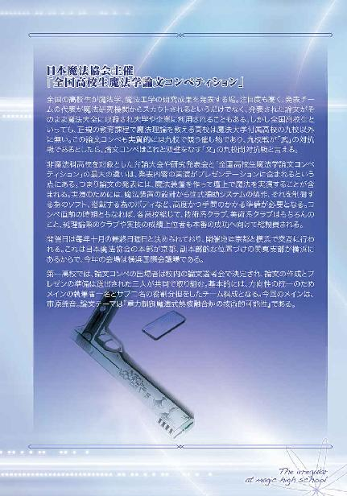

| 魔法科高校の劣等生(6) 横浜騒乱編〈上〉 (電撃文庫) | |
| 佐島 勤 | |
| (2016) | |



本書（電子版）に掲載されているコンテンツ（ソフトウェア／プログラム／データ／情報を含む）の著作権およびその他の権利は、すべて株式会社ＫＡＤＯＫＡＷＡおよび正当な権利を有する第三者に帰属しています。
法律の定めがある場合または権利者の明示的な承諾がある場合を除き、これらのコンテンツを複製・転載、改変・編集、翻案・翻訳、放送・出版、公衆送信（送信可能化を含む）・再配信、販売・頒布、貸与等に使用することはできません。


［１］
二十四時間体制を実現する為の自動化が推し進められた港湾諸施設は西暦二〇九五年十月現在、ほとんどが無人で運営されている。通関は日中にまとめて行われ、夜間は船舶の入港、荷揚げ、積み込み、出港の作業が完全自動化され、監視の為にわずかな人員が置かれているのみだ。
人手を減らした分、密入国者対策として保税地域と市街地の遮断がより厳重に行われるよう各港湾の全域的再開発が行われ、船舶の乗組員の上陸も保税地域については禁止されている。
逆に港湾施設が完全自動化される深夜については保税地域以外の接岸が禁止され、乗組員の上陸を必要とする船舶は有人運営が再開される朝まで沖合いで待機しなければならない。
真夜中ともなれば、貨物用の埠頭は完全に人通りが無くなる、はずだった。
だがこの夜、そろそろ日付も変わろうかという時刻、横浜山下埠頭には息を殺した大勢の気配があった。
『五号物揚場に接岸した小型貨物船より不法入国者が上陸しました。総員、五号物揚場へ急行してください』
短距離無線を通じて届いた指令に、二人の私服刑事が顔を見合わせる間も無く同時に走り出した。ただし、その表情は対照的だ。
「やれやれ、やはりあそこか」
「ぼやいている場合じゃありませんよ、警部！」
「しかしね、稲垣君」
「つべこべ言わずに走る！」
「俺は君の上司なんだが」
「歳は自分の方が上です」
「やれやれ」
年上の部下に対して適当な感じで応えながら、千葉寿和警部は足の回転を速めた。彼が警備についていた三号岸壁から五号物揚場まで七百メートル。どんなに全力疾走しても二分は掛かる距離だが、千葉警部と稲垣警部補は軽口を交わしながら三十秒で現場に到着した。
普通ならば生身の人間に出せる速度ではない。
そしてこの二人は普通の人間ではなく、魔法師だった。
「やはり人数不足だなぁ」
「仕方ないでしょう。魔法犯に対処できるのは魔法師の刑事だけなんですから」
「本当は、そうでも、ないんだが、ね！」
気の抜けた会話を気合代わりにして、千葉警部は高々と跳び上がった。
その手には全長一メートルほどの、反りの少ない木刀。
空中で木の葉の様に揺れながら、サプレッサーのついたサブマシンガンを三点バーストで乱射している密入国者の人垣を跳び越える千葉警部。この跳躍力はもとより、足場の無い空中で放物線を描かない軌道は言うまでもなく魔法によるもの。
その幻惑的な空中機動が、不法入国者たちに援護射撃の照準を許さない。
最後列で遠隔攻撃魔法を放っている魔法師の三人組へ向けて、千葉警部はスパイラルを描き襲い掛かる。重力と慣性を無視した移動魔法で敵の魔法照準すらもすり抜け、彼の木刀は三人組を次々に殴り倒した。
飛び越えた人垣の向こう側では稲垣がサブマシンガンの射手を拳銃で撃ち倒している。
挟撃の形で千葉も参戦し、十人を超える外国人をたちまちの内に制圧する。
同じような小競り合いが数箇所で起きていたが、助っ人に赴くまでもなく片がついたか、つきつつあった。
「警部、船を抑えましょう！」
「えっ、俺が？」
「つべこべ言わない！」
どうやらこのコンビは、部下の方が遥かに勤労意欲に恵まれているようだ（というより、上司の勤労意欲が乏しすぎるように見える）。それでもさすがに、密入国の現場を前にサボタージュを決め込む程ではなかった。
「分かった分かった。じゃあ稲垣君、船を止めてくれ」
「......自分では沈めることになるかもしれませんよ？」
「構わないよ。責任は課長が取るだろう」
「......責任は俺が取る、とは仰らないんですね」
ガックリと肩を落としながらも、リボルバーにケースレス弾を再装塡する手つきに淀みは無い。稲垣警部補がグリップ底部のスイッチを左手で押し込むと、バレル上部に取り付けられた照準補助機構の作動ランプが点った。
続けて武装一体型ＣＡＤ、リボルバー拳銃型武装デバイスのグリップに組み込んだ特化型ＣＡＤの本体が起動式を展開する。
引き金を引くと同時に、魔法式が作動。
移動・加重系複合魔法により軌道を固定し貫通力を増大させたメタルジャケット弾が、魔法式の設定したとおりの軌跡を描き、離岸する小型船舶の船尾を貫いた。
二度、三度と銃声が木霊し、船尾に生じていた気泡が勢いを失う。船の形状から予測しただけの射撃が、ものの見事にスクリューのギアボックスを撃ち抜いたのだ。
「お見事」
暢気な称賛を口にした千葉警部の手元でパチン、と留め金の外れる音がした。
木刀と見えたのは、その実、仕込み杖だった。
冷たく光る白刃を手に、惰性で漂い始めた船へ向けて、義経の八艘跳びも斯くやとばかり千葉警部が跳び移る。
着艇と共に振り下ろした刃は、鉄板の船室扉を真っ二つに切り裂いた。
百家・千葉一門の秘剣「斬鉄」。
刀を鋼と鉄の塊ではなく、「刀」という単一概念の存在として定義し、魔法式で設定した斬撃線に沿って動かす移動系統魔法。単一概念存在と定義された「刀」はあたかも単分子結晶の刃の様に、折れることも曲がることも欠けることもなく、斬撃線に沿ってあらゆる物体を切り裂く。
再度振り下ろした刃で進入路を確保し、千葉家総領・千葉寿和は単身、船の中へ踏み込んだ。
「お疲れ様です、警部」
「全く、骨折り損とはこのことだ」
白み始めた空の下で、笑い出すのを堪えていることが丸分かりな部下を叱責するでもなく、千葉警部は他人事の様にぼやいた。
彼が勇ましく斬り込んだ船の中は、ものの見事にもぬけの殻だった。密入国団は船底のハッチから脱出した直後と見えて、開け放たれたハッチは海水を噴き上げていた。
緩やかに沈没中だった船は、千葉が風通しを良くした所為で沈降速度を増し、今では完全に水没してしまっている。
「水中へ逃れた賊の行方は、まだ摑めていないようです」
「ヤツらの行く先なんて分かり切っているんだがね」
危うく沈没の巻き添えを食うところだった青年は、年上の部下のもの言いたげな視線に肩をすくめ、朝日を背に、西へ目を向けた。
◇ ◇ ◇
千葉警部が目を向けていた先、埠頭からそれほど離れていない所には、横浜の名所として知られている全国的に有名な繁華街があった。
その街の、表通りからは見えない、とある飲食店の裏庭に大きな井戸がある。その傍らに、早朝であるにも関わらず三つ揃えで身形を整えた若い男性が立っていた。
年の頃は二十代半ば。
見目麗しい青年だった。
女性的な容姿というわけではなく、いかにも貴公子然とした涼やかな容貌の持ち主だ。
その青年が見詰めている井戸は飲用ではなく防災用の物で、井戸の口はポンプで塞がっている。そのポンプを乗せた井筒（井戸の地上部分に設けた円筒状の囲み）の一部が何の前触れも無く崩れた。内側から押し破られてできた穴から、全身ずぶぬれの男が這い出す。一人ではなく、次々に。井戸の中から這い上がった男の人数は、最終的に十六名を数えた。
最後に上がって来た中年の男がこの様子を控えめな笑顔で見ていた青年の前に立ち、挙手敬礼を行う。青年は右手を左胸に当て、軽く腰を折って答礼した。
「まずは皆様、着替えてお寛ぎを。朝食を用意させております」
青年がそう話し掛けると、
「周先生、ご協力を感謝します」
中年の男がさしてありがたいと思っていない口調でこう答える。
しかし青年は相手のぞんざいな口調にわずかも笑みを崩さず、十六人の男たちを先導して建物の中に入った。
◇ ◇ ◇
国立魔法大学付属第一高校で新生徒会が発足してから一週間が過ぎた。
現在は昼休み。達也はＥ組の仲間たちと学食に来ていた。
彼が昼食時に生徒会室を使っていたのは、真由美の（ある意味で）職権濫用によるものだ。それに元々生徒会室の昼食会は、なし崩しに慣例化されたもので達也がそれを望んだわけではない。だから新生徒会の発足と共に、達也は食堂を利用するようになった。
そうすると自動的に深雪も食堂を使うようになる。そこに二人の共通の友人たちが加わって、賑やかなランチタイムが十月に入ってからの日課となっている。
とは言っても、達也・エリカ・レオ・美月・幹比古の五人と深雪・ほのか・雫の三人はクラスが違うから、どうしてもどちらかが先に来て席を取るという形になる。今日は達也たちＥ組メンバーが深雪たちＡ組メンバーを待つ形になった。
「すみません、お待たせしました」
「ご苦労様」
待った時間は十分ほど。予め生徒会の仕事で遅くなるという連絡を受けていた達也は、わざわざ彼の前に立ち止まって腰を折る深雪を笑いながら労った。それは大袈裟にすると目立つので構わず席に着くように、というサインでもあったが、ほのかは達也のそのセリフに何故か身体を小さくした。
「すみません、達也さん。私の所為で遅くなっちゃって」
夏休み、小笠原の別荘で過ごしたあの夜の告白以来、ほのかは達也のチョッとした言葉や表情に過剰反応する傾向が強くなった。達也もそれに気づいていたが、こういうことは言ってどうなるものでもない。ポジティブな反応なら笑って──例えそれが苦笑いであっても──済ませられるが、ネガティブな過剰反応を見せられると達也としては自分がほのかを虐めているみたいな気分になって余り居心地の良いものではなかった。しかし、残念ながら特効薬は無いのだ。それが誤解に起因するものなら都度都度解いておくしかない、という消極的な対応で良しとせざるを得ない、と達也は諦めていた。
「気にする必要は無い。最初は戸惑うことばかりだろうからね」
今回もほのかは自分が気分を害したと思って萎縮しているようだ、と達也は考えた。そんなに器が小さいと思われているのか？ という釈然としない思いを抱えながらも、彼は努めてさり気ない口調でほのかを宥めた。
「そーそー、気にすること無いって」
「まだ一週間だからな」
エリカとレオが意外に（？）細やかな気働きを利かせて達也に追従する。
全員が「気にしていない」という風に笑っているのを見て、ほのかは恐縮した様子でそっと腰を下した。
「でもお兄様、今日は本当にほのかの所為じゃないんですよ。職員室からいきなり『一昨年の記録を出せ』と申し付かりまして、三時限目を途中で切り上げて生徒会室でデータベースを検索していたんです。雫にも手伝ってもらって」
深雪が改めて笑顔でほのかをフォローする。しかしほのかは何故か、椅子の上でますます縮こまってしまった。
「でも......深雪はすぐに見つけたのに、私の手際が悪かったから......」
「私の方が手間取ったよ。ほのかが亀なら私は蝸牛」
雫のこの発言に他意は無い。
「深雪はあのシステムを四月から使っているからね。ほのかは生徒会役員になったばかりだし、雫は部外者だ。深雪とは経験が違う。多少もたつくのは仕方が無いよ」
だから悪気無くほのかを「亀」扱いした点についてはスルーして、達也はほのか（と雫）を重ねて慰めた。
ところで、今のセリフでお分かりのとおり、新生徒会発足に伴いほのかは役員に任命された。
新生徒会の顔ぶれは、会長・中条あずさ、副会長・司波深雪、書記・光井ほのか、会計・五十里啓、である。（一高の会計は権限の面で「監査役」に近く、会長と同学年から選ばれる慣例となっている）
実は当初、あずさは達也に副会長就任を打診した。無論達也は断ったが、彼本人よりも強く抵抗したのが新・風紀委員長の花音だった。
彼女曰く、「司波君に抜けられると委員会の事務が回らない」。
花音はこのセリフをあずさと達也の二人がいる前で堂々と口にしたのだが、これを聞いた時、達也は呆れて「開いた口が塞がらない」心境だった。
彼は委員会の事務担当ではなく、実働部隊なのだ。
いや、それを言うなら風紀委員会は実働部隊のみで構成された組織なので、事務面は全員が分担して行うことになっている。
摩利から花音に渡された引継書にもそう書いてある。
達也が自分で打ち込んで書込プロテクトを掛けたのだから、間違いは無い。
しかし、あずさは花音の主張に、大きく頷いていた。
達也は二人の二年生の「誤解」に、頭を抱えたかった。
そんな彼の心境を余所に、花音の言い分を認めながらもあずさは強硬に達也の生徒会移籍を主張した。直接口にはしなかったが、達也がいなければ深雪を抑える自信が無い、だけど深雪を生徒会から外すこともできない、というのが本音のようだった。
達也は本格的に頭痛を感じた。
そんな、本人を無視した交渉の結果、今年度中は風紀委員会に残留し、新年度から生徒会へ移籍することで、あずさと花音は合意した。
達也の意向は、遂に問われなかった。
（......思い出したらまた頭が痛くなって来たぞ）
生徒会役員になったばかり、という自分のセリフで一週間前の出来事を連鎖的に思い出して、達也はその時の頭痛まで思い出していた。
ふと視線を感じて目を動かすと、深雪が少し心配そうな眼差しを彼へ向けていた。
妹の鋭さに舌を巻きながら、達也は何でもないと目で答えて箸を持つ手の動きを再開した。
◇ ◇ ◇
「お兄様、いらっしゃいますか？」
放課後、図書館の地下二階資料庫にこもっていた達也は、妹の自分を呼ぶ声に文字と数式の世界から現実世界へ意識を引き戻した。
「深雪、こっちだ」
達也は閲覧用の端末から顔を上げて、深雪に応えた。
この資料庫内は無線が通じていない。電波それ自体も隔壁で減衰してほとんど届かないが、更に通信妨害が掛けられている。
情報漏洩防止の為の措置だ。
この資料庫にはオンライン化が不適切と判断された資料が格納されている。扱い方によっては危険度の高い資料、現在主流となっている理論から外れすぎていて生徒に悪影響を与えるおそれの高い論文、そういう文献が魔法大学から物理的な記録媒体で運び込まれ、クローズドデータベースの中に収められている。資料の利用は原則として自由だが、持ち出しは禁止されている。無論、コピープロテクトが施されていて情報端末にこっそり写して、ということもできない。
その性質上、授業で参照されることの無いものばかりなので、ここを利用しようという物好きはほとんどいない。利用者ゼロの日の方がむしろ多いほどだ。しかしここ半月ほど、達也は資料庫の連続稼働日数記録を更新していた。
深雪に返事はしたものの、達也は閲覧用端末から離れようとしない。深雪も心得たもので、自分から達也の許へ歩み寄った。
「何をご覧になられているのですか？」
達也の隣まで来て、それでも無断でディスプレイをのぞき込むような真似はせず、深雪は訊ねた。
「『エメラルド・タブレット』に関する文献だ」
深雪の問いはいつもどおり遠慮がちなものだったが、達也の答えもまた、いつもどおりに歯切れの良いものだった。他の相手ならともかく、深雪に隠さなければならないことなど達也にはほとんど無い。そしてこの調べものは、深雪も良く知っている目的の為のものだ。
「最近ずっと錬金術関係の文献を調べておいでのようですが......？」
ただ今の調べものとその目的がどうつながるのか、その点の説明はしていない。深雪が当惑するのも無理のないことだった。
「知りたいのは錬金術そのものではなく『賢者の石』の性質と製法なんだけどね。もっとも、賢者の石の精製こそ錬金術の目的と説く文献もあるんだが」
「物質変換......に挑戦するおつもりではありませんよね？」
物質変換は現代魔法学で不可能とされている技術だ。飛行魔法も同じように不可能とされていたが、物質変換は予想される不可能の度合いが違う。達也も「物質変換魔法の実現可能性は極めて低い」と話していたのを深雪は覚えていた。
「そうじゃないよ」
案の定、深雪の問い掛けを達也は笑って否定する。
「狭義の、『エリクシール』と区別して定義する場合の『賢者の石』は、卑金属を貴金属に変換する魔法に使用する触媒だ。触媒というからにはそれ自体が材料となるものではなく、術式を発動させる為の道具だろう」
「触媒という言葉がわたしたちの使っているものと同じ意味なら......そうなりますね」
「卑金属を貴金属に変換する魔法は、材料に『賢者の石』を作用させることにより貴金属を作り出すと伝えられている。他に魔法的なプロセスを必要とせず石を使うだけで物質変換魔法が使えるのであれば、『賢者の石』は魔法式を保存する機能を有していると考えられる」
「魔法式を保存、ですか？」
目を大きく見開いて驚きを表現する深雪を見詰め返す達也の顔は、もう笑っていなかった。
「変数をわずかずつ変更しながら重力制御魔法を連続発動するノウハウは飛行魔法の実現によって収集できた。正式に商品化する前から色々な魔法師が飛行魔法を試してみてくれたからね」
達也が飛行魔法の起動式を無償開放したのは、実を言えばこれが狙いだった。仕組が手に入ったなら、次は実際に試してみたいと考えるのが自然な流れだ。起動式が実装済みのデバイスがあれば、それを使ってみるのが手っ取り早い。事実、ＦＬＴの飛行デバイスをテストしてみたいという申し出は国内のみならずＵＳＮＡ（北米合衆国。旧ＵＳＡがカナダとメキシコを吸収してできた連邦国家）を筆頭に友好諸国から数多く寄せられ、ＦＬＴはトライアルをモニターするという名目で高位の魔法師による重力制御魔法のデータを数多く手に入れた。そしてその全てが達也の元に集まって来たのだった。
「重力制御魔法で核融合を維持する方法についてはこれで目処がついた。だが魔法師がずっとついていて魔法を掛け続けなければならないのでは意味が無い。それでは魔法師は、核融合炉のパーツになってしまう。役割が兵器から部品に変わるだけだ」
常駐型重力制御魔法による熱核融合炉の実現は、加重系魔法の三大難問の一つ。それに達也は、解決の目処をつけたと言う。
達也の話の全てを理解するのは深雪にも難しかったが、兄が何を言いたいのか、そこだけは完全に理解していた。
「動かすには魔法師が不可欠、しかし同時に、魔法師を縛り付けるシステムであってはならない。その為には魔法の持続時間を日数単位に引き伸ばすか、魔法式を一時的に保存して魔法師がいなくても魔法を発動できる仕組を作り上げるか......どちらも手探り状態だが、安全性を考えれば後者の方が望ましい」
「それで『賢者の石』について調べられているのですね」
達也の言っていることは常識的に考えると夢物語でしかない。それを彼は自覚している。だから自分の言葉を微塵も疑っていない顔で深々と頷く妹に少し気恥ずかしさを覚えて、達也はいきなり話題を変えた。
「そういえば深雪、何か用があったんじゃないか？」
それは照れ隠しから出た質問だったが、結果的にファインプレー（正確にはナイスバックアップ）だった。
「そうでした！ お兄様、市原先輩がお探しでした。何でも、来月の論文コンペのことでお兄様にご相談がお有りだとか」
「何処で？」
それだけを訊ねながら達也は閲覧用端末を閉じた。責任を問うようなことは口にしない。無駄話をしたのは達也にも責任があることだし、責めたところで時間が戻るわけでもない。
「魔法幾何学準備室です。廿楽先生のデスクでお待ちになっていらっしゃると」
「分かった。深雪、すまないがここの鍵を返しておいてくれ」
「かしこまりました」
椅子から立ち上がり、達也は深雪に接触タイプのカードキーを差し出した。兄の手から嬉しそうに鍵を受け取る深雪。その姿は構ってもらえて喜んでいる子犬のようだ。
愚痴ったり叱ったりしないのはともかく、まるで悪びれた様子の無い妹を見て頰を緩めている達也は──客観的に見て、妹に甘すぎると言わざるを得なかった。
◇ ◇ ◇
廿楽計夫。国立魔法大学付属第一高校で魔法幾何学のオンライン講義と二年Ｂ組の実技指導を担当。本職は国立魔法大学の講師で第一高校には在籍出向の形で赴任している。
若くして魔法大学の助教授の地位に手を掛けていた英才だが、自由すぎる研究姿勢が災いし「教育者として経験を積んで来い」という名目で足踏みを余儀なくされているところだ。
しかし本人はこの左遷（？）をまるで気にしておらず、むしろ「気兼ね無く好きな研究ができる」と喜んでいる有様。そういうマイペースな気質故に一科生と二科生の対立にも無頓着で、見込みがありそうな生徒は一科・二科に関わらず構ってくれる──ただし、生徒のペースは考えずに──と評判の教師だ。
実家は百家本流、数字付きの廿楽家（廿は二十）。廿楽は五十里と同じく研究者を輩出する家系で、複数の魔法による事象改変同士の相互作用に関する国内の権威とされている。服部が得意とするコンビネーション魔法も廿楽の指導により開花したものだ。
......というのが、達也の知る廿楽教諭のプロフィールだった。
データから判断する限り、紛れも無い変人である。それはミスリーディングでもなんでもなく──達也はもうすぐ、その片鱗を実感することになる。
達也が訪れた時、魔法幾何学準備室に廿楽以外の教師はいなかった。
多分、居心地が悪いのだろう、と達也は思った。
この学校に採用される教師は皆、優秀な人材ばかりだ。
当然、自分の能力にそれなりの自負を抱いている者ばかりだが、二十代で国立魔法大学の助教授の座にリーチを掛けていた英才に比べれば自信を無くしてしまうのも仕方が無い。自らの才に頼むところが大きい人間ほど、より大きな才能に触れることでストレスを感じてしまう傾向がある。
彼も身に覚えがあることだった。──魔法以外の才能で、だが。
達也の推測が当たっているかどうかは別にして、今この部屋に廿楽以外の教師がいないのは客観的な事実。
魔法幾何学準備室で彼を待っていたのは、廿楽と鈴音と五十里の三人だった。
「今月末に魔法協会主催で論文コンペがあるのは知っていますね？」
一通り前置きとなる挨拶を交わした後、廿楽が切り出した用件はそんなセリフから始まった。
「詳細は知りませんが」
保留付きの肯定を返すと、廿楽は一つ、頷いた。
「九校戦と違って論文コンペは地味ですから、一年生の君が詳しく知らなくても無理はありません。人数面でも、合計五十二人の大選手団を編成する九校戦に対して、論文コンペはわずか三名のチームで参加するものですから」
こうして目の前で人数を対比されると驚きを禁じ得ないが、冷静に考えれば論文を作成してプレゼンテーションするだけのことに大人数は必要ない。プレゼン用の小道具作成に人数が必要となる場合は校内から助っ人をかき集めれば済む話で、論文作成自体に関わらせる必要は無いのだ。人数が増えるとかえって「船頭多くして......」という羽目になってしまう。全校で三名という人数は予想外に少ないものだったが、まあ妥当なものだろう、と達也は考えた。
「さて、それでは本題です。司波君、第一高校代表チームの一員として、論文コンペに参加してもらえませんか」
達也が咄嗟に反応できなかったのも、無理のないことだろう。あの程度の前置きで唐突感を拭い去れる用件ではなかった。
「......自分が、ですか？」
廿楽の発言に誤解の余地は無かったが、達也はそう訊き返さずにはいられなかった。
日本魔法協会主催「全国高校生魔法学論文コンペティション」。
全国高校生、といっても、正規の教育課程で魔法理論を教える高校は魔法大学付属高校の九校以外に無い。この論文コンペも実質的には九校で競う催し物であり、九校戦が「武」の対抗戦であるとしたら、論文コンペはこれと双璧をなす「文」の九校間対抗戦と言える。
「君が、です」
やや芝居がかった丁寧な口調が彼のパーソナリティなのだろう。廿楽はオーバーアクション気味に頷いてそう答えた。
「本来は市原君と五十里君と、それから三年Ｃ組の平河君に出場してもらう予定だったのですが......平河君が最近体調を崩しているようだと思っていたら、先週突然退学届けを持って来たのですよ。何とか退学は思い留まらせましたが、とてもコンペに出られるような状態ではありません。そこで、君に白羽の矢が立ったというわけです」
達也も三─Ｃの平河という名前には覚えがあった。
確か、九校戦で不正工作の犠牲になった小早川の、ミラージ・バットのエンジニアを務めていた三年の女子生徒が平河小春という名前だったはずだ。
「しかし何故、一年生の自分を？ 論文コンペの出場者は、校内の論文選考会で決定されたのではありませんでしたか？」
六月初頭に論文コンペ出場者の募集が学内ネットに流れていたことを、達也はようやく思い出していた。
あの時期は飛行魔法の開発最終局面で他のことに手を出している余裕は無かったし、それ以上に彼の立場として目立つ真似は好ましくなかったので、即時スルーしたまま忘れ去っていたのである。
「プレゼンの準備は共同作業ですから、君が適任なのですよ。詳しい話は市原君から聞いてください」
達也の質問に対し一方的にそう告げると、廿楽はそそくさと部屋を後にした。
達也は一言も「引き受ける」とは言っていないのだが。どうやら「生徒のペースを考慮しない」という噂は誇張ではなかったようだ。
とにかく、彼に拒否権は無いらしい。話を聞く前はせいぜいデータ集めの実験を手伝えという程度の用事だと思っていたのだが、少々予測が甘かったようだ。とはいえ心の中でいくらぼやいてみても事態は一向に開けはしないので、説明を求めて達也は鈴音の方へ向き直った。
「司波君を推薦したのは私です。他の代役は拒否させてもらいました」
（いや、拒否って......）
視線の問い掛けに応えて、鈴音はいきなり爆弾を炸裂させた。
「......しかし応募者の皆さんは、コンペに出場する為に少なからぬ時間を割いて労作を仕上げたはずです。選考論文を提出してもいない俺がいきなりメンバーに選ばれたのでは、納得できない人も少なくないと思いますが」
ただでさえ自分が悪目立ちしているという自覚が達也にはある。これ以上、波風を立てる真似をさせられるのは勘弁して欲しいところだった。
「例えば市原先輩、五十里先輩、平河先輩の次点だった人の心中は如何なものでしょうか」
「関本君はダメです。彼は今回の作業に向いていません」
達也は特定の誰かを念頭に置いた話をするつもりは無かったのだが、鈴音はいきなり個人攻撃とも思われるセリフを繰り出した。
「関本、というと、風紀委員会に在籍している関本勲先輩のことですか？」
達也が流してしまうと本物の個人攻撃に発展しそうだったので、あえて人物を特定してみた。
すると、
「ええ、まあ......彼と私では、方向性が違いすぎます」
さすがに鈴音もまずいと思ったのか、達也の注文どおりトーンを緩めた。
そこに五十里のフォローが入った。
「先生も言ったように、論文の作成とプレゼンの準備は三人が共同で取り組むんだけど、三人がバラバラにアイデアを出し合っているだけじゃ論文の方向性も決まらないから、メインの執筆者一名とサブ二名の役割分担はどうしても必要になる。そして今回、当校のメイン執筆者は市原先輩なんだよ」
五十里の解説に、達也は二つの意味で頷いた。確かにメインとサブの役割分担は必要だし、三年生理論トップの鈴音がメインを取るのも納得できる。
「つまり......市原先輩の論文のテーマに、俺が適しているということですか？」
話の流れからしてそういうことなのだろうが、だったら何故、そんな判断ができるのだろうか？ 達也はまだ、自分の名前で論文を発表したことが無い。
「私の論文のテーマは、『重力制御魔法式熱核融合炉の技術的可能性』です」
達也の質問に対する鈴音の間接的な回答に、達也は軽く目を見張った。
「そう、司波君の研究テーマと同じです」
高校生に「研究テーマ」という言葉は大袈裟にも思えるが、確かに常駐型重力制御魔法式熱核融合炉は達也の目指すゴールの一つだ。しかしそのことはまだ胸の内に秘めている段階で、ほとんど口にしたことは無いはず......
「......そうか。あの時、俺たちを監視していたのは市原先輩だったんですね」
「監視、というのは語感が良くないですね。関心を持って見ていた、ということにしておいてください」
見ていただけでなく盗聴もしていたでしょう、とは、達也は言わなかった。
四月、反魔法テロ組織介入事件の最中、壬生紗耶香と二度目の接触を持ったカフェで、達也は監視の視線を知覚しながらその正体を見極めようとはしなかった。結果的に黙認してしまった以上、今更文句を言える筋合いではない。
「論文コンペの本番まで、残り三週間しかありません。今からこのチームに加わることができるのは、同じテーマに取り組んでいる司波君だけだと判断しました」
「俺がカフェで壬生先輩に話した内容が口先だけ......とは、思わなかったんですか？」
「その程度の人を見る目はあるつもりですよ」
随分高く買ってくれたものだ、と達也は内心だけでなく面に出して苦笑した。
「分かりました。どうやら俺にとってもメリットのある話のようですし、協力させていただきます」
メリットがある、というのはお愛想ではなく本心だった。鈴音がどういうコンセプトで「三大難問」の一つをクリアしようとしているのか純粋に知的な興味があったし、自分のプランに利用できるようなら利用させてもらおうと達也は考えていたのである。
「それで、俺は何をすれば良いんですか？」
「それではまず論文コンペティションについて一通り説明したいと思いますが、五十里君、構いませんか？ 貴方には改めて説明を受ける必要の無いことばかりだと思いますが」
「構いません。よろしくお願いします、市原先輩」
軽く頭を下げた五十里に目礼を返し、鈴音は壁のオープンラックから三枚の携帯黒板を取り出して一枚ずつ二人に渡した。
携帯黒板とは無線データ通信機能を備えた電子ペーパーで、参会者が片手に持って資料を読めるように大判レポート用紙サイズの薄板形状となっており、大画面のディスプレイを必要としない小規模なミーティングで使用される。画面は無論フルカラーだが、テキストのみ表示の場合は黒い背景色に白のハイコントラスト文字が一般的で、「黒板」の名称はこの配色に由来する。
鈴音は自分の情報端末を携帯黒板のホルダーにセットして論文コンペの案内書を呼び出した。
「司波君も知っているとは思いますが、論文コンペは高校生が魔法学、魔法工学の研究成果を発表する場です。高校生の学習結果発表ではなく、学会などの発表機会を持たない高校生が自分たちの研究を世に問う為の場所。代表が魔法研究機関からスカウトされるというだけでなく、発表された論文がそのまま魔法大全に収録され大学や企業に利用されることもあります」
達也は自分の手元に表示された案内書を見ながら、鈴音の声に耳を傾けた。
「開催日は毎年十月の最終日曜日と決められています。開催地は京都と横浜で交互に行われます。これは日本魔法協会の本部が京都、副本部的な位置づけの関東支部が横浜にあるから、と言われています。今年の会場は横浜国際会議場です」
達也は自分のスケジュール表を脳裏に展開してみた。幸い十月の最終日曜日、即ち十月三十日は予定が入っていない。
「参加資格は国立魔法大学付属高校から推薦を受けた者、または論文の予備選考を通過した高校生のグループとなっていますが、過去に非推薦枠からプレゼンに進出した例はありません。規定上はオープン参加となっている全国高校生魔法学論文コンペティションが、魔法科高校論文コンペと呼ばれている所以です」
説明の途中だったが、意外感に捕らわれて達也は思わず問いを挿んだ。
「学校から推薦を受けなかったグループがプレゼンへ進出した例は無いんですか？」
「......司波君。普通の高校生にとって、三十分間のプレゼンに堪える論文を書き上げることは、モノリスやミラージに出るよりずっと難しいものだと思うよ」
「五十里君の言うとおりでしょうね。私たちの場合に当てはめてみても、生徒会と部活連の協力が無ければ、三人だけではとても準備が終わりません」
システムの仕様書を書き慣れている達也は心の中で「そうかな？」と呟いたが、あえて異を唱えはしなかった。
「テーマは原則として自由ですが、公序良俗に反しない内容であることが当然の条件になっています。一昨年、大量破壊兵器に代替する魔法の開発をテーマにした生徒がいましたが、事前審査ではねられました」
「随分突き抜けてる人が居たんですね......」
この話は初耳だったと見えて、隣で五十里が目を見張って呻いている。
その気持ちは良く分かる、と達也は思った。同時に、実際に大量破壊魔法を開発した自分にその生徒を非難する資格など無いだろうな、とも思った。そんな自嘲的な気分に浸っていると、不意に一つの疑問が頭をもたげた。
「......事前審査ではねられたということは、当然その論文は非公開になったんですよね？ 論文が公開されなかったのに、市原先輩は何故その論文のことを知っているんですか？」
何の気なしに放った達也の質問は、何故か、気まずい沈黙を招いた。
うっかり苦虫を嚙み潰してしまったような顔で目を逸らす鈴音。
いえ、答えたくないことならば、と達也が言いかけたところで、彼女はため息混じりに口を開いた。
「......その論文の執筆者は当校の三代前の生徒会長です」
（......当校にもそんな猛者が居たのか）
鈴音の告白に、達也は呆れるより感心していた。論文コンペの時期は生徒会の代替わりの後で、鈴音は一年生の後半から役員を務めていたということだから、その事件のことを知っていても不思議は無い。鈴音の顔色を窺うに、その元生徒会長には他にも色々「武勇伝」がありそうだ。
「コホン......そんな前例もありますので、論文の完成稿と使用する機材、術式を含めたプレゼンの企画書を事前に魔法協会へ提出しなければなりません」
わざとらしく咳払いする鈴音の隣で五十里がウンウンと頷いているのは、やはりこのエピソードが初耳だった所為だろう。
「期限は再来週の日曜日。提出先は魔法協会関東支部ですが、学校を通じての提出になります。廿楽先生に内容をチェックしていただく時間を考えて、来週の水曜日には仕上げた方が良いでしょう」
提出後にプレゼンの準備は進められるとしても、論文の作成自体は、残り、正味十日も無いわけだ。日数を計算して「結構タイトだな」と達也は思った。しかし何故、廿楽に見てもらうのだろうか？ この学校にはもっとベテランの、魔法教育用の教科書を何冊も手掛けているような教師もいるのだが。
そんな口に出せない疑問（口に出すのは廿楽に対して失礼だろう）を達也が心の棚に収めていたところ、五十里が察し良く答えてくれた。
「廿楽先生は今年の校内選考責任者なんだよ。論文コンペの準備は自分の専門外までフォローしなくちゃならない上に、魔法実験の準備とかで結構面倒なことが多いからね。大体、若い先生が押し付けられちゃうみたいだ」
「若いと言っても、廿楽先生は優秀な方です。通常の授業より遥かに深く踏み込んだレベルで先生の指導を受けられる私たちは、むしろ幸運だと言えます」
指導教官の個別指導を受ける資格の無い、二科生の自分にとっては特に、とは、達也は口にしなかった。
二人ともそのこと──深いレベルどころか、通常の指導も受けられない生徒が全校生徒の半数を占めるということ──には気づかなかったようだし、気づかせる必要も無かった。
その後、細かな注意点を列挙して鈴音の説明は終わった。
［２］
現代の近距離公共交通システムは「カー・シェアリング」の考え方を発展させ、大量輸送機関から少人数小型輸送機関へシフトしている。三十年前から始まったこの動きは大都市圏においてほぼ完成し、中小地方都市においても普及率は八割に達している。そして残りの二割は、そもそも公共交通機関が整備されていないマイカー都市だ。
通勤や通学の近距離輸送に関しては、連結電車や大型バス等の一度に大人数を運ぶ輸送機械はほとんど使用されておらず、中高生が同じ電車やバスを利用して一緒に登下校するという景色も絶えて久しい。
達也も本当の意味で一緒に登下校する相手は深雪だけだが、校門から駅までの徒歩十分は友人と一緒になることもしばしばだ。今日も遅くまで学校に残っていたにも関わらず、校門を出る前からいつものメンバーが揃っていた。
そのまま駅まで直行する日が圧倒的に多いが、途中の喫茶店やファーストフード店へ寄り道する日も偶にある。学校から駅までは道なりでも一キロメートル未満だが、この短い通学路には学生向けの店がびっしりと軒を連ねている。飲食店だけでなく書店、文具店、服飾店も多く、特に魔法教育関係の品揃えは豊富で、第一高校の生徒・教職員だけでなく、わざわざ電車を使ってやって来る遠方からの買い物客も少なくない。
その中でも割と本格的な店構えの喫茶店、彼らもそろそろ常連扱いを受ける程度には足繁く通っている店に、八人は腰を落ち着けていた。
「えっ？ 達也、論文コンペの代表に選ばれたんだ？」
今日の寄り道は、幾何学研究室への呼び出しが何だったのかを幹比古に訊ねられたのがきっかけだった。オーダーの到着を待ちきれずに質問を再開した幹比古に、割とせっかちなんだな、と友人の新たな一面を発見した気分になりながら、達也は先程の一幕を説明した。
それに対する幹比古の反応が、このセリフだった。
深雪とほのかは生徒会室へ迎えに行った際、既に伝えてあるから別として、幹比古を含めた他の五人は目を真ん丸にして驚きを表していた。
「でも、論文コンペの代表って、全校で三人だけなんじゃないんですか？」
「まあね」
目を丸くしたまま問い掛けた美月の質問を、達也があっさり肯定する。二人の表情は、まさしく対照的だった。
「まあね、って......達也くん、感動薄すぎ」
絶句する美月と呆れ顔のエリカ。その隣でレオが楽しそうに笑っている。
「達也にしてみりゃ、その程度は当然、ってこったろ」
「一年生が論文コンペに出場するなんてほとんど無かったことだよ」
「皆無でもないんだろ？ 職員室だって、インデックスに新しい魔法を書き足すような天才を無視できるはずねえって」
雫の反論に笑顔のまま再反論したレオ。
「天才は止めろ」
それに対して、照れているのではなく、本気で嫌そうに達也が釘を突き刺した。
「達也さん、本当に天才と言われるのがお嫌いなんですね......」
「都合の良い言葉だから」
皮肉その他の他意も無く不思議そうに問い掛けたほのかに、達也ではなく深雪が答えた。
達也は妹の回答に苦笑するだけで、そうだとも違うとも言わなかった。
「いや、やっぱり凄いよ！」
あやしくなりかけた雰囲気を気にしてか、漂い始めた暗雲を吹き飛ばす勢いで幹比古が力説した。
「あの大会の優勝論文は『スーパーネイチャー』で毎年採り上げられているし、二位以下でも注目論文が学会誌に掲載されることも珍しくないくらいだから」
スーパーネイチャーというのは、現代魔法学関係で最も権威があると言われているイギリスの学術雑誌のことだ。その反面、権威主義的なところがあって高校生が読むには不親切な内容だが、幹比古だけでなく達也、深雪、雫もこの雑誌を購読していたし他のメンバーも名前とステータスは良く知っていた。
「あっ、でも......もう余り日が無いんじゃなかったっけ？」
ハイテンションから一転、心配そうな表情で幹比古が問い掛けて来る。
この浮き沈みの激しさに、幹比古の方こそ何かあったんじゃないかと達也は訝しさを覚えた。しかしそれを表に出すことはせず、達也は幹比古の問いに頷いた。
「学校への提出まで、正味九日だな」
「そんな!? 本当に、もうすぐじゃないですか！」
「大丈夫だよ。俺はあくまでサブだし、執筆自体は夏休み前から進められていたんだから」
顔色を変えたほのかを宥めるように笑いながら手を振る達也。その姿に「それもそうか」と一同は安堵の息を漏らした。
「しかし、随分急なお話であることに変わりはありません。何かトラブルがあったのでしょうか？」
「サブの上級生が体調を崩したらしい」
眉を顰めた深雪の問いに、達也は笑顔のままで簡潔に答えた。先程は説明しなかったが、訊かれれば隠すことでもない。
ただ達也の簡単な答えでは、深雪を完全に納得させることはできなかった。
「それはお気の毒ですが、それにしても急すぎはしないでしょうか」
事情は納得できても心情的には納得できない、という様子だ。
「確かにお兄様だからこそ、いきなり論文作成のチームに加われと言われてもすぐに対応できるのですから、適切な人選とは思いますが」
だが、達也の代役は既に決定事項だ。深雪が自分を納得させる為に選んだ論法は、実に彼女らしいものだった。今回について言うならあながち買いかぶりでもなかったが、無条件で頷くのはナルシズムが過ぎるように達也には思えた。
「そうでもないさ。市原先輩の選んだテーマが俺の全く知らない分野だったら、さすがに遠慮させてもらったよ」
そこで達也が採った対応は「笑いながら部分否定」というものだった。深雪はそんな兄の態度に不満を覚えないでもなかったが、彼女が言葉を選んでいる内に達也に対して新たな質問が投げ掛けられた。
「へぇ、何について書くんだ？」
好奇心も露わに身を乗り出してきたレオに、「アンタが聞いて分かるの？」という冷たい眼差しを向けた少女がいたが、質問者も回答者もスッパリ無視した。
「重力制御魔法式熱核融合炉の技術的問題点とその解決策についてだ」
「......想像もつかねえよ」
もっとも質問者側はすぐに、ツッコミに対して間接的に回答する羽目になってしまったが。
「......随分壮大なテーマだね。それって『加重系魔法の三大難問』の一つじゃなかったっけ」
幹比古が難しそうな顔で呻る、その隣で、
「達也さんが呼ばれたのですから、てっきりＣＡＤプログラミングに関する論文だと思っていました」
美月が意外感を表明する。
「あっ、私もそう思った」
「啓先輩もメンバーに入ってるからねぇ......あたしもそのテーマなら、優勝間違い無しってくらい、凄いのができると思うんだけど」
雫とエリカも、美月と同意見のようだ。どうやら友人たちは、達也の、というか、高校生の手に余るテーマではないかと懸念しているらしい。
それもまあ当然のことで、重力制御魔法式熱核融合炉の実用化が「三大難問」に数えられているのは伊達ではない。だから達也もこの場は笑って誤魔化した。
和やかな笑みの中で、ただ深雪だけが、笑わなかった。
顔は笑みを作っていたが、瞳が笑っていなかった。
常駐型重力制御魔法式熱核融合炉の研究が持つ意味を知る彼女は、兄がこの上なく本気であることを知っていた。
◇ ◇ ◇
駅で友人たちと別れた兄妹は、帰宅した自宅の駐車場にシティコミューターが停まっているのを見て顔を見合わせた。
達也が先に立って扉を開ける。
玄関に揃えられた、地味なデザインの見慣れないパンプスに、顔を強張らせ、息を吞み、立ちすくんだ深雪の肩を、達也は優しく抱き寄せた。
そのまま背中を押して上がり框に足を掛けたところで、パタパタとスリッパを鳴らして小走りに近づいてくる足音が聞こえた。
「──お帰りなさい。相変わらず仲が良いのね」
からかい混じりに投げ掛けられたその言葉に、達也はスッと目を細め、ピクッ、と震えた妹の身体に、肩を抱く手を少し強めた。
「こちらへお帰りになるのは久し振りですね、小百合さん」
冷たい眼差しに相応しい、冷却された声で達也が応える。
今度は出迎えた女性の小柄な体がビクッ、と震えた。
「え、ええ、その、本社に近い方が、どうしても便利だから」
「分かっていますよ」
九ヶ月ぶりに帰宅した義理の母──兄妹の意識の中では「父親の後妻」──、司波小百合に対し、達也は素っ気無く頷いた。
帰宅したといっても、この家には彼女の部屋も寝具も無い。彼の父親と結婚して以来、彼女はフォア・リーブス・テクノロジー本社から歩いて五分の場所にある高層マンションの最上層に近い部屋で夫婦水入らずの結婚生活を営んでいる。達也のセリフは、再婚後に一度も住んだことの無いこの家が、住民登録上では小百合の住所になっているという皮肉に他ならなかった。
この程度の些細な嫌みに落ち着きを失っている父親の後妻を見て、深雪は逆に落ち着きと精神的な余裕を取り戻した。兄に肩を抱かれたまま身体の向きを変えて、正面からしな垂れ懸かるように達也へ顔を寄せる。他人の視線を完全に無視した所作だ。
普段は二人きりであっても、ここまで積極的な──はしたない、とも言う──真似はしない。深雪はあえて、誰も見ていないかのように振舞っているのだった。
「すぐに夕食のお支度をします。お兄様、何か召し上がりたい物はありませんか？」
「お前の作るものなら何でも。急がないから着替えておいで」
小百合の方へは目もくれず、自分だけに目を向けて答えた兄の言葉に、深雪はクスッと優越感を漂わせる笑みを漏らした。
「分かりました。着替えの方も何かリクエストがお有りでしたら。お兄様がお望みなら、深雪はどのような格好でも致しますよ」
「こらっ、調子に乗り過ぎだ」
軽く小突くフリをすると、首をすくめて深雪は軽やかに二階へ駆け上がった。
「では、お話をうかがいましょうか」
深雪の姿が見えなくなって、達也は所在無げに立っている小百合に声を掛けた。さっさとリビングに入り、ソファに腰を下して、出入口でモタモタしている小百合に再度、声を掛ける。
「急かすようで気が引けますが、妹が席を外している間に済ませてしまいたいので」
遠慮の無い物言いにムッと顔を顰めながらも、小百合は勧められるまま達也の対面に座った。
「相変わらず貴方たちは私のことが気に入らないようね」
取り繕っても無駄だと感じたのだろう。腰を下すと同時に小百合の態度はざっくばらんなものに変わった。達也の視線を気にする素振りも無く、ソファに背中を預けて脚を組む。研究者気質なのか、飾り気も化粧気も少ないパンツスーツ姿なので目のやり場に困るということは無かった。──もっとも、小百合のボトムがタイトミニとかであっても達也は眉一つ動かさなかったに違いないのだが。
「深雪はそうですね。実の母が死んでから半年で再婚となれば、心の中にしこりを残しても仕方の無いことでしょう。大人びて見えてもまだ十五歳の少女ですから」
「......貴方はどうなの？」
「そのような感傷には縁がありません。俺は、そういう風にできています」
「......まあ、いいわ。それが本音でも強がりでも、私にはどうしようもないことだから。でも、そこまで言うんだったら私の言い分も聞いて欲しいわね。貴方たちにとっては半年でも、私にとっては十六年なのよ」
そういえば若作りに見えてこの人は親父と同じ歳だったな、と、達也は世の女性を敵に回すようなことを考えた。
彼女、司波小百合、旧姓古葉小百合は、司波龍郎が四葉深夜と結婚する前、司波龍郎と恋人同士の関係にあり、良質の遺伝子を求めた四葉の横車によって強引に別れさせられたという過去を持つ。そのことを知っている達也にすれば、恨み言を口にしたくなる気持ちも分からないではない。
ただそれはあくまで、父親と母親と彼女の問題であって、彼ら兄妹の関知するところではなかった。母親の生前から父親と彼女が愛人関係にあったとなればなおさら同情の余地は無い。
「それで、本日はわざわざ何のご用件ですか？」
無意識の内に本題の先送りを図っていた小百合は、達也の問い掛けにグッと息を詰まらせたが、何とか不自然にならない程度の間で会話を再開した。
「......じゃあ、単刀直入に言うわ。貴方にまた、本社の研究室を手伝って欲しいのよ。できれば、高校を中退して」
「それは不可能です。深雪が一高に通っている間は俺も一高生でいないと、ガーディアンの任務が果たせなくなります」
遠慮の無い要求に、遠慮の無い拒絶。
「貴方が進学しなければ別のガーディアンが手配されたはずでしょう」
「何処の業界も魔法師は人手不足だ。いくら四葉でも、そう簡単に代わりのガーディアンは見つかりません」
「自分ほど優秀な護衛はいない、って言いたいわけ？」
「深雪の護衛に限って言えば、そのとおりです」
これは、過去何度も繰り返された遣り取りだった。
ふぅ、と小百合が漏らした大きなため息は、あながち演技とも見えなかった。
「......貴方の様に優秀なスタッフを遊ばせておく余裕は、うちの会社には無いのだけど」
「遊んでいるつもりはありませんが？ 今期も会社の利益に大きな貢献をしているはずですよ、俺は。先日はＵＳＮＡの海兵隊から飛行デバイスを大量受注しているでしょう。あれだけでも前期の利益の二十パーセントになるはずだ」
あえて挑発的に放たれた達也のセリフに、小百合が悔しそうな表情を浮かべた。
達也の指摘には、反論の余地が無かった。
ＦＬＴは元々ＣＡＤの完成品メーカーとしてではなく魔法工学関係の部品メーカーとして知られていた会社であり、ＣＡＤ完成品メーカーとして世間に知られるようになったのは紛れもなくシルバー・モデルの功績、つまりは達也の功績だ。特に今回の飛行デバイスは、ＦＬＴを特化型ＣＡＤの世界トップメーカーに押し上げると予想するアナリストもいる程の画期的な新製品。元々は研究員として入社しながら、特に目立った成果を上げられずに管理部門へ異動した小百合からすれば嫉妬せずにはいられない実績だ。
だがそういう個人的感情を別にしても、彼女には「はい、そうですか」と引き下がれない理由があった。
「......じゃあせめて、このサンプルの解析だけでも手伝ってくれないかしら」
そう言って小百合は、ハンドバッグから大きめの宝石箱を取り出し、慎重な手つきで蓋を開けた。
中には赤味を帯びた半透明の玉が一つ。
「......瓊勾玉系統の聖遺物ですね」
魔法研究に従事する者の間で「レリック」とは、魔法的な性質を持つオーパーツを意味する。人工物とは断定できなくても、自然に組成されるとは考え難い物質もレリックと呼ばれており、例えばキャスト・ジャミングを引き起こす性質を持つアンティナイトはレリックに分類されている。
なお、本物の聖遺物──例えば八尺瓊勾玉──には、研究者の手は届かない。
「何処で出土したんですか？」
「知らないわ」
「なるほど、国防軍絡みですか」
非外資系ではトップクラスの技術を持つメーカーとして、ＦＬＴは軍関係の仕事を受託することも多い。
「解析と仰いましたが、まさか瓊勾玉の複製なんて請け負ったりはしていないでしょうね？」
小百合の表情が強張ったのを見て、達也は深々とため息をついた。
「何故そんな無謀な真似を？ 現代技術で人工的に合成することが難しいから『レリック』なんですが」
オーパーツとは「Out Of Place Artifacts」の略。直訳すれば「場違いな加工品」、即ち「出土した時代の技術水準を超えている加工が施されている物」の意味であり、現代の技術で再現できないという意味ではない。しかしレリックは現代科学技術でも再現が困難だからこそ、「聖遺物」などと大袈裟な名称で呼ばれているのだ。
「この仕事は国防軍からの強い要請によるものです。断ることはできないわ」
その経営判断は、理解できないでもなかった。ＦＬＴに限らず、魔法産業に携わる企業は実質的に官公需企業であり、魔法産業は軍需産業と言って良い。
ＣＡＤを始めとする魔法工学製品を購入するのは実用レベルで魔法を使用する者、魔法師のみだが、その市場は他の工業製品に比較し極めて小さい。
魔法師の希少性を考えれば、これは当然のことだ。
現在国内で実際に魔法を職業としている魔法師の数と、魔法を学んでいる大学生・高校生の数の合計は、およそ三万人と言われている。
つまり全員が毎年ＣＡＤを買い換えたとしても、ＣＡＤの国内市場規模は年間三万台分しかない。実際の買い換えサイクルはもっと長い一方、一人の魔法師が五、六台のＣＡＤを所有していることも珍しくはないのだが、それでも小さすぎる市場であることに変わりはない。
しかも、魔法を振興するという国策上、魔法の補助機器は安く購入できなければならない。実際にＣＡＤの小売価格は、一般家庭の所得水準で子供に高校の入学祝として買い与えることができる程度に抑えられている。
独力では到底一つの産業として成り立たない規模と構造だ。
故に、魔法産業に対して、国家は手厚い助成措置を講じている。
例えばＣＡＤの購入価格の場合、その九割を国が補助している。
店頭で売られている価格は企業が売上単価として計上する価格の十分の一なのだ。
それ以外にも委託研究の名目で、国は毎年多額の研究費を企業に支給している。
業界最大手のマクシミリアンやローゼンですら、それぞれの政府に逆らえない。それが魔法産業の抱えている宿命だった。
「しかし、国防軍とてレリックという名称の謂れは知っているでしょう。レリックに分類されている以上、人工的な合成が不可能ということくらい分かっているはずだ。何故そんな無茶な要求を？」
小百合の口から返事が紡がれるまで、一呼吸以上の時間があった。
「瓊勾玉には魔法式を保存する機能があるそうです」
逡巡と共に返された答えは、達也の表情を崩すだけの威力を持っていた。
「それは実証された事実ですか？」
胡散臭そうな声音は、演技力を総動員した結果だ。その甲斐あって、小百合は達也がレリックに強く興味を惹かれていると気づかなかった。
「まだ仮説の段階ですが、軍を動かすには十分な確度の観測結果を出しています」
達也は重々しく頷いて見せた。
「事実ならば軍としては無視できないでしょう。それは理解できます」
魔法式を保存する機能は、単に達也の目的に沿うというだけではない。もし魔法式を保存するシステムが普及技術として実用化されれば、魔法の自動化も、半永続的な魔法装置も夢ではなくなる。魔法師のいない部隊に魔法兵器を配備することも可能となる。瓊勾玉に魔法式を保存する機能があって、これを大量に複製できれば、魔法兵器の大量配備が実現する。
「しかし今のＦＬＴの業績を考えれば、あえて火中の栗を拾う必要は無いと思いますが？」
だがことの重要性が高いだけに、引き受けておいて「できませんでした」では済まされない。
「既に賽は投げられているわ」
「何の勝算も無く、ですか」
レリック複製のノウハウが全く存在しないことを考えればリスクが大きすぎる。
もっとも、そんなことは小百合にも重々分かっていたようだ。
「勝算ならあります。貴方の魔法があれば、解析は可能よ」
本音があからさますぎる小百合の物言いに、達也は失笑を漏らした。要するに、彼の頭脳ではなく、彼の異能が目当てというわけだ。
今までどおりに。
「俺の魔法を使っても複製できるとは限りませんが......どうしてもというのであれば、サンプルを開発第三課へ回しておいてください。あそこならば頻繁に顔を出しています」
達也の方も、それはそれで構わなかった。彼としても魔法式の保存機能については、何でもいいから手掛かりが欲しいと考えていたところだ。ただ彼の目的は魔法式の保存機能そのものであって瓊勾玉の複製は二の次なので、本社の研究員に振り回されるのは避けたかった。何より本社の研究室ではスケジュールが自由にならないので何かと都合が悪い。
「............」
しかし、この提案は小百合にとって吞めるものではなかった。彼女はＦＬＴ社内の派閥力学にも考慮しなければならない立場にある。開発第三課にばかり名を成させるわけにはいかない。それに、より深刻で、よりくだらない理由として、彼女も、彼女の夫も、トーラス＝シルバー、即ち達也にこれ以上の発言力を持たせたくなかった。本社の研究室なら達也から成果を取り上げることもできるが、達也のシンパが多い──というより達也のシンパばかりで占められている開発第三課では、他の研究員の出した成果まで達也の功績になりかねない（と小百合は疑っている）。
頷けるはずもない達也の提案に、小百合は案の定、奥歯を嚙み締める表情になった。
「それとも、そのサンプルをお預かりしましょうか？」
達也のセリフは、葛藤で動けなくなった小百合に対する助け船のつもりで掛けられたものだった。確かにそれは小百合にとって立ち往生から抜け出す決め手となった。
「結構よ！」
ただし、合意では無く決裂の方向へ。どうしても本社の──自分たちの手で聖遺物の複製を成し遂げたかった小百合には、サンプルを預かる、つまり自分の手元で複製の研究を行うという達也の一言が無理難題に聞こえたようだ。実際には彼女の方こそ「現時点で成功例無し」の難題を達也に吹っかけていたのだが、それが自覚できるような冷静さを小百合は今この場で持ち合わせていなかった。
癇癪を起こして、小百合は立ち上がった。
「良く分かったわ！ 貴方の力を当てにしたのが間違いだったようね！」
ハンドバッグに宝石箱を押し込んで、小百合は勢い良くターンした。
足早に廊下を進む小百合。その後をつかず離れずで追いかけた達也は、玄関で靴を履く小百合に事務的な口調で問い掛けた。
「貴重品をお持ちだ。駅まで送りましょうか？」
「必要ありません。コミューターで帰りますからっ」
「そうですか。お気をつけて」
継母の刺々しい返事にまるで気を悪くした様子を見せず、達也は慇懃に一礼した。
「深雪」
達也が玄関から声を掛けると、オールインワンのキャミソールワンピースに着替えた深雪が、恐る恐る階段を下りて来た。
むき出しの腕、肩から続くうなじのあたりに、ほんのり紅を掃いているのは化粧によるものでは無論なく、先程の行為を恥じらっているからに違いなかった。
「お兄様、あの......子供じみた真似をして申し訳ございません」
本人は子供じみたと言っているが、本当はむしろはしたないと言うべき態度だった。そのことを自覚していながら、深雪はこうして達也に肌を曝している。どうやら彼女は、露骨な媚態を演じた自分の演技に気持ちを引きずられているようだ。
達也は目を合わせようとしない妹の頰を撫で、その頤へと指を滑らせた。そのまま人差し指で深雪のあごをクイッと持ち上げる。
深雪の妖しいまでに白い肌が、胸元から肩まで血の気を帯びた。癖の無い髪がサラリと流れ、目元を赤く染めた瑞々しい美貌が露わになる。
「あ、あの......」
まるでキスでも迫られているような体勢に恥じらいながらも、深雪は兄の眼差しから目を逸らさなかった。
頤に当てられていた指が、再び頰を這い上がる。
深雪はうっとりと、瞼を閉じた。
そして、
「にゃっ!?」
くぐもった、短い悲鳴を上げた。
「な、何をなさるのですか！」
「お仕置き」
一歩下がって真っ赤な顔で睨みつけてくる妹に（いきなり鼻を摘まれたのだから、まあ当然の反応だろう）、達也は笑いながら答えた。
「もう......お兄様の意地悪」
拗ねた顔でプイッとそっぽを向いた妹の可愛らしい仕草に、ひとしきり含み笑いを漏らした後、達也は表情を改めた。
「少し出て来る。しっかり戸締りをして留守番していてくれ」
「お兄様？」
留守を守るよう命じる声のただ事ならぬ響きに自分も顔を引き締めて、深雪は兄に説明を求めた。
「危機管理意識の足りない女性のフォローに行って来る」
達也が脱いだ制服のブレザーを受け取って、深雪は不快げに眉を顰めた。
「......何処までお兄様のお手をわずらわせれば気が済むのでしょうか、あの人たちは」
「あいにくと見て見ぬフリはできないよ。小百合さんは魔法式を保存するシステムのヒントになるかもしれないサンプルを持っている」
首からネクタイを抜き深雪に手渡しながら、達也は「フォロー」に出かける本当の理由を説明する。
深雪の顔に納得が浮かび、次の瞬間、いっそう不快げに眉を顰めた。
「そのようなご事情であれば仕方がありませんね。お兄様、お気をつけて」
放課後に資料庫で交わした会話は、深雪にとっても記憶に新しい。父親の愛人に対する嫌悪感で兄の目的を阻むことはできない。「行くな」とも「行く必要は無い」とも言えず、深雪はコート掛けから達也のブルゾンを手に取った。
深雪にブルゾンを着せてもらい、玄関の収納ボックスからグローブとヘルメットを取り出し、足元を二輪用のブーツで固める。そうして達也は手を揃えた丁寧なお辞儀で見送る深雪に「行ってくる」と短く告げた。
◇ ◇ ◇
自動運転のコミューターの中で、小百合は地球の重力を二倍くらいに感じていた。
言葉にすれば、「やってしまった......」という後悔。
管理部門に移って折衝事にもすっかり慣れているはずなのに、いとも容易く逆上してしまった自分が情けなくて、落ち込まずにはいられなかった。
自分にとって義理の息子に当たるあの少年を前にすると、いつも、平常心を保つのが難しくなる。
その理由も、彼女は自覚していた。
恋敵の息子。
技術者としての才能と実績。
感情が全く読めない、得体の知れない眼差し。
あの少年に見詰められると、自分が人間ではなく、単なる観察対象、単なるモノに堕とされてしまった様な気になって来る。
それは彼を道具として扱っている自分たちの鏡像だ、ということまでは、彼女は理解できていない。
分かっているのは、今回の仕事を成功させる為には何としてでも彼に協力させなければならないということであり、自分が短気を起こした所為で、それが難しくなったということだった。
小百合は窓の外へ顔を向けたまま、大きくため息をついた。
そしてふと目を上げて、妙に交通量が少ないと感じた。
さっきから対向車と全くすれ違っていないことに気がついた。
住宅街ではあるが、まだそれほど遅い時間ではない。
心を覆っていた苛立ちが、不安に替わった。
コミューターのパネルに交通情報を呼び出す。
管制センターのインフォメーションは、故障車を避ける為に駅から今いるエリアへ向かう車を迂回路へ誘導している旨を告げていた。
とりあえず合理的な説明がついて、小百合はホッと息を吐いた。
大型電動二輪で小百合のコミューターを追いかけながら、達也も交通量が少なすぎると感じていた。
ヘルメットのレシーバーから流れて来る音声情報は、小百合の乗るコミューターのパネルに表示されたものと同じ内容を告げている。
だが達也はそこに、安心できる要素を全く見出せなかった。
故障車が道路を塞いでいるという情報自体は疑っていない。
交通管制システムに介入するのがどれほど難しいことなのか、達也は、真田と藤林が二人がかりでハッキングを仕掛けた現場に立ち会ったことがあるので良く知っていた。
しかし、達也たちの自宅から駅までの道、その全てにわたって対向車を無くしてしまう為に必要な全てのポイントで、何台もの故障車が同時に立ち往生しているという状況が偶然作り出されたものだと信じられる程、彼は楽観的になれなかった。
管制システムに従って走行している車の所在を突き止めることは、それほど難しくない。特にコミューターは地域社会共有の交通機関として、システムのクラックによる乗り逃げ盗難を防止する為、常時識別信号を出している。
その信号の見分け方は、特に秘密とされていない。
達也は家を出た時から、小百合の乗るコミューターの位置をトレースしていた。
そして遂に継母の乗るコミューターを視界内に捉えて、その背後をピタリと追走する、交通管制システムのコントロール下にない自走車を発見した。
コミューターのパネルに警告が点った。
背後から管制下にない自走車が接近していることを示すメッセージだ。
しかし小百合はそれを、特に気にしなかった。
ドライブを趣味にする人間は今の時代にも存在する。
元が技術畑の彼女は、そういうドライバーが自分の車に交通管制システムの干渉をオフにできる改造を施したがるものだ、ということを知っていた。
非管制車の接近をいちいち気にしていてはキリが無いのだ。
一応、シートに深く座り直して、小百合は耳障りなアラームを切った。
非管制状態の黒い自走車が加速したのを見て、達也は一気にモーターの回転数を上げた。
加速では、達也のバイクが勝っている。
だが距離と相対速度の関係で、黒い自走車が小百合のコミューターに接触する方が早かった。
追い越したかと思ったらいきなり鼻先に割り込んできた自走車に、コミューターの衝突回避システムが作動する。
急停止するコミューターに、同じく急停止した自走車から男が二人、駆け寄った。
監視カメラが隙間無く設置されている街路上で、余りに大胆すぎるやり口だ。この手口だけで、犯人は密入国者だと検討がつく。市民や正規の入国者なら、画像情報からすぐに素性がばれてしまうからだ。
達也はヘッドライトの光量を最大にして、コミューターの扉をこじ開けようとしている二人を照らした。
ライトをつけたままバイクを降り、男たちへと突進する。
彼らが眩しそうに手をかざした隙に、達也の右手が懐からＣＡＤを抜き出していた。
一拍遅れて、男たちの一人が拳銃を構え、もう一人が拳を達也へ向けた。
バイクのライトを受けて、その指に鈍く光る、真鍮色の指輪。
その指輪から耳障りなサイオンの騒音がまき散らされた。
キャスト・ジャミング。アンティナイトにより作り出される魔法妨害の波動。
一人が魔法防御を無効化し、もう一人が拳銃で仕留める。
少人数の魔法師相手には、教科書の様に有効な戦法だ。──相手が普通の魔法師ならば。
拳銃の銃口が達也へ向けられる。狙いは心臓。咄嗟に回避行動をとっても完全には避けられない狙いであり、明確な殺意を表す照準だ。
しかし男は、引き金を引くことができなかった。
男の指が拳銃の引き金を引くより、達也の指がＣＡＤの引き金を引く方が早かった。
男の手にする拳銃がバラバラになって路上に散らばった。
男たちのどちらか、あるいは双方が何事か叫んだ。興奮した口調で、かつ距離もあり、ハッキリと聞き取ることはできなかったが「キャスト・ジャミング」という単語を達也の耳は拾った。おそらく、キャスト・ジャミングが効いていないことに驚いているのだろう。あるいは魔法が妨害されているのに何故拳銃がバラバラになったのか、という意味のことを喚いているのかもしれない。
どちらであろうと、達也の知ったことではない。相手がそんな余計なことに気を取られていても、彼の行動予定に変更はない。達也は再びＣＡＤの引き金を引いた。
拳銃を構えていた男が悲鳴を上げて、横倒しに転がった。太腿を押さえ、路の上でのたうっている。
次の瞬間、指輪の男が肩を押さえてよろめいた。言葉にならない呻き声を漏らしながら脂汗を流して膝をつき、そのまま気を失って前のめりに倒れる。極細の針で貫かれたような傷の中で、皮膚と筋肉と血管と神経と骨格の全てが崩壊する激痛に意識が耐えられなかったのだ。
分解魔法・雲散霧消による、人体の局所分解。
何処をどう刺し貫けば意識の耐久力を超えた痛みを人体に与えることができるか。
何処をどう撃ち抜けば四肢を意識の制御から遮断できるか。
自分の肉体と他人の肉体を使って、達也はそれを熟知していた。
倒れている二人を迂回して、黒い自走車へ接近する。
自走車へＣＡＤを向けたまま、引き金はまだ、引いていない。
圧縮ボンベ式の水素燃料車は、迂闊に攻撃すると大爆発を起こしてしまう。無論、燃焼緩和の安全装置が普通ならば組み込まれているが、安全装置を取り外した車両も自爆テロ用に出回っているのが世界の実情だ。
深雪がいれば爆発など恐れる必要は全く無いが、あいにく彼女は留守番中。道路の右手はそれなりに幅のある川だが、左手には民家が立ち並んでいる。家屋や街路への被害を考えれば、強引な手は採れない、と達也は判断したのだ。
しかしそれは、厳しい言い方をすれば、一種の油断だった。
不意に右斜め上より照射された殺意。
達也は半ば反射的に、回避行動を取った。
その行動には、一瞬の遅滞も停滞も無かった。
だがそれでも、超音速で飛来する凶弾を躱すことはできなかった。
胸に焼け付くような痛みが走った。
銃弾が彼の左胸を貫き、
着弾の衝撃が彼の身体をはね飛ばす。
相手の狙いは極めて精確だった。
かろうじて急所を外すことには成功したが、肺を貫通している。
銃声が遅れて届いたところからみて、かなりの遠距離射撃だ。にも関わらず、達也が回避行動を取らなければ、銃弾は彼の心臓を貫いていただろう。
控えめに言っても、凄腕のスナイパーだった。
達也は転倒した勢いを利用し自ら転がって、小百合の乗ったコミューターの陰に退避した。
撃たれた傷は、既に治っている。普通ならば致命の重傷も、彼の魔法にかかれば一瞬で消え去ってしまう。
だが、痛みを感じないわけではない。
胸を穿たれ、背中を突き破られた激痛の余韻が達也に脂汗を流させる。
しかし今、幻痛に気を取られている余裕は無かった。
改めて、敵のポジションに当たりをつける。銃弾の方向と角度、障碍物となる建物の配置から見て、狙撃ポイントは川向こうの商業ビル群。
現在位置からおよそ千メートル。
この距離で人体を容易く貫通し、背中に開いた穴も小さかったことを考えれば、使われた銃弾は尖頭被甲弾。合成樹脂で作られているコミューターの車体は、遮蔽物としてそれほど役に立たないと考えるべきだ。
しかも厄介なことに、この狙撃手は魔法を使っていない。
それがどんな種類の魔法であろうと相手が魔法を使っていたなら、達也はその相手の居場所を特定することができる。
だが相手が純粋な射撃技術のみしか使っていないとなると逆に、彼の情報体認識力を以てしても発見が困難になる距離だ。
路上に倒れている二人組の身体がフワリと浮かび上がった。
黒い自走車の扉が開き、二人の身体を乱暴に吸い込んだ。
達也はそれを阻止しなかった。二人組を回収する移動魔法を無効化するのは簡単だったが、今は狙撃の脅威を取り除く方が先決だ。
自分を貫いた銃弾の情報体を探し出す。
情報体分析の能力をフル回転させて、銃弾に付随する情報を読み出していく。
絡み付く体液。
人体の抵抗。
風の影響。
重力。
発射時のガス圧。
銃弾に加えられた諸々の変化が、圧縮された情報となって達也の中に流れ込む。
その中から、狙撃時点の座標の情報を選り分け、拾い出す。
それは、銃弾からその弾道へ、そしてその狙撃手へと、情報を、「世界」の記憶を、時を遡る作業。
現在から過去へ。
そして、
過去から現在へ。
銃弾が発射された時点の狙撃手の位置情報を基点に、森羅万象の情報を記録する「世界」そのものの情報体・イデアに刻まれた状態変化の記録をたどって、現在の座標を突き止める。
（見つけたぞ）
達也の心眼は、狙撃手の情報体──世界情報の中において狙撃手を他の事象・実体から区別する情報の塊──に照準を定めた。
相手もまた、こちらへ狙いを定めているのが分かる。
第二射が来なかったのは、弾丸を防弾アーマーを撃ち抜く為の対人用貫通弾から、遮蔽物の背後の敵を撃ち抜く為の対物高速貫通弾へ切り替えていた、タイムラグの所為だ。
狙撃手の物理的な情報を丸ごと掌握している達也には、そこまで見えていた。
幸運だった、と言わざるを得ない。
そう思いながら達也は、人体を丸ごと分解する魔法の引き金を引いた。
◇ ◇ ◇
黒い自走車が逃走してからおよそ十分、危険は去ったと判断して、達也はコミューターの陰から立ち上がった。
車内をのぞき込むと、小百合が気を失っていた。いつまで経ってもコミューターが再始動しないので、そんなことだろうと予想していたから動揺は皆無だった。
彼女の身体は上下左右から飛び出したエアバッグによって、緩衝材に梱包されたような状態でシートに埋まっている。事故から乗員の肉体を保護するシステムは完璧に作動していた。
これなら大したショックも受けていないはずだ。
おそらく、精神的な衝撃による意識の断絶だろう。
彼女も端の方とはいえ四葉の一党に連なる人間だから、荒事に多少の耐性はあって然るべきだが、これでは一般市民と何も変わらないな、と達也は思った。
再利用可能に改良されたエアバッグを収納し、完全自動運転モードで再始動する。
ゆっくりと走り出したコミューターの後ろを、達也は自分のバイクで追いかけた。
駅に着いた時には、小百合は意識を取り戻していた。少し蒼い顔をしていたが、取り乱してはいない。もっとも意識を取り戻した直後の様子がどんなものだったのかは、バイクで追走していた達也には分からないことだった。達也が彼女をキャビネットのプラットホームまで送って行くと、そこで強引に瓊勾玉が入った箱を押し付けられた。その時の頑なで必死なさまが強がっている小百合の内心を表しているように達也には思われた。
小百合を駅で見送った後、達也は帰宅するなり電話機に向かった。駅でモバイルを使わなかったのは、言うまでもなく盗聴を警戒してのことだ。
『......街路カメラの方は心配するな。既に処理を始めている』
「ありがとうございます、少佐」
電話先は独立魔装大隊司令部の秘匿回線。
十師族・四葉家の戦闘要員である身分、独立魔装大隊の特務士官である身分を隠さなければならない達也としては、街路カメラの映像から身元を突き止められることを最優先で回避しなければならない。
モニターに映った風間へ向けて、達也は背筋をピンと伸ばして一礼した。
『それにしても随分と思い切りの良い相手だな。都心ではないとはいえ、都内でいきなりライフルをぶっ放すとは』
「油断していたことは否めませんが、恐るべき技量でした」
『魔法は使っていなかったのだな？』
「間違いありません」
弾道を誘導する魔法を使えば、必ず、事象改変の反作用が生じる。
超感覚系の魔法を使えば、必ず、識別対象にサイオン波が届く。
魔法が使われたなら、達也がそれに気づかないということはあり得ない。
風間も達也の知覚力を良く知っていた。
『フム......夜間、光学スコープのみで、千メートル級の狙撃を成功させるか』
モニターの中の風間が目を下に落としているのは、狙撃現場の地図でも見ているのだろうか。狙撃に関しては達也も素人ではないが、銃器による狙撃となれば風間の方が遥かに詳しい。風間が何を気にしているのか達也には見当がつかなかったが、彼には見えなかったことが、風間には話を聞くだけで見えているのだろう。
『......それだけの腕を持つスナイパーを調達できる組織は、世界でも限られてくる。敵の正体は案外簡単に判るかもしれんぞ』
「よろしくお願いします」
攻撃は最大の防御、というのは、攻撃を受ける前に敵を無力化してしまえばこちらが攻撃に曝されることはない、という意味だ。既に矛を交えている以上、相手がこれ以上手を出してこない限りこちらからは手を出さない、という平和的な対処法は、達也にとって、あり得ない。
『んっ？ チョッと待て。......今報告が入った。車の方は見つけたそうだ』
黒い自走車はナンバープレートこそ隠していたが、その程度のことでは街中に張り巡らされた防犯目的の街路カメラを誤魔化すことはできない。いつ何処を通ったかが正確に分かっている以上、車体の特定は容易だ。
『こちらで取り調べた上、処分しようと思うが構わないな？』
「お手間を掛けます」
風間の念押しに、達也はあっさり頷いた。
逃がした相手は自分の手で、などという無意味なこだわりは彼にとって縁の無いものだった。
◇ ◇ ◇
予想外の活劇に出演した所為で夕食はいつもより随分遅くなったが、深雪は嫌な顔一つ見せず、フリルの多用されたピンクのエプロン姿で甲斐甲斐しく達也の食膳を調えた。
「そのエプロン......？」
「気づいていただけましたか？」
思わず漏らした一言に、深雪は笑顔で振り向いた。
深雪が身に着ける物は、シンプルで大人っぽいデザインが多い。
少女趣味、という表現が適当かどうかは分からないが、ファンシーで可愛らしいイメージのそのエプロンは、達也が初めて見るものだった。
「さっき買っていたのは、それ？」
駅で別れる直前、深雪は美月とエリカに引っ張られてティーンズ向けの雑貨店に連れ込まれていた。
外のベンチで待っていた達也は、思ったより早く出て来た三人に一体何を買ったのか、と訊いてみたが、エリカが「内緒」と繰り返すだけで結局答えは得られなかった。
「美月がエプロンを買い換えるというので、一緒に買ってみたのですが......あの、おかしくありませんか？」
普段身に着けているものとは路線が違う所為か、深雪は達也に少し不安げな眼差しを向けてそう訊ねた。
相槌を打つのは簡単だったが、達也は改めて、妹のファッションをしげしげと眺めた。
エプロンの丈がワンピースの丈とほとんど同じである所為か、まるでワンセットのエプロンドレスのようだ。
それも、ミニのエプロンドレス。
肩をグルッと回って背中でクロスする両サイドのフリルと、腰の後ろでリボンの形に結ばれた幅広の紐がキュートで、裾からのぞく素足の太ももが艶めかしい。
他人にはチョッと見せられない格好だな、と達也は思った。
「とても良く似合っているよ。自分だけのガラスケースの中に、こっそり飾っておきたいくらいだ」
その気持ちを正直に口にすると、少しおかしな表現になってしまった。
「お兄様......それはいささか、猟奇的だと思われますが」
セリフだけ聞けば呆れているような物言いだが、表情を見れば照れ隠しだということは一目瞭然だった。
しかしそこを突っ込んだりはせず、達也は笑って箸を取った。
夕食が終わり、兄妹はダイニングからリビングへ移動した。
二人がけのソファに座る達也の前にコーヒーカップを置き、自分の分もテーブルにおいて深雪は兄の隣に腰を下ろした。
「ところで、あの人の用件は何だったのですか？ 魔法式を保存する機能を持つサンプルを持っていたとのことですが」
少し隙間を空けて座り、揃えた足を流し両手を太ももの上に重ねて、斜めに座り達也へ目を向けた深雪が好奇心を隠しきれなくなったという風にそう訊ねた。
「保存する機能が本当にあるのかどうかはこれから調べるんだけどね」
それは確実に来ると予想された質問だったので、達也の方も答えを用意してあった。
「仕事を手伝え、というのはいつもどおり」
ただそれは、もっともらしい噓で誤魔化す、という意味ではない。
「だが今回の仕事は面白そうだ」
「お引き受けになられるのですか？」
深雪のこのセリフは単なる相槌だった。既に聞いた話だけでも兄が今回の仕事を断るわけがないと彼女には分かっていた。
「モノがモノだけに知らん顔はできない。こうしてサンプルを預かったことだし」
達也の目がテーブルの端へ向かった。
そこには小百合が持っていた大きめの宝石箱が置かれていた。
新たな襲撃者による強奪を恐れて、小百合が無理矢理、達也に預けたのだ。
その際、開発第三課に任せるという言質を取っているので達也にとっても不都合は無かった。
「これがサンプルですか？ 魔法式を保存する機能を持つかもしれないという？」
「ああ」
それは一体何か？ という無言の問い掛けに応えて、達也は宝石箱を開けた。
「瓊勾玉系統の聖遺物だ」
のぞき込む深雪に、その正体を教える。
深雪は両手で口を抑え、目を見開いて達也を見た。
「何故あの人はそんな物を......」
「軍の依頼だ。複製を注文されたらしい」
「そんな無茶な......」
レリックがどんな物で、それをコピーするというのがどんな無謀な試みなのか、達也ほどではないにしても深雪も理解していた。
「無茶なことだと軍の方でも理解しているはずだ。無茶を承知で、挑戦する価値があると考えているんだろうな」
魔法式が事象に付随する情報体・エイドスに干渉し、情報体を一時的に書き換え、魔法式に記述されているとおりの事象の改変を行う──これが魔法だ。例えば表面が赤い球体には「主に赤い光を反射する」「形状が球体」という情報が付随する。この情報を「主に青い光を反射する」という内容の魔法式で上書きすれば、球体の表面が青く変色する。事象に付随する情報を魔法式で上書きすることにより、魔法式に記述されている情報が一時的にその事象を表現する属性となる。その効果は魔法式が消え去り本来その事象に付随していた情報が顕在化するまで続く。
魔法式は魔法を発動する為に最も重要な役割を果たす道具だが、この例で分かるように魔法式を保存するだけでは魔法にならない。だが自分自身のエイドスを上書きした状態で、その上書きに使われた魔法式を保存できるのであれば、掛けられた魔法の効果を永続させることができる。その物質が本来持っていたエイドスに代わる付随情報体として魔法式を保存することができれば、それが可能だ。
つまり魔法式を保存できる物質は、魔法の効果を保存できる物質となり得るのだ。
理屈の上では、温度を書き換える魔法の魔法式を保存すれば数百度の高温、マイナス数十度の低温を何のエネルギー供給もなく維持し、運動速度を書き換える魔法式を保存すれば擬似的な永久機関を実現できる。
「魔法式を保存するだけで魔法師の代わりは務まらないが、魔法式を保存する機能は機械的に魔法を発動する上で不可欠なものだ。瓊勾玉の複製自体に興味は無いが、魔法式保存の機能が本当なら、そのシステムを是非解き明かしたい」
「できますよ、お兄様なら」
いつの間にか深雪は達也の隣にぴったりくっついて座っていた。険しい顔で呟く達也を柔らかな声で励ましながら、深雪は兄の肩にそっと頭を乗せた。
家事にはなるべく自分の手を使う、達也の世話を機械任せにしない、それが深雪のポリシーだが、食後の食器洗いまで手作業で行うほどこだわってはいない。彼女もまだ学生で、やらなければならないことが山のようにあるので、ある程度の取捨選択は必要だった。
夕食で使ったお椀やお皿を全てＨＡＲ〔ホーム・オートメーション・ロボット〕に委ねて、深雪は勉強机に向かっていた。
魔法科高校とはいえ、魔法以外の勉強をしなくても良いということにはならない。
試験が無い分、日々の課題が重視される。
今、宿題に取り組んでいる科目は数学。どちらかと言えば、苦手科目だ。
さっきからどうしても解けない問題があって、深雪は一旦、ディスプレイから目を離した。
対話型のインターフェイスが進歩した現代のコンピューターの処理能力を以てすれば、余程専門的に数学を扱う人間以外、自分で計算問題を解いたりする必要は無いはずなのだが、数学的思考は新しい魔法を組む際の助けになるから、という理由で兄から手を抜かないように命じられている。
深雪は「フウッ」とアンニュイなため息を吐いた。
こういう時は、万能な兄が羨ましく思えてくる。
お兄様に教えていただこうかしら......とボンヤリ考え、慌てて、ブンブンと音がしそうな勢いで首を振った。
達也は早速、あのレリックの分析に取り掛かっているはずだ。
ただでさえ自分は達也の自由を束縛しているのだから、これ以上はできる限りわずらわせてはいけない、と深雪は思った。
達也が第一高校に進学したのは、深雪が一高に進学したからに他ならない。少なくとも深雪はそう思っていた。
国立魔法大学に進学する為には魔法科高校卒業資格が必要、とは言っても、何事にも例外はあるのであって、例えば「基本コード」発見のような学術的に意義の高い成果を上げた者については魔法科高校卒業資格の有無に関わらず受験資格が与えられる。達也がその気になればすぐにでも受験資格を得られるだろうし、容易く合格するに違いないことも深雪は疑っていなかった。
兄の目指しているものが、結局、魔法大学のような高等研究機関にしかないことを知っている深雪は、高校生生活が彼にとって回り道でしかないことを理解していた。
達也がそうしなければならなかった理由は、彼が深雪のガーディアンだからである。
ガーディアンとは、四葉において、特定の要人を自分の命を犠牲にしてでも守る役目を負わされた者たちのこと。かつて四葉直系の少女を襲った悲劇を繰り返さぬ為に、四葉の血を守る為に選び出された戦奴の名だ。
その役割は、表面的には、ボディガードと変わらない。だが、一時的に雇い入れる「ボディガード」と「ガーディアン」は明らかに別種の存在だ。
四葉のガーディアンは生まれた時から決められている役目ではないが、一旦選ばれたならば、その任期に終わりは無い。二十四時間体制、週七日勤務は普通のボディガードも変わらないが、ガーディアンには辞める権利が無い。護衛対象から解任されれば辞めることもできるが、これまで四葉のガーディアンは例外なくガーディアンのままでその生涯を閉じている。
達也がある程度自由に行動できるのは、離れていてもガードが可能だからだ。魔法は物理的距離に左右されない。二人の間にはテレパシーこそ通じていないが、達也は無意識領域の一部を使って深雪の周囲を常時、「事象に付随する情報体を認識する視力」で監視している。いや、監視するように魔法を掛けられている、と言った方が正確か。
しかしいくら達也でも、眠ったまま魔法は使えない。
距離は関係ないが、生活サイクルを合わせる必要はある。
休日や長期休暇中は深雪の方で達也のサイクルに合わせることができるが、学校のある日は達也が深雪と同じサイクルで、つまり学校の時制に合わせたサイクルで行動しなければならない。それに、いくら魔法は物理的距離に左右されないといっても、やはり近くにいる方が様々な脅威に対処しやすいのは確かだ。
しかし、それもこれも全て、深雪が達也に与えられたガーディアンの任を解かなかったから生じた事情。
深雪が達也を解任すれば、別の、おそらくは同性同年代のガーディアンが任命されたはずだ。いくら魔法師は人手不足といっても、深雪は四葉次期当主の最右翼なのだから。
もっとも、深雪が達也のガードを望んだのは、自分のわがままばかりではない。
ガーディアンの任務は四葉の中で最優先とされている。
深雪のガーディアンを務めている間は、別の、つまらない用事を言いつけられることは無い。
汚れ役を押し付けられることも無い。
父親も父親の後妻も、表だって強いことは言えない。
達也に自分たちの手伝いを強要はできない。
そうした事情を考慮した上で、同じ高校に進学して欲しいと望んだのだが──その根底には、兄離れできない自分の依存心があることを、深雪は自覚していた。
もう一度、「フウッ」と深雪はため息を漏らした。
ままならない自分の心と、ままならない宿題の進み具合に。
いちいち教えてもらわなくても、出来上がった答案だけ見せてもらえばいい、と深雪が思いついたのは、それから三十分後のことだった。
［３］
翌日の放課後。
達也はプレゼン用の資料を揃える為、図書館へ向かった。
本音を言えばサンプル（瓊勾玉系レリック）の解析に専念したいところだったが、論文コンペの準備（の手伝い）も疎かにはできない。
図書、といっても、今ではほとんどがデジタル化されていて、紙の書籍は所蔵データの極一部。オンラインで閲覧できればわざわざ館内に足を運ぶまでも無いのだが、達也たち論文チームが必要とするような文献は図書館内でしか閲覧できないという厳重な管理が行われている。
空きブースを探して閲覧室を奥へと進んだ達也は、個室タイプの閲覧ブースから知り合いが出てきたのに出会した。
「あら、達也くん」
「七草先輩、『読書の秋』ですか？」
真由美と最後に会ったのは約一週間前、「久し振り」というほどではない。
達也は当たり障りの無い挨拶を返した、つもりだったが、真由美は不服そうに少し口を尖らせた。
「あのね、達也くん......私、三年生なんだけど」
「はぁ......存じております」
分かり切ったことを然も重要事の如く言われて、達也は戸惑いを禁じ得ない。
「高校三年生といえば大学受験でしょう？ 何で受験勉強って発想が出て来ないかなぁ......私って、そんなにお気楽そうに見える？」
真由美の説明は達也をますます困惑させることとなった。
「......七草先輩は、推薦が決まっているのではありませんか？」
成績優秀、生徒会長を務め、魔法競技アスリートとしても有名で、獲得した優勝トロフィーは数知れず。
これで推薦がつかなかったら、誰を推薦するというのだろうか。
しかし、真由美の回答は達也の予想の斜め上を行った。
「あれっ？ 達也くんは知らないんだ？ 私、推薦は辞退したの。生徒会役員経験者は推薦を辞退するのが当校の不文律なのよ」
「......初耳です」
「魔法大学の推薦枠は魔法科高校ごとに十人、って決まっているからね〜。ウチは他校より受験する人が多いから、枠は有効に使おう、ってことになってるのよ」
「つまり、ボーダーラインの生徒を優先的に推薦する、と？」
「それはチョッと言い過ぎだけど......まあ、そんなものかな」
「それは......」
ある意味、合理的かもしれないが、やはり何かが間違っているのではないだろうか。
達也はそう思ったが、何の疑いも懐いていない真由美の顔を見て、指摘するのを止めた。
言葉を濁した達也に「んっ？」とばかり真由美は小首を傾げたが、すぐに興味が余所へ向いたようだった。
「ところで達也くんは何しに来たの？」
ここにいるのが意外だと言いたげな口調がいささか心外だった──達也は図書館の常連で、間違いなく真由美より頻繁に利用している──が、別に隠すことではない。
「論文コンペの資料を集めに来たんですよ」
「ああ、そういえばリンちゃんのお手伝いに指名されたんだったわね」
（......お手伝い、ね）
他人から見れば、まあそんなものだろう、と達也は思った。
同じチーム戦といっても、個々の活躍が目に見えるモノリス・コードのような競技と違い、論文の作成は各メンバーの貢献度が外から見えない。メインの発表者以外は単なるアシスタントと思われても不思議は無い。
「......っと、こんな所で立ち話してちゃ他の人の邪魔だし、中に入ろっか」
そう言って真由美は、出てきたばかりのコンパートメントを指差した。
「使うでしょ？」
又貸しは本当はマナー違反だが、扉の前に列ができているわけでもない。
達也は遠慮無く頷いた。
三人入れば身動きも難しくなる一人用の閲覧室は、二人でもかなり窮屈に感じられた。真由美は女性としても小柄な方だが、達也の体格は高校一年の秋にして既に成人男性の平均を上回っている。特に大男という程ではないが、肩幅があるので座ると結構場所を食う。端末の前に座った達也と予備のスツールに腰掛けた真由美は、肩を寄せ合うような格好になった。
狭い部屋の中で、美少女と二人きり。
しかしこういうシチュエーションでも、達也は興奮も萎縮もしない。真由美はそのことを過去の経験から学んでいた。──彼女が自分のことを「美少女」と見做している件については、まあ、客観的な認識だから横に置くこととする。
触れ合う肩を気にする様子も無く慣れた手つきで端末を操作する達也に、苛立ちも落胆も逆説的な警戒も無く、真由美は中断していた話を再開した。
「達也くんには急な話だったと思うけど、よろしくね？」
「......確かに急な話でしたね」
前置きも無く当然の様に、唐突に話し掛けられて、達也は少し戸惑ったようだが、頭の中で中断前の会話とつなぐことに成功したようで「何が」とは訊き返さなかった。
「しかし七草先輩が気にすることではないのでは？」
相変わらず目をモニターに固定したまま、達也は余り関心無さそうに問いを返した。
「それはそうだけど。でも今回のテーマはリンちゃんにとって、コンペの勝ち負けにとどまらない意味を持ってるからね」
「そういえば、先輩のところに代役の話は来なかったんですか？」
「私じゃ手に負えないテーマだから。それに私、複雑な工程を持続的に作用させる魔法は余り得意じゃないし」
質問と答えが少し嚙み合っていないような気がしたが、真由美の得手、不得手を知悉している鈴音が予め候補から外した、という意味なのだろう、と達也は解釈することにした。
「リンちゃんには色々と助けてもらっているから、こんな時に手伝えないのは私自身、残念なんだけど......」
独り言なのか彼に話し掛けているのか、判り辛い口調でフェードアウトした真由美のセリフに相槌の打ちようも見えず、結果的に達也は無言でデータの抽出作業に指を走らせた。
「だから達也くんには今回、頑張って欲しいのよ。達也くんならリンちゃんのことを助けてあげられると思うから」
「市原先輩は今回のテーマに、何か特別な思い入れがあるんですか？」
達也がそんなことを訊ねたのは好奇心からと言うより、単なる激励を超えた力の入り方がふと気になったからだった。
「ある意味、リンちゃんの夢を実現する為の第一歩だからね」
それだけでは具体的なことが何も分からない回答だったが、達也はそれ以上を問うつもりは無かった。
鈴音がどんな夢を抱いていても、自分には余り関係なさそうだ、と思ったからだ。
しかし、そんな達也の思考を余所に、真由美は言葉を切らなかった。
「魔法師の地位向上。それも、政治的圧力によってではなく、経済的必要性によって、魔法師の地位を変える。魔法を経済活動に不可欠なファクターとすることで、魔法師は本当の意味で兵器として産み出された宿命から解放される。重力制御魔法式熱核融合炉はその為の有力な手段になる......って、リンちゃんはずっと言っているわ。今回の論文作成はその為の具体的な第一歩なの」
達也は思わず振り向いていた。
見開いた目で凝視され、真由美がたじろぎを見せた。
「えっ、なに？」
「驚きました。市原先輩が全く同じことを考えていたとは......」
「えっ？ 達也くんも？」
目を丸くして上ずった声で問い返した真由美に、動揺を留めた表情で達也は頷いた。
経済的便益の提供による魔法師の地位向上は、実を言えば鈴音や達也のオリジナルではない。
支持者が少ないながらも、このアイデアが提唱されたのは、もう二十年以上前のことだ。
しかし未だに、実現の兆しすら見えない。
今でも魔法師の主な用途は、軍事目的。
世界情勢が小康状態の現在は、実際に兵器として使用される事例は減少している。
しかし魔法師の開発──魔法の開発ではなく──は、軍事利用を目的とするものが依然として九割を占めていると言われている。
そしてそれは、現状では仕方の無いことだった。
民生に転用可能なほとんどの魔法は、機械技術で代替できる。
温度をコントロールする技術も、物体を加減速する技術も、魔法ほど劇的な効果は得られないとしても、社会活動に必要なレベルであれば非魔法技術で安定的に供給することができる。
わざわざ魔法で代替する必要は無い。
高度に発達した自動機械を魔法師に置き換える必要は無い。
機械を操作し、プログラムするのに、魔法技能は必要無い。
現在の科学技術では実現不可能なテクノロジーが魔法により実用化され、それが社会に必要とされる、そんな状況が作り出されない限り、「経済的便益による魔法師の解放」は理想主義者の空想に過ぎない。
その一方で、重力制御魔法式熱核融合炉もまた、達也たちのオリジナルではない。
こちらは核融合炉の研究が行き詰った五十年前から、魔法によって実現できないかどうかが研究されている。
しかしこの研究も、現在では下火となっている。
重力制御魔法で継続的な核融合反応を維持することは「加重系魔法の三大難問」に数えられるほど困難な技術だと判明した上に、太陽光エネルギーサイクルが先進国のエネルギー需要を今のところ不足無く賄っているからだ。
魔法師の地位向上と重力制御魔法式熱核融合炉の実現を結びつけて論じる者は、少なくともこの二十一世紀末においては、ほとんど見ることができない。
「こんなマイナーな思想の持ち主が、こんなに身近にいるとは思いませんでした」
驚いたというよりもむしろ感心したように呟く達也に、真由美は何故か、ジトッとした目を向けた。
「......フ〜ン、良かったわね。リンちゃんと気が合って」
目つきだけでなく、声音までご機嫌斜めを主張している。
「いえ、別に気が合うとか合わないとかいう問題ではないと思いますが......市原先輩と俺では、方法論が全く違うようですし」
何を拗ねてるんだろう、と思いながら、達也の回答もつられたように言い訳がましさを帯びていた。
「でも基本コンセプトは同じなんでしょ？ 達也くんって、実はリンちゃんみたいなのがタイプなの？」
「はぁ？」
「こーんな美少女と肩寄せ合ってお話してるっていうのに、全然手を出す素振りも無いと思ったら。ゴメンねぇ、お姉さん、子供体型で」
一体全体、この人は何を言い出したんだ？ というのが達也の偽らざる感想だった。
大体、研究テーマが同じだからといって常にパートナーになるわけではなく、むしろライバル関係になる方が多いのだし、真由美は背が低いだけで決して子供体型ではない。むしろグラマーで成熟した体型だと彼も思っている。
解かなければならない誤解が多すぎて、一体何処から手をつければいいのか、達也は迷った。
「......俺に露出性癖は無いんで、監視カメラの前で女性に手を出したりはしませんよ」
達也も相当困惑していたのだろうか。
迷った末に選んだファースト・アンサーは、余り適当なものではなかった。
「えっ......？」
意味深なようでいて実は深く考えていない達也の回答に、真由美はそわそわと視線をさまよわせ始めた。
「えっと、じゃあ、カメラや人目が無かったら？ そうね、例えば、二人きりでホテルに部屋を取ったら？」
「先輩の据え膳なら、遠慮無くご馳走になります」
ガタガタッ、と音を立てて、赤面した真由美がスツールごと壁に密着し、狭い室内で精一杯、彼から距離を取ったのを見て、達也はようやく自分の失言に気がついた。
思いつきの発言を繰り返した結果、あらぬ誤解を与えてしまったようだ。
しかし、これ以上言い訳しても更に墓穴を掘ってしまいそうな気がしたので、会話が途切れたのを幸いとばかり、達也は真由美から視線を外し、資料集めの作業に専念した。
達也の答えに身の危険を感じた──はずの真由美は、何故か、閲覧室を出て行こうとはしなかった。
◇ ◇ ◇
学校に対する論文提出を三日後に控えた夜、自宅のワークステーションでデータ処理をしていた達也は、ホームサーバーがアタックを受けているのに気がついた。
複数経路からの同時アタックは、素人ハッカーの手並みではない。
情報窃取を生業とするプロの仕事だ。
ならばおそらく、偶々アドレスを発見したのではなく、この家のグローバルアドレスを狙い打ちしたものだろう。
何度撃退されても、しつこくアタックを繰り返している。
相当な執念だった。
またアドレスを変更しなければならないな、と口に出さずにぼやき、ため息を吐きながら、達也は逆探知プログラムを立ち上げた。
翌日の昼休み。
達也はカウンセリング・ルームを訪れていた。
話している相手は遥。
無論その内容は、思春期の悩みなどではない。
「......ですが、途中で接続を切られてしまいましてね。結局、攻撃元は摑めませんでした」
嫌がっていることを隠そうともしていない──あるいは、ことさら嫌がって見せている──表情はカウンセラーにあるまじきものだが、達也の用事がカウンセリングにないことを考えれば、そして過去の経緯を考慮すれば、遥を一概に責めることはできないだろう。
「......それで？ 言っとくけど、私にはネットワークチェイスなんてできないわよ」
遥のふて腐れた声に達也は失笑しかけたが、これ以上ヘソを曲げられると困るので顔には出さなかった。
「分かっていますよ、先生の得意分野は。そこまでお手間を取らせるつもりはありません」
「じゃあ何？」
遥の顔に警戒の色が浮かんだ。
達也がこういう風にもっともらしいことを口にする時は、かえって何か裏があるのではないかと、すぐさま疑ってみる程度には彼女も学習しているのだ。
「最近、魔法関係の秘密情報売買に手を出している組織について、ご存知の範囲だけでも教えていただけないかと思いまして」
達也が「まあまあ」という感じの愛想笑いを浮かべているのを見て、遥は嫌そうに顔を顰めた。
「......あのね、司波君。私にも守秘義務があるんだってことは、分かってくれてるのよね？」
「無論です」
「............」
遥の唇が「い」の形を作って止まった。
多分「いけしゃあしゃあと......」と言いたかったんだろうな、と達也は思った。
何故なら、彼自身、そう思っていたからである。
だからといって、心は痛まないのだが。
「......先月末から今月の初めにかけて、横浜、横須賀で相次いで密入国事件が起こっているわ」
大きなため息が聞こえてきそうな口調で遥が話し始めた。一度甘い誘いに乗ってしまうと中々縁を切れないもの。それは諜報に携わる者にとって情報提供者を作り上げる為の初歩的なノウハウだ。それを自分が仕掛けられるなんて......と、遥は内心、そう臍を嚙んでいるに違いない。
「県警と湾岸警備が合同で捜査しているんだけど、目立った成果はあがっていないようね。それと時期を同じくして、マクシミリアンやローゼンに部品を納入しているメーカーが相次いで盗難に遭ってる」
マクシミリアンとローゼンはＣＡＤの世界トップメーカー。つまり、魔法機器の製造に関わりのある企業が狙われているということだ。
「無関係とは思えない、ということですか」
「その連中だと、決まったわけじゃないけどね。司波君、論文の提出はオンラインじゃなくて、メディアに入れて持って行った方が良いと思うわ」
その最後のアドバイスだけは、投げ遣りな心情が混入していなかった。
改めて真意を確認しようとした達也から、遥はスッと目を逸らしてデスクに向かった。
これ以上は話せない、という意思表示。
達也も引き際は心得ていた。
放課後の風紀委員会本部で、達也は五十里相手に、昨晩の不正アクセスの顚末を話していた。
「......それで、被害は無かったのかい？」
「それは大丈夫です」
心配そうに身を乗り出した五十里の身体を押し止める様に両手を前にかざして、達也は苦笑気味に首を振った。
制服を換えればそれだけで「背の高い中性的な美少女」に早変わり、の五十里に迫られるのは、それが物理的な距離としての意味しか持っていなくても、余り居心地のいいものではない。
無論、そんな内心を表には出せないので、不自然に仰け反らないよう、注意が必要だったが。
「それより、五十里先輩の御宅は大丈夫ですか？」
五十里は一瞬キョトン、とした後、眉と声をひそめた。
「それってもしかして、クラッカーの狙いは......」
囁く声が妙に色っぽかった。
同性の友人が少ないのが悩み、と以前に聞いたことがあるが、これは嫌われているのではなく敬遠されているのだろうな......と、口に出す答えとは別に、達也は思った。
「クラッカーのコマンドを見ると、どうやら魔法理論に関する文書ファイルを狙っていたようです。時期的に見て、コンペ絡みの可能性を否定できません」
時期的に、と言えば本当はもう一つの要因の方が可能性が高いのだが、そこまで正直にはなれなかった。
それに、用心するに越したことは無いのだ。
達也の言葉に五十里はますます眉を顰め、その類いの兆候が無かったかどうか考え込む素振りを見せた。
「今のところ心当たりは無いけど......その話、市原先輩にもしておいた方が良くないかな」
「そうですね」
達也ももとよりそのつもりだったので、五十里の提案に即、頷いた。
「啓、お待たせ〜」
そこへ語尾に音符が踊っていそうな上機嫌な声が割って入った。
返事を待たずにドスンと音を立てて五十里の隣に座り、彼の腕を抱え込んでじゃれ付き始めたのは、言うまでも無く花音だった。
「達也くん、久し振りだね」
仕方が無いな、という苦笑交じりで達也に声を掛けてきたのは、一緒に入ってきた摩利だ。
約十日ぶりの再会が「久し振り」に該当するかどうかは微妙なところだと思うが、先月まで学校がある日は毎日の様に顔を合わせていたことを考えれば、久し振りと感じるのも当然かもしれない。
「ええ、お久し振りです」
達也は立ち上がり、今まで自分が座っていた席を摩利に勧めた。
「おや、ありがとう」
摩利は席を譲り合ったりせずに、ニッコリ笑って腰を下した。
相変わらずハンサムな女性だな、と思いながら「どういたしまして」と応え、自分は椅子を一つ運んで来て摩利の横に座った。
「それで達也くん、花音の仕事ぶりはどうだい？」
いきなり予想外の質問だった。
まあ、前委員長としては現委員長の仕事ぶりが気になるのも無理ないかもしれないが、彼が五十里と共に呼び出されたのはそんな話をする為ではないはずだった。
「摩利さん!?」
しかし花音の慌てぶりを見れば、質問の意図も分かろうというものだった。
実に微笑ましい先輩後輩関係ではないか。
「一緒に巡回するのは既に止めていますから、そちらの方は存じませんが......」
余りに微笑ましかったので、達也も二人の関係に倣うことにした。
「整理整頓はきちんとやっていただいています。特に捨てるのがお上手ですね。時々思い切りが良すぎると感じることもありますが」
真面目くさった表情、抑揚の無い口調で達也が告げると、摩利と花音が揃って居心地悪そうに身動ぎした。摩利は自分が整理整頓できない質であるということを自覚していたし、花音は必要な物まで捨ててしまっていて探し回った後で途方に暮れるという失敗を何度か繰り返しているからだ。
このように達也のセリフは花音だけに向けられたものではなかった。それは皮肉を言われた摩利もちゃんと理解していたが、当人でない五十里はそこまで分からなかったようだ。
五十里は花音に向かって言葉だけは厳しく（？）、ただし口調はまるで甘く注意した。
「......司波君はああ言ってくれてるけど、花音はもうチョッと自分で事務処理もしなきゃダメだよ？ 僕を頼るだけならまだしも、そうでない時はほとんど司波君に押し付けてるじゃないか」
それに対する花音の回答はこれだ。
「......だって苦手なんだもん。そういうのって適材適所だと思うんだ」
拗ねた口調と甘えた仕草がいつもの──五十里と一緒にいない時の──凛々しい姿と大きな落差を作り出している。それを見て、達也と摩利は苦笑を漏らした。
「......さて、その話は別に機会を設けるとして」
もうこの辺でいいか、という気分になった達也は、「本題に入りましょう」と摩利を促した。
「フム、そうしようか。実は、論文コンペの警備の相談なんだが」
「警備？ もしかして風紀委員会が警備を担うのですか」
「そうだ」
学外で行われるイベントに、生徒による「警備」というのは奇妙に思えたが、違和感を表しているのは達也だけだ。おそらくこれは、毎年のことなのだろう。
「警備と言っても、会場の警備ではないよ。そっちは魔法協会がプロを手配する」
摩利も誤解を放置しておくつもりは無かったようで、質問される前に説明を始めた。
「相談したいのは、チームメンバーの身辺警護とプレゼン用資料と機器の見張り番だ。論文コンペには『魔法大学関係者を除き非公開』の貴重な資料が使われるからね。そのことは外部の者にも結構知られている。その所為で時々、コンペの参加メンバーが産学スパイの標的になることがあるのだよ」
随分とタイムリーな話題に、達也は少し驚いてしまった。可能性があるとは思っていたが、正直なところ意外感を禁じ得ない。
「......例えば、ホームサーバーをクラックするとかですか？」
「いや、所詮は高校生のレベルだからな......スパイと言っても、チンピラが小遣い稼ぎを企むくらいでネットワークに侵入なんて大それた真似をしでかした例は聞かないが......」
摩利の答えに、それはそうだろうな、と達也は思い直した。
現代において、ネットワークの不正侵入はそれだけで重罪だ。ネットワーク内の情報の窃取は強盗よりも重い刑罰が科せられている。データの改竄は殺人未遂と同レベルだ。ネットワークのセキュリティが強化されたことも相まって、ネット犯罪は職業犯罪者にとって、割に合わない商売になっている。
そうするとやはり、昨夜のアタックは......と達也の思考が逸れている間に、摩利の話は核心へ近づいていた。
「むしろ警戒すべきは、置き引きや引ったくりだ。四年前には、会場へ向かう途中のプレゼンターが襲われて怪我をした例もある。そこで各校では、コンペ開催の前後数週間、参加メンバーに護衛を付けるようになったんだ」
幸い、聞き直したりする必要が生じる前に、達也は意識を引き戻すことに成功した。
「当校でも無論、毎年護衛を付けている。護衛のメンバーは風紀委員会と部活連執行部から選ばれているが、具体的に誰が誰をガードするかについては当人の意思が尊重される」
「啓はあたしが守ってあげるから」
ここで当然！ と言わんばかりに花音が口を挿んだ。
実に微笑ましい、と達也は思ったが、今回は苦笑も失笑も漏らさずに済ませた。
「......まあ、五十里も異論は無さそうだし、そっちは決まりだな。当然、補佐は付けるが......花音、自分が馬になって蹴飛ばしたりするなよ？」
「ひどっ！ しませんよ、そんなこと。あたしはそこまで子供じゃありません」
ぷくっ、と頰を膨らませた顔を見ると、花音の「子供じゃない」という発言はいまひとつ説得力に欠けていたが、「子供じゃない」三人は温かい目でスルーした。
「市原には服部と桐原がガードに付く」
「部活連会頭自ら護衛ですか」
「市原に頭が上がらないんだろ、服部は」
達也の棒読み質問に、摩利が人の悪い笑顔で答えた。
「さて......問題は、君をどうするか、なんだが」
「必要ありませんよ」
人の悪い笑顔のままで訊ねた摩利に、達也は一瞬も迷わず即答した。
「まあ、そうだろうな」
そして摩利も、再考を促す素振りも無く頷いた。
「君に護衛を付けたって壁役にしかならんだろうし、むしろ足手纏いになる可能性の方が高いからな。服部にはあたしの方から伝えておこう」
摩利の答えに、達也は今更ながら首を傾げた。
「ところで、何故渡辺先輩がそのようなことを？」
あえて声に出さなかった部分を補うと、何故、現委員長の花音ではなく、引退した前委員長の摩利が風紀委員会と部活連の調整で骨を折っているのか、という問い掛けだった。
「いや、何故ということはないが......」
言葉を濁した摩利に向けて、達也は軽く眉を上げて見せた。
過保護ですね、という彼のメッセージはきちんと伝わったらしく、摩利は決まり悪げにそっぽを向いた。
◇ ◇ ◇
第一高校の購買部の品揃えは「高校の売店」の平均レベルを大きく上回っている。
魔法科高校九校の何処についても言えることだが、一般の商店で入手困難な魔法実習関係の教材を生徒が苦労せず手に入れられるように、必要に迫られて拡充されたのだ。
だがそれでもやはり学校の売店であることに変わりはなく、校内でどうしても手に入らない物もある。その場合は外へ買い出しに出なければならない。
そしてこれも九校に共通のことだが、魔法科高校にはその門前町とでも言うべき商店街が形成されており、校内の購買部で揃わない機材、消耗品、書籍、雑貨もここでほとんど買いそろえることができる。一高前の商店街が特に充実しているのは既に触れたとおりだ。
達也と五十里は論文コンペで使用する３Ｄプロジェクター用の記録フィルムが購買部で偶々在庫切れを起こしていた為、これを購入すべく駅前の文具店へ向かっていた。原稿の校内提出日が明日とあっては、購買部の入荷を待ってはいられなかったのだ。
「わざわざ先輩たちについて来てもらわなくても大丈夫でしたが......」
既に半分以上の道程を消化しているにも関わらず達也がこう言ったのは、上級生の手をわずらわせるのが申し訳ないという気持ちも確かにあったが、その一方で人目を憚らずベタベタしている花音に辟易しているという面の方が強かった。
隣の芝生は青い、というのは、逆もまた真であるらしい。あるいは、誰しも他人のことは良く分かるということか。
いちゃついているのが花音だけで、五十里はどちらかと言えばそれを持て余し気味に見えるのでまだ救いがあるのだが。
ちなみに深雪は学校に残してきている。花音には五十里の護衛という大義名分があるが、深雪は達也が一時的に外出するからといって生徒会の仕事を放り出す理由が無い。今頃は、花音が同行していることを知っているから余計に、イライラしながら端末を叩いていることだろう。
「いや、やっぱり悪いよ、司波君だけに任せちゃうのは。僕もサンプルを確認しておきたいし」
そして基本的に生真面目な五十里がこう答えるのも予定調和だった。
まあ達也も、今更二人を追い返せるとは思っていない。今のセリフは一種、愚痴の様なものなので、それ以上押し問答したりせずメゾソプラノの不気味な含み笑いを聴覚からシャットアウトするにとどめた。一旦無視すると決めてしまえばそれ以上気にならない。このあたりは達也のお得な部分だろう。
どうしても遅くなりがちな歩調でそれから五分を費やして、三人は目的の店にたどり着いた。
達也はそこでも一人でさっさと買い物を済ませ、「外で待っている」と五十里に声を掛けてから店を出た。
ようやく独りになって清々しているところで、彼は自分を窺い見る目に気がついた。尾行された覚えは無い。高校生らしい（？）睦言にわずらわされていても、周囲への警戒は怠っていなかった。
まあ、こんなに分かりやすい視線なら、達也でなくても察知するのは容易だろうが。
この店は学校から駅への最短経路の途中、むしろ駅前と言っても良い場所にある。駅に張り込んでいれば帰宅途中の生徒を捕捉するのは難しくない。おそらく、待ち伏せしていたのだ。隠そうとはしているのだろうが、隠しきれていない敵意からして、好意的でも平和的でもない意図を持っているのは間違いない。だが本気で警戒するには、例えば先日達也の胸を撃ち抜いたあの狙撃手あたりと比べて、相手の技量が稚拙すぎる。
どうしようか、と迷ったところに、自分たちの買い物を終えた五十里と花音が出て来た。
「お待たせ......どうしたんだい？」
出て来るなり即、訊ねた五十里の感性に、達也は舌を巻いた。
そんなに分かりやすい顔はしていなかった。
その証拠に、花音は「んっ？」という感じで小首を傾げている。
五十里は遅延発動術式や条件発動術式のような設置型魔法が得意ということだが、この観察力、本当は作用系よりも知覚系の方が向いているのかもしれない。
「いえ、どうも監視されているようなので、どうしようかと」
特に隠す必要は感じなかったので、達也は五十里の問いに正直に答えた。
だが、その答えを最後まで言い切ることはできなかった。
「監視？ スパイなの!?」
どうしようかと、の次に「思いまして」を続けようとしたタイミングで、花音が割り込んできたのだ。
大声で。
それは曲者に対してわざわざ「逃げろ」と呼び掛けているようなもので、案の定、こちらを盗み見ていた視線が外れ、気配が遠ざかって行く。
しかし花音も、さすがは摩利から後釜に選ばれるだけのことはある。
短く「どっち？」と訊いただけで、達也が目を向けた方へ迷う素振りも見せず駆け出した。
「花音、魔法は」
「分かってる！ あたしを信用しなさい、啓」
信用できないからこそ念を押したのだろうが、出遅れた五十里と一時的に花音の代理を務めなければならなくなった達也は、遠ざかる声を見送るしかできなかった。
花音は同世代トップクラスの魔法師であると同時に、陸上部のスプリンターでもある。さすがに非魔法師のトップアスリートと対等に競う脚力は持っていないが、一般的な高校生が相手なら、相手が男であってもそうそう引けを取るものではない。
スカートを翻して疾走する花音は、すぐに、逃げて行く小柄な人影を視界に捉えた。
その少女は、彼女と同じ制服を着ていた。
そのことに意外感を覚えながらも、案ずるより産むが易し、考え込むよりまず動くがモットーの花音だ。彼女が達也の言う監視者だという根拠は全く無い。だがそれで追いかける足が鈍るということはなかった。この少女がそうだ、と花音は感じた。自分の直感に従い、花音は更に走る速度を上げた。
たちまち距離を詰めて、あと十メートル、まで迫ったところで、逃走する少女が肩越しに振り返った。
マスクもサングラスも無い、素顔。
わずかにのぞいた横顔を記憶に焼き付けるべく、花音は少女の頭部を凝視した。
視点の固定、それは少女が企んだものではなく、偶然の賜だった。
しかしそれは、意図の有無に関係なく、花音の警戒心に穴を開けた。
少女が後ろ手に放った小さなカプセルに花音が気づいたのは、少女が再び前を向き、カプセルが二人の中間に落ちようとしている時だった。
まずい、と花音は思った。
反射的に足を止め、目を閉じる。
両腕で顔面をかばおうとしたが、それは残念ながら間に合わなかった。
かざした腕の隙間から差し込む、瞼越しでも眼底を痛めつける、激しい閃光。
二人の追走劇を何事かと見ていた通行人からいくつもの悲鳴が上がった。
花音はかばい損ねた左目を閉じたまま、被害を免れた右目を開いた。
少女はスクーターにまたがって逃走しようとしている。
花音の右手が左腕へ走った。
手首のやや下側に巻いたブレスレットにサイオン粒子が吸い込まれ、素早く入力されたキーに従い起動式を展開する。
しかしその起動式は、花音がそれを取り込む前に、彼女の身体に沿って背後から回り込んだサイオンの銃弾に破壊された。
「何をするの!?」
「花音、ダメだ！」
タイミングは全く同時。
振り返った花音と走り寄る五十里の、叫んだ言葉が二人の中間で重なり合った。
五十里の後ろに、拳銃形態のＣＡＤを構えた姿勢で達也が立ち止まっていた。
恋人の叱責に驚いて振り返ったまま硬直した花音に、五十里が並ぶ。
走りながらＣＡＤを操作していた五十里は、魔法式の構築を終えている。
既に発進しているスクーターへ向けて、彼は放出系魔法「伸地迷路」を発動した。
逃走を始めたばかりのスクーターの両輪が空回りを始める。
いくらモーターを回しても、前に進まない。
真っ直ぐ続いているのに、抜けられない路。直線の迷路。
その秘密は、タイヤの接地面と道路の電子の分布を操作することによりクーロン力を斥力に偏倚させ、摩擦力を近似的にゼロとすることにある。言葉にすればそれだけの魔法だが、実行するには恐ろしく複雑な魔法式を必要とするテクニカルな術式だ。
複合的に放たれたジャイロ力を増幅する魔法により倒れることもできず、わずかな初期加速もクーロン斥力により食い潰されて、少女のまたがったスクーターは立ち往生することになった。
最早逃れられない。
五十里も、花音も、達也でさえも、そう思った。それは無理のない思考で、当然の判断だった。常識的に考えて、この状態から抜け出すことはできない。
だが彼らは知らなかった。
この少女は、荒事について全くの素人だということを。
そして追い詰められた素人は往々にして、常識外れの行動を取るものだ。破れかぶれ、と言ってしまえばそれまでだが、その破れかぶれが八方塞の局面を打開することは意外と多い。
少女は左のグリップ脇にある、プラスチックカバーに覆われたボタンを親指で押し込んだ。
普通のスクーターには、こんな場所にボタンは無い。
そもそも非常ベルに採用されているようなカバー付のボタンは、一度きりの使用を想定したもので、そのボタンは、「一度きり」に相応しい「使い捨て」のギミックを作動させた。
突如、シートの後ろが爆発した。
座席後部のカバーが飛び散り、二連装のロケットエンジンが噴炎を吐き出し始めた。
弾き飛ばされたように、スクーターが急発進した。
それにまたがる少女は、身体を仰け反らせながらもハンドルをしっかり握り締めている。
達也は見る見る小さくなるその後ろ姿を啞然として見送った。
ハンドルから手が離れなかったのは、そういう機能のついたグローブをはめていたからだ。その程度のことは考えていたらしい、と達也は思った。
しかし、液体燃料ロケットをシートの下に仕込むなど、正気の沙汰とは思えない。
あの燃焼時間から推定される燃料の量なら、万が一転倒した拍子に引火した場合、通行人を巻き込んで爆死確実だ。
ロケットに点火して、転ばずに真っ直ぐ走れたこと自体、奇跡のようなものだった。
普通なら発進時の急加速でハンドルを取られて転倒する。
偶々ジャイロ力を増幅する魔法が働いていなかったら、前輪の摩擦係数が限りなくゼロに近づいていなかったら、おそらくそうなっていただろう。
もしも五十里の魔法ではなく花音の魔法で止めていたら、スクーターは転倒し大惨事になっていたに違いなかった。
「何考えてるの、あの子......」
「お互いに運が良かった、と言うべきだろうね......」
どうやら二人の先輩も、達也と同じことを考えているようだった。
◇ ◇ ◇
改造スクーターを乗り捨てた少女は、協力者が用意したボックスワゴンに転がり込んで大きく肩を上下させていた。
自分のすぐ後ろで炎が噴き出している、というのがこれ程恐ろしいものだとは想像していなかった。
スカートが、ブレザーの背中が、髪の毛が燃え上がっている幻覚が走っている最中、幾度となく襲い掛かって来た。
ボックスワゴンの運転者は無言のままだ。
彼女に対する慰めの言葉は無い。
当然だ。
彼らは仲間ではなく、単なる協力者なのだから。
少女は自分の肩を自分の腕で抱き締めた。
そうやって耐える以外に、彼女に術は無かった。
スモークガラスで薄暗くなったワゴンのシートの上で、ジッとうずくまる少女。
やがて、恐怖が薄れてくるにつれてジワジワと後悔が湧き上がり、彼女の心を苛んだ。
追いかけられて反射的に逃げてしまったが、冷静に考えてみればそんな必要は全く無かったのだ。
自分はただ、あの男を見ていただけなのだから。
後ろめたさが冷静な思考を奪っていた、それを自覚して、自分が後ろめたさを懐いているという事実に少女はやり切れない怒りを感じた。
自分がこういうことに向いていない、ということを少女は自覚していた。
彼女は自他共に認めるインドア派で、今までそれを改める必要を感じていなかった。
敬愛する姉も、そうだったから。
学究肌の姉が彼女の目標で、ただ姉ほど優秀でなかった彼女は、趣味の機械いじりを活かした技術者の道に進もうと思っていた。
その自分が何故、こんな怪しげな連中と行動を共にしているのだろう、と彼女は自問した。
答えはすぐに返って来た。
彼女の心の中から。
それは、あの男を許せないからだった。
成功の報酬になど、彼女は興味が無かった。
ただあの男の悔しそうな顔が見られれば、それで良かった。
少女は不意に笑い出した。
その点、今日は上手く出し抜けたようだ、と思い至ったからだ。
バックミラーを見ている余裕は無かったが、きっと、まんまと逃げおおせた自分を啞然とした顔で見送っていたに違いない......
少女の笑い声は陰気で自虐的で、狂気をはらんでいた。
笑い続ける程、少女は壊れていく。
しかしこのワゴンの中に、彼女を止める者はいなかった。
東京・池袋の外れにある古いビルの一室。表向きは雑貨貿易商の事務所ということになっている部屋の中には旧式のモニターがびっしりと並び、その前で思い思いの格好をした男たちが食い入るように画面を見ている。
その中の一つ、ワゴン車をモニターしている画面の中に狂笑する少女を見ながら、中年の男が渋い顔で呟いた。
「あの小娘は大丈夫なのか？」
男は少女の身や心を案じているのではない。少女がへまをしでかして、その所為で自分たちの尻尾を摑まれることを恐れているだけだった。
「あのワゴンのメンバーを手配したのは周大人ですので、何かあっても我々の存在を知られることは無いと思われます」
「あの若造の仲介か。何処まで信用していいものか......」
このアジトを用意した若者の顔を思い浮かべながら、男は苦々しい声で呟いた。
──気に食わないが、信用するしかない。
それが男の偽らざる心境だった。
「例のレリックの方はどうなっている」
もやもやした気分を振り払う為か、男はいきなり話題を変えた。別のモニターに向かっていた部下が振り返り立ち上がる。
「フォア・リーブス・テクノロジー社から持ち出された形跡はありませんが、現所在は不明です」
「フン......FourLeavesか。忌々しい名だ。あの四葉とは無関係だったな？」
「是。詳細に調べましたが、何のつながりも出て来ませんでした。それに、この国において四葉及び八葉を意味する名称は、魔法関連企業の社名に好んで用いられるものです」
「紛らわしい」
男はその一言を、嫌悪と憎悪と苛立ちを込めて吐き捨てた。しかしそこから、隠しきれなかった畏怖がわずかに滲み出している。
八葉の名称は現代魔法の四系統八種と胎蔵界曼荼羅の中台八葉院、二つの魔法的な意味を兼ねるものとして好まれているものだが、四葉の方はもっと世俗的な意味合いで採用されている名称だ。十師族・四葉の名は魔法に関わる者にとって一種の禁忌。日本の企業で名称に四葉を意味する語句が含まれていたなら、スパイ組織も犯罪組織も四葉家との関わりを警戒して多少の差はあれ手出しを躊躇う。四葉家が何も言わぬのを幸いに、「虎の威を借りる」目的で多くの企業が「四葉」を意味する名称を採用したのだった。
子供騙しだが、効果は否めない。現に自分たちは四葉の影を警戒して余分な時間と労力を費やしている。それを自覚して、男はますます苦い表情を浮かべた。
「......司波小百合周辺の監視を怠るな。先日の夜、彼女が訪れた家のことは何か分かったか」
男の問い掛けに、別の部下から応答があった。
「あの家には夫の連れ子である兄妹が住んでいるようです」
「義理の息子と娘の機嫌を取りにでも行ったのか？」
部下の答えに「くだらない」という表情を浮かべた後、男は事務的な質問を付け加えた。
「その二人の素性は？」
「両名とも魔法大学付属第一高校の一年生です」
しかしこの回答には興味を覚えたようだ。
「名は？」
「兄が司波達也、妹が司波深雪です」
「司波達也？」
聞き覚えのある名前に男が首を捻ると、ワゴンをモニターしている部下が声を上げた。
「その者はこの現地協力者の報復対象です」
「なるほど、魔法大学付属高校か......これは好都合かもしれんな」
含み笑いを漏らした男は思案顔になって一、二秒宙を睨んだ後、新たな命令を下した。
「魔法大学付属第一高校を活動対象に追加。必要なら他から人員を割いても構わん。それから小娘に対する支援を強化。機密情報の漏洩が最も効果的な報復になると教えてやれ。あと、小娘にも武器を持たせておけ」
続けざまに指示を出し、
「呂上尉」
「是」
「現地で指揮を執れ。余所の犬が嗅ぎ回っているようなら排除しろ」
最後に大柄な若者へ下命して、男は部屋を出て行った。
［４］
今日は論文と発表原稿とプレゼン用データを学校へ提出する日。──と言っても、鈴音も五十里も達也も直前までガリガリやる趣味は無いので、提出用の記録メディアは昨日の内に仕上げてある。
昼の休み時間にこうして集まっているのは、最後の見直し、それも内容ではなく主に提出要項に関わる形式点検を行う為だ。三人で分担してチェックした後、遥の助言に従い鈴音が廿楽に直接手渡すことになっている。
「小野先生がオンラインで送るなって助言してくれたのは、昨日のことと関係あるのかな？」
自分の割当分を終わらせたところで、五十里がポツリと呟いた。
「そうかもしれません」
既に自分の作業を終わらせていた（一年生ということもあって最も分量が少なかった）達也が、鈴音の邪魔にならないよう小声で答えた。
「学内ネットをのぞこうと思ったら、校内から侵入するのが一番簡単だからね」
「それでも簡単ではありませんけどね」
達也の指摘に、五十里は肩をすくめた。
と同時に、カチッと古風な打鍵音を立てて──鈴音愛用のクラシカルなメカニカルキーボードの音だ──鈴音が身体ごと振り向いた。
「それは本当に本校の生徒だったのですか」
チェック作業を終わらせて、提出物を揃えながら鈴音が会話に加わった。
「いえ、『多分』としか言えません」
「制服も手に入れようと思えば入手できないものではありませんから」
達也と五十里の答えを聞いて、鈴音は少し、考え込む仕草を見せた。
「......五十里君も千代田さんも生徒名簿を閲覧できるはずですが」
五十里は生徒会役員、花音は風紀委員長として、生徒名簿のデータベースを閲覧する権限が与えられている。無論、本当のプライバシーに関わるような立ち入った情報はブロックされているが、顔写真と全身写真をチェックするくらいは簡単にできるはずだった。
「顔を見たのは花音だけですし......横顔をチラッと見ただけですから、モンタージュ作成までは。一口に女子生徒といっても三百人近くいますので......ある程度絞り込みができなければ特定は無理です」
五十里は可能性を口にしているのではなかった。今朝実際にやってみて、花音が音を上げてしまったのだ。
「それに昨日は、こちらが追いかけたから逃げただけ、とも言えますからね。誰だか分かってもできるのはせいぜい監視を付けることくらいで、それだって問題無しとはしませんから」
達也の言っていることは鈴音にも五十里にも分かっていた。
何も悪いことをしていない生徒に──逃走の際に閃光弾を使用したことを問題視することもできないわけではないが──監視を付けたりすれば、こちらが逆にストーカーということにもなりかねない。
今の段階では、受け身で警戒している以外に手は無いのだった。
◇ ◇ ◇
達也が教室に戻ると、彼の席にエリカが座っていた。
「あっ、今日は早かったね」
彼女は達也の姿にいち早く気づいて、すぐに立ち上がった。
図々しく居座ろうとしなかった代わりに、達也が腰を下した直後、彼の机の端に腰掛けたのは、プラスマイナスで微妙なところだ。
「何の話をしていたんだ？」
もっとも今日は、エリカの言うとおりまだ少し時間がある。
すぐに端末へ向かうのではなく、横向きに座り直して美月に話し掛けた。
相手が美月だったのは、彼女が何やら不安げな顔をしていたからだ。
「視線を感じるんだってさ」
だが答えを返したのはエリカだった。
「視線？」
改めて美月へ問いを向けると、彼女は躊躇いがちに頷いた。
「今朝から何だか、嫌な視線を感じるんです。物陰からこっそり隙を窺っているような、気味の悪い視線で......」
「ストーカーの類いか？」
「そんな、私をストーキングする人なんていませんよ」
とりあえず一番ありそうな例を挙げてみたが、美月は滅相もないとばかりブルブルと首を横に振った。
「私を狙っているんじゃなくて、もっとこう、大きな網を構えているような感じが......」
曖昧な口調は、自分の言いたいことが上手く表現できないもどかしさ故なのだろうか。
達也の方では、彼女が言わんとするところを十分に理解できていたが。
「狙いは一人の生徒ではなく複数の生徒または教師、あるいは当校の何か、ということか」
「え、ええ......私の勘違い、かもしれないですけど」
自信なさげな態度は、性格的なものもあるし、確証も無いことだし、仕方ないかもしれない。
「いや、柴田さんの勘違いじゃないと思うよ」
だがまるで美月の自信欠如を補うように、歩み寄って来た幹比古が確信を込めて断言した。
「今朝からずっと、校内で精霊が不自然に騒いでる。多分誰かが式を打っているんだと思う」
エリカが達也の席に座っていた所為で、いつもの後ろ向きではなく前を向いて座っていたレオが、幹比古のセリフに身体ごと振り向いた。
「シキって、式神とかってスピリチュアル・ビーイングのことか？」
レオの質問に幹比古が頷く。
「僕たちが使う術式とはタイプが違うみたいで上手く捕まえられないんだけど、何処かの術者が探りを入れてきているのは間違いない」
「珍しくもないんじゃないの？」
エリカの主張にも一理ある。
高校とはいえ魔法大学へのアクセス端末を持ち自身も貴重な文献を数多く所蔵し、多くの有能な魔法師が教師として集う第一高校は、常日頃から魔法技術を狙う輩の標的となっている。
「普通なら外塀沿いに張り巡らされた防御術式に一度阻まれるとその日はもうちょっかいを出して来なくなるものだけど、今日の相手は何度撃退されてもしつこく攻めて来ているみたいだ。探られること自体は確かに珍しくないだろうけど、こんなに執拗なのは、少なくとも僕が入学してから初めてだよ」
しかし幹比古はエリカの反論をやんわりと、だから余計に自信の感じられる口調で否定した。
「......幹比古、今、自分たちとは違う術式と言ったよな？」
「うん、そうだけど」
達也の声に深刻な懸念を感じ取った幹比古は、緊張した面持ちで達也の問いを肯定した。
「それは神道系とは違った術式ということか？ それとも、この国の古式魔法とは異なる術式ということなのか？」
自分が何気なく漏らした一言の意味を改めて突きつけられて、幹比古の表情が厳しく引き締められた。
「......我が国の術式じゃない、と思う」
「えっ、それって他国のスパイってことか？」
「そういうことなんじゃない？」
目を丸くしたレオと軽く流したエリカの口調は対照的だが、心の中はそれほど差があるように見えなかった。
「随分派手に動いているんだな」
「やりたい放題ね。警察は何してるのかしら」
達也の一言で、エリカの矛先は警察に向いた。
公権力の怠慢に憤っているというより、身内のだらしなさに苛立っているようなその声音に、達也と幹比古は「おやっ？」と思った。
◇ ◇ ◇
ちょうどその時、神奈川県警の──正確には警察省から神奈川県警に出向中の──千葉警部が派手なくしゃみを炸裂させた、というお約束は起きなかった。
「......どうしたんです、警部。急にキョロキョロしたりして」
密入国のあった横浜港の埠頭に隣接する地域で聞き込み捜査中の稲垣警部補が、コンビを組んでいる上司の挙動に不審の目を向ける。
「いや、何だか急に悪寒が......」
「大丈夫ですか？ この忙しい時に、仮病なんかに罹らないでくださいよ」
「いや、仮病に罹るって、キミね......」
千葉の声にもさすがに非難の色が混じったが、稲垣は何処吹く風とばかり明後日を向いた。
「......稲垣君はもう少し、階級秩序というものに留意する必要があるな」
千葉の言葉に、稲垣は白い目を向けた。
その顔にはありありと「アンタが言うな」と書かれていたが、口に出したのは別のセリフだった。
「それより、聞き込み、続けますか？ これ以上歩いても目撃者が出るとは思えないんですが」
稲垣の指摘どおり、連日の聞き込みにも関わらず、密入国者に関する証言は全く得られていない。
部下と言うより相棒である稲垣の指摘に、千葉はシニカルな笑みを浮かべた。
「目撃者はいるさ。ただ喋らないだけで」
「警部、まさか......」
上司の飄々とした口調にキナ臭さを感じて、稲垣は目を鋭く細めた。
「おいおい、おっかないなぁ」
「怖いのは警部の方ですよ。何をする気なんです？」
「心配しなくても違法捜査はしないって。ほら、蛇の道は蛇って言うだろ。だから蛇の巣穴を訪ねてみようと思ってさ」
千葉の方針を聞いて、稲垣は嫌そうに顔を顰めた。
「......裏取引だって違法捜査ですよ」
「その程度は許容範囲だろ？ そんなことを言ってられる場合じゃなくなって来てるし」
「まあ......そうですが」
渋々頷く稲垣に反論の暇を与えず、千葉は行儀良く有料パーキングに駐めた覆面パトの運転席に乗り込んだ。助手席に相棒が乗り込んだのを確認して、千葉は車を外国人が多く住む高級住宅街へ向けた。
◇ ◇ ◇
千葉警部と稲垣警部補を乗せた覆面パトカーがたどり着いた先は、横浜・山手の丘の中程にある喫茶店の駐車場だった。エンジンを止めた千葉へ、稲垣は苦い顔を向けた。
「警部......時々休憩を入れるのが悪いとは言いませんが、『蛇の巣穴』へ行くんじゃなかったんですか？」
いきなりサボリですか、という非難の目を向けてくる部下を、千葉は心外な、という顔で見返した。
「ここがその『蛇の巣穴』だよ」
「えっ？」
車の外に出た上司を慌てて追いかけ、リモコンでドアをロックしている千葉に並んで、稲垣は改めて喫茶店へ目を向けた。
落ち着いた感じの、ごく普通の店構えに見える。山小屋風のデザインで窓には観音開きの鎧戸がついているが、今は全て開け放たれていて少しも秘密めいたところが無い。
「まあ、蛇ってのはマスターに失礼だけど。ここのマスターは凄く情報網が広いってだけで、犯罪歴は無いから」
「......我々に尻尾を摑ませない程の大物、ってことですか？」
「大物っていうより、職人と言うべきだろうね」
千葉警部は軽く肩をすくめて見せると、「ロッテルバルト」と書かれた扉を開けた。
平日の昼間、ランチタイムも既に過ぎている時刻だが、人気の観光スポットが近いという立地もあってか、結構客が入っていた。
しかし賑わって、はいない。
店の雰囲気かマスターのキャラクターか、客は皆、静かにカップを傾けていた。全体に年齢層は高い。観光客が多いというのは思い違いで、常連客が多い、通好みの店なのかもしれない。
千葉はカウンター席の端から二番目に座ると（一番端には稲垣が座った）、マスターが顔を向けるのを待ってブレンドを二つ注文した。
ここのマスターが職人気質で表の仕事にも裏の仕事にも手を抜かないことは、千葉も良く知っている。コーヒーが出て来るまでは話もできない。それを待つ手持ち無沙汰の時間、千葉警部は何となく店内を見回した。
カウンターの隣の隣に飲みかけのコーヒーカップが置かれている。マスターがカップを下げていないところから見て一時的に中座しているのだろう。せっかく美味いコーヒーが冷めたら台無しじゃないか、というお節介な思考が千葉の意識をよぎったが、本当に少し席を空けただけだったようで二つ隣の席の客は彼が飲みかけのカップへ目を向けている間に戻って来た。
カウンター席に腰を下ろしたのは、千葉と同年代の若い女性だった。
彼は顔を前に向け、横目でその女性の容姿を窺った。
パッと見には、美人という印象は無い。身に着けているものも平凡なブラウスとスカートだ。
しかし良く見れば、顔立ちは整っているしスタイルも良い。
わざと地味に見えるようなメイクをしていると、千葉には感じられた。
そこまで観察して、千葉は無言で視線を正面に戻した。
ヘタレ、と誹ることなかれ。
ただ目立たないようにしているという理由だけで職務質問もできないし、自分がしようとしていることはまるきりナンパではないか、と思い至ったのだ。
稲垣の向けてくる疑惑の眼差しが痛い。
マスターは渋い外見に相応しく無口で、ただ黙々とカップの準備をしている。
千葉はひたすら、コーヒーが出てくるのを待った。
不意に、クスクスと小さな笑い声が聞こえた。
目だけを動かして確かめてみると、予想に違わず、彼女が俯いて肩を震わせていた。
「......ごめんなさい。いつ話し掛けてくるかと思ったのに、前を向いて固まっているんですもの。女は苦手ですか、千葉の御曹司？」
千葉警部が絶句したのは、自分の素性を言い当てられて驚いたからではなかった。
彼が千葉一門の総領だということは、特に秘密でも何でもない。
だが積極的に顔写真を公開してＰＲしているわけでもない。
顔なら、弟の方が売れているはずだ。
彼の顔を見ただけで彼が千葉寿和だと分かるのは、犯罪者と警察関係者を除けば特定の世界に生きている人間に止まる。
即ち、実戦魔法に生きる者だ。
「貴女は......」
「はじめまして、千葉寿和警部。藤林響子と申します」
今度こそ、驚きの故に、千葉は絶句した。
古式魔法の名門、藤林家の令嬢......そして同時に、日本魔法界の長老である九島烈の孫娘が、彼の目の前で屈託の無い笑みを浮かべていた。
◇ ◇ ◇
達也たち八人が揃って一緒に校門を出るのは久し振りのことだった。
「達也さん、論文コンペの準備はもう終わったんですか？」
八人揃っては久し振りでも、生徒会で深雪と帰りが一緒になる、つまり達也とも毎日一緒に帰っているほのかが、そんなことを何故か真っ先に訊いて来た。
「一段落、というところかな。リハーサルとか発表に使う模型作りとかデモ用の術式の調整とか細々としたことは残ってるけど」
「大変そうねぇ......そういえば、美月のところで模型作りを手伝ってるんだっけ」
生徒会の役員でもなければ部活連で役職に就いているわけでもないのに妙に事情通のエリカが、今日はポニーテールにしている髪を揺らして美月の顔をのぞき込んだ。
「あっ、うん、二年の先輩が。私は何もしていないけど......」
「模型作りは五十里先輩に任せっきりだから、自然と二年生が中心になるんだろうね」
「ふ〜ん......じゃあ達也は何をしているんだ？」
美月をフォローした達也に、自然な流れとも言える質問をレオが投げ掛けた。
「俺はデモ用術式の調整だ」
「......普通、逆だと思う」
誰もが思い浮かべたツッコミを真っ先に入れたのは雫だった。
「そうかな？ 物を作ることにかけては、俺より五十里先輩の方が数段上だと思うんだが」
「まあ......確かに啓先輩は『魔法使い』っていうより『錬金術師』みたいなイメージあるし。適材適所かもね」
首を捻った達也に、苦笑交じりでエリカが同意を示した。
「錬金術師？ ＲＰＧ？」
首を傾げた雫に続き、
「その喩えでいくと達也さんは何になるのかな？」
美月がふと呟いた疑問は、
「そりゃあもう、マッドサイエンティストでしょ」（エリカ）「それ、ＲＰＧじゃないよ」（雫）「じゃあ、人里離れた山奥で秘術を伝授してくれる世捨て人の賢者」(エリカ)「賢者っつーには武闘派だけどな」（レオ）「密かに世界征服を企む悪の魔法使い？」（エリカ）「そこは素直に魔王とか」（幹比古）「いやいや、一緒に魔王を倒した後で、実は俺様黒幕だぜ〜と主人公の前に立ち塞がるラスボスなんて似合いそうじゃねえか」（レオ）「みんな、何故勇者様という発想が無いの？」（ほのか）「いいんだ、ほのか。正義の使徒なんて俺の柄じゃないからな」(達也)「お兄様、力こそ正義です」（深雪）「うわっ、さすが大魔王の妹」（エリカ）
......このように、大きな盛り上がりを招いた。
そんな風に学生らしく賑やかに騒ぎながら歩いていても、達也は警戒を忘れてはいなかった。行きつけの店へ続く小路の入り口で、達也は尾けてくる気配へ顔を向けないように振り向いた。
「チョッと寄って行かないか？」
寄り道をして尾行をやり過ごそうと達也が掛けた誘い文句に、
「賛成！」
「達也は明日からまた忙しくなりそうだしな」
「そうだね、少しお茶でも飲んで行こうか」
エリカとレオと幹比古は少し積極的すぎるとも思える肯定を返した。──まあ、三人もそれぞれに思うところがあるのだろう。彼らの不自然な態度には何も触れず、達也は喫茶店「アイネブリーゼ」の扉を開けた。
残念ながら、いつもの四人掛け席二続きは空いていなかったので、八人はカウンターとカウンターに一番近いテーブルに分かれて席を取った。
カウンターに達也、深雪、ほのか、美月。（座っている順番は美月、深雪、達也、ほのか）
テーブルはカウンター側にエリカと雫、向かい側にレオと幹比古。
......第三者からしてみれば、達也は美少女を何人も侍らせるハーレム野郎に見えているに違いない。
「やあ、いらっしゃい。相変わらずモテモテだね、達也くん」
いや、第三者だけでなく、彼らの関係をそれなりに把握しているマスターも、カウンターの向こう側からそんな冷やかしを投げ掛けて来たくらいだ。
「マスターもその髭を剃ればモテモテですよ、きっと」
あえてモテモテ、などという死語（？）をそのまま使って達也が反撃すると、
「そうですね......マスター、その髭はもったいないです。老けて見えますよ」
美月が天然故の（？）遠慮無さで追い打ちを掛けた。
「ふ、老けて......美月ちゃん、容赦ないね」
無精髭ではない、きちんと手入れされた灰色の顎鬚を撫でながらマスターが嘆いた。
灰色、といってもこのマスターが美月の言うように老けているわけではない。むしろ若い。まだ三十になるかならないか程度だろう。
髪の色も髭の色も灰色なのは、遺伝による生まれつきだ。マスターは北ドイツの血を四分の一、引いているのである。（店の名前もドイツ語で「微風」の意味で、親近感を覚えたレオが通い始めたのが常連になったきっかけだ）
といっても異民族の特徴が表れているのは体毛の色だけで、瞳の色は黒、顔立ちは線の細い東洋系。優男風のハンサムフェイスなのだが、マスターは自分の顔に何やらコンプレックスがある模様。綺麗に形が整えられた口髭と顎鬚は、少しでも男らしく見えるように、らしかった。
この髭については「似合ってない」というのが達也たちの一致した感想なのだが、コーヒーの味はそれを補って余りあるものだった。当然の様に、八人全員のオーダーがコーヒーだった。
「へぇ......魔法論文のコンペティションに出るんだ」
サイフォンの中でお湯が煮立っている内に、しばらく顔を見なかった理由を聞いたマスターは、大袈裟に感心しながら頷いた。
「一年生なのに凄いじゃないか」
満更お世辞でもないようだ。それも道理で、マスター自身は魔法の素質こそ持っていないが、魔法科高校の通学路に店を構えるだけあって魔法師の世界にかなり詳しい。世間話の合間合間に達也も知らない最新ニュースが披露されることも珍しくなかった。
「今年は横浜で開催される番だよね？ 僕の実家も横浜にあるんだよ。会場はいつもどおり国際会議場？ だったら実家のすぐ近くだ」
フラスコに溜まったコーヒーをカップに注ぐ合間にもマスターのお喋りは続く。
「横浜のどちらなんですか？」
ウエイトレスの代わりに四人分のコーヒーをテーブル席へと運ぶ為に立ち上がった美月が、マスターからトレーを受け取りながら訊ねた。
「山手の丘の中程にある『ロッテルバルト』って名前の喫茶店だよ」
「ご実家も喫茶店だったんですね」
「そうなんだ。時間があったら寄ってみてよ。親父と僕とどっちのコーヒーが美味いか、忌憚の無い意見を聞かせてくれると嬉しいな」
「マスター、商売上手」
美月と交代でトレーを戻しに来た雫がボソッと突っ込み、カウンターの両側で笑い声が上がった。
達也のコーヒーが残り三分の一となったところで、エリカがクイッ、とカップを傾け一気に中身を飲み干し、そのカップを音も無くソーサーに戻して──こういうところは逆の意味で育ちを隠しきれないのだろう──スッと立ち上がった。
「エリカちゃん？」
「お花摘みに行ってくる」
顔を上げた美月にそう答えて、軽やかな足取りで店の奥へ向かう。
「おっと」
その直後、今度はレオがポケットを押さえて立ち上がった。
「わりぃ、電話だわ」
そう言ってレオは表へ出て行った。
「......幹比古、何をやっているんだ？」
意外とお行儀が良いレオへ向けていた目を戻して、達也は幹比古が手元でノート（というより小さめのスケッチブック）を広げているのに気がついた。
「んっ、チョッと、忘れない内にメモっとこうと思って......」
そう言いながら幹比古は、筆ペンを動かす手を止めようとしない。
「派手にやりすぎると見つかるぞ。程々にしておけよ」
達也はそう言いながら鋭く目を細めて幹比古の背後──手元ではなく──を視た後、カウンターに背を向けたまま何事も無かったようにカップを口元へ運んだ。
◇ ◇ ◇
「オジサン、あたしとイイコトして遊ばない？」
人の少ない脇道とはいえ、まだ日も沈まない内からそんなことを言われて、男は手にしたテイクアウトのドリンクカップを危うく落としそうになった。
振り向いて見れば「美少女」と形容することに何の躊躇いも後ろ暗さも抱える必要の無いポニーテールの少女が、見張っていた喫茶店の裏口へ続く路地の入り口で両手を背中に回してニコニコと微笑んでいる。
しかしその顔を確認した途端、男は別の意味で焦りを覚えた。
「何を言ってるんだ。もっと自分を大切にしなさい」
「アレッ？ あたしは『イイコト』って言っただけなのに、一体どういう意味に取ったんだろ？」
罪の無さそうな笑顔で、チョコンと小首を傾げて見せる少女。それは間違いなく、彼が尾行していた男の連れだ。
「大人をからかうんじゃない。寄り道してないで、さっさと帰りなさい」
心の裡では冷や汗が止まらなかったが、プロの面子にかけて、「子供の悪戯に気分を害して立ち去る大人」を演じ続ける。
「もう日も暮れる。こんな人通りの少ない所にいたら、通り魔に襲われないとも限らないぞ」
そう言って、男は少女に背を向けた。
しかし彼は、次の一歩を踏み出せなかった。
「......通り魔、ってのは、例えばこんなヤツのことか？」
振り向いた先では、喫茶店から出て来た体格の良い少年が、黒い手袋をはめた拳を同じ手袋に包まれた掌に打ちつけながら笑っていた。
「知らないの？ 通り魔っていうのはね、『通り』すがりの『魔』法使いのことなのよ」
少年に応える少女の楽しそうな声の裏に不穏な響きを感じて、男は再度振り返った。
少女の手には伸縮警棒が臨戦態勢で握られていた。
少女が、警棒を握る手を無造作に突き出した。
その瞬間、抗い難い圧力が少女から押し寄せて来た。
少しでも気を抜くと膝が震えてへたり込んでしまうかもしれない......男はその「圧力」の名前を知っていた。
これは、闘気だ。
殺気、即ち相手を殺すという結果を望む意志ではなく、純粋に、ただ闘うという意志の波動。
「怖いねぇ......こういうトコだけは大した女だぜ」
背後から楽しそうな声が聞こえた。
背中を向けているから見て確かめることはできないが、背後の少年はきっと、歯を、牙をむき出して笑っているに違いなかった。
「助けてくれ！ 強盗だ！」
逃げられない、と判断して、男は形振り構わず叫んだ。
彼にも、腕に覚えはある。
いくら手錬れであったとしても、十五、六の子供にむざむざやられるとは思わない。
しかし今現在遂行中の任務はリスクを避けなければならない種類のものだし、彼らに敵対するのは作戦上まずかった。
「うわ〜、情けな......」
「いやいや、この素早い決断力は評価すべきじゃねーの？」
男の採った手段に、少女も少年も気を殺がれた様子だった。
しかし少女は警棒を下ろさず、少年は体を開いて拳を掲げた。
──そして、助けを求める男の叫びに、応えた者は皆無だった。
「あっ、言い忘れてたけどよ、助けを呼んでも無駄だぜ？ 今は、誰もここには近づかない」
「っていうか、近づけないんだけどね。あたしたちの『認識』を要にして作り上げた結界だから、あたしたちの意識を奪わない限り抜け出すこともできないよ？」
少女の言葉に、男は先程から通行人が途絶えていたことに気がついた。
気づかされた。
彼には、選択肢が一つしか残っていないということを。
男は今更の様にドリンクカップを投げ捨て、アップライトな構えを取った。
薄手のジャケットは着たままで、腕を高く上げて頭部をガードする構えを見せた──と思いきや、クルリとレオの方へ体の向きを変え、左腕を直角に曲げて腹の高さまで下ろす。
「フーン......ボクシングのヒットマン・スタイルってヤツか？ 武器くらい持ってると思ったんだけどな」
「バカ、出さないからって持ってないとは限らないのよ！」
すかさずエリカが飛ばしたアドバイス（？）に、男は舌打ちを漏らした。
それ以上、焦った様子は見せなかった。
見せる時間が無かった。
情けなく悲鳴を上げた中年男が、精悍なファイターと化してレオに急迫したのだ。
低い位置から腕をしならせ、鞭の様なパンチをレオに浴びせ掛ける。
顔の前から弾丸のような拳撃がレオ目掛けて打ち込まれる。
その滑らかで途切れることの無い連続攻撃は、この男が羊ではなく狼であることを雄弁に物語っている。
だが、レオもエリカもそのことに意外感は懐かない。
エリカは修練によって身につけた洞察力で、レオは生まれ持った直感力で、この男の正体は狼、否、高度に訓練された狩猟犬だと見抜いていた。
驚嘆すべきはその速さ。
その威力。
そして何より、人間の身体能力を超える速度を発揮しながら、魔法を使用している形跡が皆無であるということ。
十秒に満たぬ時間で何十発というパンチが繰り出され、反撃を許す間も無くガードする両腕を左右に揺らす。
そして遂にレオのガードをくぐり抜けた拳撃がその顔面を捉えた。
パン、というゴム風船が割れたような音がして、レオの身体が後方に弾け飛ぶ。
その戦果を確認する間も惜しんで、男はクルリと踵を返した。
振り返った時には既に、回転力を利用してスローイングダガーをエリカへ向かって投げつけていた。
カンッ、と乾いた金属音がした。
エリカが警棒でダガーを払ったのだ。
内側から外側へ警棒が振られ、正面の防御に穴が開く。
すかさず左のパンチがエリカの顔面に伸び、
男の拳速を超えるスピードで翻った警棒を避けて、途中で引き戻された。
拳を引くだけでなく、男は身体ごと大きく後方に跳び退った。──その、直後。
「ガッ！」
背中にカウンターのショルダータックルを喰らって、男は俯せに路面へ激突した。
「......おー痛て。コイツ、ただの人間じゃないな。機械仕掛けって感触でもないし......ケミカル強化か？」
背後から体当たりをかましたレオが、殴られた顎を撫でながら路上へ油断の無い視線を向けて呟くと、
「......そういうアンタも普通じゃないわね。今の、まともに殴られてたでしょ」
呻きながら手をついて身体を起こそうとする男よりも、味方であるはずのレオへ警戒心を向けてエリカが応えた。
「そりゃ、少なくとも四分の一は研究所がルーツの魔法師だからな。自分の遺伝子が百パーセント天然モノだって強弁するつもりはねえよ」
エリカの鋭い眼差しに苦笑で応えながら、レオは四つん這いになった男の胴体を容赦なく蹴り上げた。
「グホッ！」
「大人しくしてなよ。命まで取ろうってんじゃないんだ。オレたちはただ、尾行の理由を聞きたいだけなのさ」
堅気とは思えない荒っぽさに呆れ顔のエリカを横目に、レオは片足を路面から持ち上げた。
その意思表示は明らかだ。
「......待て......分かった、降参だ......元々私は......君たちの敵じゃない......こんなことで踏み潰されたのでは......割に合わない......」
「よく言うぜ。アンタの攻撃、オレとコイツじゃなかったら死んでるぜ？」
「それは君も......同じだろう......」
返事の所々で咳き込みながら、男が身体を起こした。
「私のように肉体を強化していなければ、今の蹴りで内臓が破裂しているぞ」
ようやくダメージが薄れてきたのか、路上に座り込んだままではあったが、男の語り口が滑らかになってきた。
「強化されてると思わなきゃ、あんな真似はしねえよ」
レオの口調には、悪びれというものが皆無だった。
「それより敵じゃないってんなら、手短に説明頼むぜ。いつまでも結界を張らせとくわけにはいかねーからな」
「いいだろう。人目を引くのは、私も本意ではない」
男は観念したように大きく息を吐いた。
「じゃあまずは自己紹介をしてもらおうか。どうせオレたちの名前は知ってんだろ」
「ジロー・マーシャルだ」
レオの質問にイエスともノーとも答えず、本名か偽名か分からない名前だけを男は告げた。
「詳しい身分は言えないが、いかなる国の政府機関にも所属していない。また、前に述べたとおり君たちに敵対するものでもない」
「つまり非合法工作員ってことね」
エリカの断定に、男はこれまた、イエスともノーとも答えなかった。
「......それで？ 何処の誰だか訊いてもどうせ本当のことは喋らないんだろうから、何が目的でどういう状況になっているのか聞かせろよ」
「私の仕事は、魔法科高校生徒を経由して先端魔法技術が東側に盗み出されないよう監視し、軍事的な脅威となり得る高度技術が東側へ漏洩した場合はこれに対処することだ」
うんざりした顔でレオが促すと、ジローと名乗った男は事務的な口調でこう告げた。
東側、というのは前々回の大戦後に使われた用語で、ＵＳＮＡの諜報関係者と軍事関係者が今でも好んで使用している、という程度のことはレオもエリカも知っていた。
しかしそのことが即、この男がＵＳＮＡの関係者だという証拠にはならない。所属をミスリードする為に、わざとローカルな用語を使っているのかもしれないのだ。
「アンタの雇い主は少なくとも、この国の関係者じゃないんだろ？ 何でわざわざそんな手間暇掛けるんだよ？」
信用できない、という意思を言外に込めながらレオが問うと、男は「やれやれ......」という感じに首を振った。
「この国の平和ボケは治ったと思っていたが、ティーンエイジャーにまでそれを求めるのは酷か......。世界の軍事バランスは、一国の問題ではない。この国の実用技術が東側に渡ることで、西側の優位が損なわれることにもなりかねないのだ。これまで魔法式そのものの改良に重点を置いていた新ソ連、現代魔法の開発より前近代の魔法の復元に力を注いできた大亜連合も、ここに来てエレクトロニクスを利用した魔法工学技術の軍事利用へと急速に傾斜してきている。この国だけではなく、ＵＳＮＡでも西ヨーロッパ諸国でも魔法工学技術を狙ったスパイが急増しているのだ。君たちの学校も東側のターゲットになっているんだぞ」
「平和ボケって、何十年前の話をしてるのよ。のぞき魔がウロウロしていることくらい知ってるし油断なんてしちゃいないわよ。現にアンタの尾行にも気づいたでしょ」
上からの目線が気に入らないのか、エリカがそう毒づいたが、男の言っていること自体に反論はしなかった。
「私はスパイではなくそれを阻止する立場だ。私は君たちの敵ではないし、私と君たちの間に利害の対立も無い」
男は道路から立ち上がると、大袈裟に埃を払う仕草をした。
嫌みなくらい──実際、嫌みも三十パーセントくらいはあったかもしれない──丁寧にズボンの裾を手で払っていた男が再度身体を起こした時。その手には、掌に隠れる程の拳銃が握られていて、銃口はしっかりとエリカに固定されていた。
「っ！」
「てめぇ！」
「さっきこれを使わなかったのが、私が敵ではない証拠だ」
「......単に銃の使用がまずかっただけでしょ。色々と手掛かりが残るから」
エリカの憎まれ口に、男はニヤリと笑った。
「それもある。さて、必要なことは話したと思うが？ そろそろ退散させていただきたいので、結界を解くよう、お仲間に言ってもらえないか」
口調と態度は軽くても、構えに隙は無い。ここで冒険に出るほど、エリカもレオも命知らずではなかった。
ＣＡＤの発達により現代魔法は銃器と渡り合うスピードを手に入れた。とはいえそれは、「銃よりも速い」ということを意味しない。「銃と同じくらい速い」とさえ言えない。引き金を引くだけで肉を穿つ弾を発射する銃に対して、現代魔法は起動式を読み込み、魔法式を構築するというプロセスを必要とする。魔法は銃弾よりも自由度が高く、威力に優れ、銃弾を防ぐ力場の構築が可能である故に、ある程度の速度差なら覆すことができるというだけだ。一発の銃弾で命を奪う、あるいは戦闘不能に追い込む状況になれば、その「ある程度の速度差」が勝敗を分ける決定的な要因になる。今がまさに、その状況だった。
術を使って彼らの様子を見ていたのだろう。エリカとレオの二人が何も答えない内に、幹比古の張った結界は解除された。
「──ではこれにて失礼。ああそうだ。最後に一つ、助言をさせてもらおうか。身の回りに気をつけるよう、お仲間に伝えておいてくれ給え。学校の中だからといって、安心はしないように、と」
そう言って、男はジャケットの内側から小さな缶を取り出した。
蓋に付いたボタンを押し込み、三人が作る三角形の、ちょうど真ん中に放り投げる。
エリカとレオが、同時に後方へ跳び退った。
小さな爆発音と共に、白い濃密な煙が一気に広がる。
目を閉じ口元を抑えていた二人がどうやら毒ではないようだと判断して目を開けた時には、ジロー・マーシャルと名乗った男の姿は影も形も無くなっていた。
◇ ◇ ◇
横浜・山手の喫茶店「ロッテルバルト」では千葉警部と藤林が世間話に興じていた。何が気に入ったのか藤林がひっきりなしに話し掛けてくるので、千葉はまだマスターに本来の用件を切り出せてすらいない。藤林の話術は巧みで、彼女との会話を千葉も楽しんでいた。だからある意味、捜査の邪魔をされていることを千葉は気にもしていなかった。彼とコンビを組んでいる稲垣の内心はいささか趣が違っていたが。
そして、千葉がそろそろこの店に来た本来の目的すらも忘れかけた頃、藤林の手元で軽やかな着信音が小さく鳴った。他の客の邪魔になる音量ではなかったが、隣に座る千葉に聞こえないほどではなかった。
藤林はハンドバッグから情報端末を取り出してメッセージへチラッと目を走らせた。すぐに端末をバッグへ戻し、千葉に向かってニッコリ笑い掛ける。こういう表情をすると、元々の顔立ちのよさが地味メイクで隠しきれない。
千葉の心拍数が年甲斐も無く増加した。
「すみません、警部さん。少し席を外させてください」
藤林は特に思わせぶりな目配せをしたわけでも意味ありげなジェスチャーを見せたわけでもない。だが千葉は理由も無く藤林の用が仕事絡みであることを覚った。
「──ええ、ご遠慮無く」
立ち上がって千葉に向かい会釈をし、マスターにマネーカードを手渡して、藤林は駐車場に止めた電動クーペへ足を向けた。
運転席に乗り込んだ藤林は手を伸ばしてコンソールパネルの画面を情報端末モードに切り替えた。
パームレスト型コントローラーを採用した自走車にはハンドルが無い。コントローラーがアクセルとブレーキとシフトレバーとハンドルの役目を兼ねるのだから、これは当然のことだ。パームレスト型コントローラーの採用はより直感的なドライビングを実現することを目的としたものだが、視線を遮るハンドルが無くなった副産物として運転席前のダッシュボードを全てコンソールパネル（コンソールとインストルメントパネルを兼ねた多機能ディスプレイ）として使用できるようになった。カスタム次第で家庭用情報端末に匹敵する機能と使い勝手を車の中に持ち込むことができる。
そしてこの藤林の愛車には更に一段、どころか数段階進んで情報端末機能が詰め込めるだけ詰め込まれている。小型クーペで戦闘指揮車両並みの処理能力を保有している程だ。通信装置もそれに見合う高感度・高出力の物を積んでいる。そこに藤林の魔法技能が加われば「電子戦車」と言っても大袈裟でない電子戦能力を発揮することができる。今まさしく、藤林はその戦力を解き放とうとしていた。
「達也君のお友達にも困ったものだわ」
それは無意識の独り言ではなく魔法の照準を定める為、意図的に呟いた言葉。達也という「縁」を道標にしてイデアの情報ネットワークを電子の情報ネットワークに重ね合わせる。
「吉田幹比古。吉田家の元・神童か......どうやら童が一皮向けたみたいだけど、もう少し街中ってことに気を遣って欲しいところね」
名前は実体の象徴だ。名前を口にすることは、実体を特定することでもある。自分と親しい、つまり精神的な距離が近い人物の名前を基点として固有名詞とその行動・状態を言葉にすることで魔法を行使する対象にフォーカスを合わせていく。
「古式魔法でも監視システムの記録に残るんだけど」
現代魔法に比べ古式魔法、特に精霊魔法あるいはＳＢ魔法と呼ばれている種類の魔法は街路カメラ付属の監視システムに見つかりにくいとされている。しかしそれは魔法自体が捕捉されにくいのではなく、誰が魔法を使ったのかが分かりにくいだけで、魔法が使用されたという記録はちゃんと残る。その記録の改竄が藤林に急遽与えられた任務だった。
魔法不正使用のもみ消しは藤林の職務ではなかったが、今は達也の周りに余計な注目を集めたくないというのも彼女には理解できていた。関係者が増えすぎると、肝心の獲物が警戒して寄って来なくなる可能性がある。つまり風間たちは達也を餌にしているのだが──
（──そのくらい、君は気にしないよね？）
その一言は心の中だけで呟き、「電子の魔女」は彼女の持つ希少スキルを発動した。
◇ ◇ ◇
某国非合法工作員ジロー・マーシャルは、その強化された脚力にものを言わせて一駅分ほどの距離を駆け抜けたところで立ち止まった。目立ってしまうリスクを冒し競走馬に匹敵するスピードで逃げてきた足を止めたのは、安全が確保されたと判断したからではなかった。
むしろ、その逆だった。
普通の人間にはどれだけ鍛えようと出せるはずのないスピードで駆けてきた彼を、背後からぴったり追走するものがあったのだ。彼はまだ、その「もの」の姿を確認していない。だがジロー・マーシャルは、自分を追いかけている「もの」が人間であることを疑っていなかった。
さっきの少年少女でないことは、改めて確認するまでもなかった。面と向かって対峙していた相手に尾行されて気づかないほど呆けてはいない。追いかけてきたのが魔法師であれ強化人間であれ、彼にとって敵であることに間違いは無い。マーシャルは単独行動タイプの工作員で、今回の仕事でもチームを組んでいない。予定外のバックアップが派遣されたのであれば、同士討ちを避ける意味でも最優先で通知されるはずだ。しかし今回の仕事を請け負ってから、彼はそのような連絡を一切受けていない。
（──何処だ？）
マーシャルは軽く俯き聴覚に神経を集中した。「気配」と呼ばれるものが音の立体性でかなりの部分、説明がつくことをマーシャルは経験から知っていた。自分を尾行、否、追跡してきた相手が姿を見せているはずがない。目につかない所に隠れてこちらを窺っているはずだ、というのが彼の判断だった。
だが、彼の予測は外れた。
不意にゾッとする「気配」を感じて、ジロー・マーシャルは顔を上げた。
彼の正面、そこには一人の青年が音も無く立っていた。
正面から聞こえていた音が遮られたのだ、というのは後付けの認識だった。五感以外の何かが、マーシャルの身体に危機を教えていた。
大柄な、引き締まった体付きの東洋人だった。灰色のスポーツスラックスに同色のジャケット、その下は黒っぽいトレーナーと着ている物は平凡で、顔立ちも特別ハンサムでもなければ特別醜くもない。その姿はありふれた、間違いなく人のものでありながら──人間を捕食する猛獣と相対しているような錯覚をマーシャルにもたらした。
青年の顔に、マーシャルは見覚えがあった。
「人喰い虎」
過去に会ったことがある、というわけではない。実物を見るのも初めてだ。
「呂剛虎......」
その名を無意識に呟いた相手は、今回の作戦に当たり配布された要注意人物ファイルのトップを飾っていた人物だった。白兵戦で人を殺すことにかけては大亜連合随一と噂される、大亜連合軍特殊工作部隊のエース──
それと意識した時には既に、マーシャルの右手は銃を構え呂剛虎に狙いを定めていた。数え切れない反復訓練を積み重ねたマーシャルの肉体は、彼が思うより早く的確な行動を選択していた。
しかしマーシャルの指は、拳銃の引き金を引くことができなかった。
彼がトリガーを引き絞るより速く、呂剛虎の指がマーシャルの手首に突き刺さっていた。
手首の内側を親指で貫かれ、マーシャルの手から銃がこぼれ落ちる。
その光景をマーシャルは呆然とした顔で見ていた。
一体いつ手首を貫かれたのか。いや、それよりいつの間にこんな至近距離まで踏み込まれたのか。
マーシャルには、呂剛虎の動きが全く見えなかった。
驚きに上書きされていた痛みがマーシャルの意識へ届く前に、
マーシャルの心は永久の闇に塗りつぶされた。
呂剛虎はマーシャルの喉に埋まっていた右手をズルリと引き出した。
指が鮮血に染まっている。それなのに出血は驚くほど少なかった。
血に汚れていない左手を使って、呂剛虎は懐から折り畳んだ紙を取り出した。その紙で丁寧に右手の血を拭う。
マーシャルの血を吸った紙を、呂剛虎は死体の上に投げた。落ちる途中でハンカチ大に広がった紙がマーシャルの死体に貼り付く。
血に汚れた紙が鮮血よりも赤い炎を上げた。紙の中央に点った炎は、輪となって紙の上を広がる。
輪の内側には、何も無かった。紙の燃えかすも無ければ、紙に覆われていた死人の服も、死体の肉も、骨も無かった。
紙を燃やし尽くした炎が、なおも死体の上を広がっていく。
炎の輪が、死体を食い尽くしていく。
炎が消え、死体が消え失せたのを見届けて、呂剛虎は踵を返した。
辺りに人気は全く無い。声も足音も、およそ人の存在を示すものはまるで無い。
この一幕を見届けていたのは、ことごとく壊された街路カメラだけだった。
［５］
待ち合わせをしていた学食でエリカが難しい顔をしているのを見て、深雪は少し意外に思った。
「エリカ、まだ昨日のことを気にしているの？」
ＵＳＮＡ情報部の非合法工作員らしき男に最後の最後で出し抜かれたことを、駅で別れる間際までエリカはとても悔しがっていた。口には出さなかったが、態度で丸判りだった。いつも悪ふざけの笑顔で本音を隠している様なところのある彼女には珍しいストレートさだったが、それを翌日まで引きずっているというのは更に珍しかった。
深雪の問い掛けに対するエリカの回答は、半分肯定で半分否定だった。
「まんまと逃げられたことを気にしているんじゃないよ」
まんまと、などという修辞を付けるところに素直じゃない本心が透けて見えるが、確かにそれだけではないようだ。
「アイツが言ってたことが気になってさ......。学校の中だからといって安心はできない、って、まさか生徒に......」
四月の一件に深く関わっていなかった幹比古やほのかには分からなかったようだが、達也と深雪には何がエリカの心に引っ掛かっているのかすぐに思い当たった。
あの時は紗耶香が、テロリストの仮面を被った外国の工作員に利用されていた。
紗耶香はそのことを、今でも完全には吹っ切れていない。
「ああいう後味の悪いことを繰り返すのは俺も御免被りたいけどな」
それを知りそれを理解している達也は、エリカの気持ちを斟酌してか、心にもないセリフを吐いた。
「しかし、まだ何もされていないのに探し出して取っ捕まえるわけにもいかないだろう？」
「それはそうなんだけど......」
拗ねの入った口調は心から納得しているわけではない、という意思表示だろうが、とりあえず探偵の真似事は断念させることができたようだ、と達也は思った。
それにしてもエリカに「お人好し」の属性は無いはずなのだが、親しい友人が絡むと、それが直接関係することでなくても「話は別」となるらしい。
「でもよ、受け身一方ってえのは分が悪いんじゃないか？ 直接殴りかかってくるならどうにでもなるんだろうけど、空き巣とかのぞき見とかはな......」
「そればっかり気にしてるわけにもいかないからね......」
レオと幹比古から続けざまに表明された懸念に、達也は笑って首を振った。
「データを端末に入れて持ち歩いているんじゃないんだから、物理的な盗難に遭うことは無いって。そもそも校内で置き引きとか引ったくりとかそんな心配をするのはおかしいだろう？ まあ、盗撮って手口はゼロとは言えないが、それは別に、今回のコンペに限ったことじゃない。校内でデータを盗もうとするなら、セキュリティの低いディレクトリに放置されたデータをあさるのが一番手っ取り早いだろうけど、そこまでボケてるつもりは無いな。不審人物の怪しげな情報に撹乱されてるんじゃないか？」
「そっか......でも昨日の相手は式で探りを入れていたヤツらとは多分別口だよ。そっちにも警戒が必要なんだし、油断はしない方がいいと思う」
「分かっているさ」
達也の説明に反論は加えたものの、幹比古は一応納得しているようだった。
だがエリカとレオは、まだ何か言いたいことがあるけれども反論できないのでとりあえず黙っている、という風に、達也には見えた。
◇ ◇ ◇
九校戦代表チーム五十二名に対し、論文コンペは三名。比較するのが最初から無意味に思えるほど規模が違う。──にも関わらず、論文コンペは九校戦に匹敵する重要行事と見做されている。
それは一つには、この催し物が実質的に魔法科高校九校間で優劣を競う場であるからだ。特に九校戦で成績が振るわなかった学校は、その雪辱戦という意識で盛り上がる。
そしてもう一つの理由として、論文コンペは代表に選ばれた三名だけでなく多くの生徒が直接関わることができるという性質が挙げられるだろう。
非魔法科高校を対象とした弁論大会や研究発表会と「全国高校生魔法学論文コンペティション」の最大の違いは、発表内容の実演がプレゼンテーションに含まれるという点にある。
つまり論文の発表には、魔法装置を作って壇上で魔法を実演することが含まれる。発表用の模型といっても、張りぼてでは評価されない。実際に作動するか、実際の動作をシミュレートするものでなければならない──それが、魔法科高校の論文コンペだ。
その為の魔法装置の設計から術式補助システムの製作、それを制御する為のソフト、搭載する為のボディ、ターゲットが必要な場合はその作成、テスト要員とその補助要員、安全を確保する為のシールド生成要員......コンペ直前の時期ともなれば、技術系クラブ、美術系クラブはもちろんのこと、純理論系のクラブや実技の成績上位者も本番の成功へ向けて総動員される。
プレゼンテーション準備に関与する人数は、九校戦よりむしろ多いくらいなのだ。
本番が次の次の日曜日に迫り、校内では放課後だけでなく本来授業に割り当てられている時間も「自主制作」「自主演習」の名目で侃侃諤諤、ならぬカンカン（工作機械の音）ガタガタ（魔法行使に伴う騒音）の大騒ぎに満たされていた。校庭には試作機と計測器と工作機械が所狭しと並べられ、作業に携わる生徒用に女子有志による飲み物・お菓子の差し入れ隊が組織されている総力戦ぶりだ。差し入れ隊のサポートとしてロボット研究部が有する人型家事補助機械・３Ｈ(Humanoid Home Helper)まで利用されているほどだった。
「あっ、いたいた」
その喧騒の中心に、エリカの探す人影はあった。
「おーい、達也くーん」
大声で手を振るエリカの隣では、レオが身体ごと明後日を向いていた。幹比古はエリカの後方二メートルという微妙な距離を取って、やはりそっぽを向いている。二人とも全力で他人のふり、というところだろうか。
「エリカちゃん、邪魔しちゃダメだよ......」
レオほど図太くなれない美月は、効果が無いと知りつつ友人の袖を引っ張らずにはいられなかった。──予想どおり、効果は無かったが。
悠然と歩み寄るエリカを、手を止めて待っていた達也は「仕方ないな」とばかりに苦笑いを浮かべていただけだが、実験を中断されて苦虫を嚙み潰している者も当然いた。
「千葉......お前、チョッとは空気を読めよ」
護衛役として立ち会っている桐原も苦虫を嚙み潰している一人だった。
「あれっ、さーやも見学？」
しかしエリカが答えた、というか、話し掛けた相手は、桐原の隣に立っている紗耶香だ。
「お前な」
「エリちゃん......」
脱力する桐原と苦笑する紗耶香。まあ逆上しないだけ、桐原も人間が練れてきたということだろうか。
「エリカは見学というわけじゃ無さそうだな。何か用か？」
ただ桐原ではなく他の上級生も堪忍袋の緒を切らしそうになっているのを見て、達也が機先を制すように話し掛けた。
「美月がお手伝いに呼ばれたから、その付き添い」
エリカは勝手気侭に見えても鈍くはない。声の調子で釘を刺されたことを察して、無駄口を叩かず簡潔に答えた。
それを聞いて「なるほど」と思った達也が目を転じると、美月が美術部の先輩の前でペコペコ頭を下げていた。
「エリカ、こちらへいらっしゃい」
その隙に、というのも変だが、深雪が横から手を伸ばしてエリカを見物人の輪の中へ連れて行く。紗耶香も桐原から離れてエリカの隣へ行き、一時的な中断を強いられた魔法装置の作動実験は五十里の合図で再開された。
「あれ、何の実験してるの？ でっかい電球みたいだけど」
台座と四本の腕で支えられた直径百二十センチ程度の透明な球体は、確かに一見すると巨大な電球に見える。もっともこの時代、「電球」という代物は一般家庭からほぼ姿を消していてエリカの漏らした感想を聞いた美月は何のことか分からず小首を傾げている。
「プレゼン用の常温プラズマ発生装置よ」
深雪は「電球」を知っていたが、戯れ言の部分はスッパリ無視してエリカの質問に答えた。
「常温？ 熱核融合ですよね？」
レオと同じく赤の他人を貫いていた幹比古が、意外な言葉に他人のフリを忘れて深雪にそう訊ねた。（なお幹比古は、深雪を相手にする時、未だに丁寧語が抜けない）
エリカも理科の知識をひっくり返してみたらしく、一拍遅れで頭上に疑問符を浮かべている。
「熱核融合というのは反応のタイプであって、超高温であることは必ずしも必要ではないみたい」
「......」
「......ごめんなさい、吉田君。わたしも詳しいことは理解していないから、後でお兄様に訊いてみる方が良いと思うわ」
幹比古が不得要領な顔をしているのを見て深雪がそう付け加えると、幹比古は「滅相も無い」と言わんばかりにブンブンと首を振った。
そんな幹比古へチラチラと意味ありげな目を向けながらエリカは紗耶香とヒソヒソ話をしていたが、深雪がニッコリ笑い掛けると（ただし目は笑っていなかった）慌てて口をつぐんだ。
レオは最初から、好奇心に目を輝かせて無言で実験装置を見詰めている。
意図せず静粛が保たれた中で、五十里が鈴音へ合図を送った。
達也がモニターしている据え置き型の大型ＣＡＤへ、鈴音がサイオンを注ぎ込む。
身に着けて携行する小型のＣＡＤより遥かに高速な術式補助機能が作動し、工程が幾重にも積み重なった複雑な魔法式が発動した。
高圧の水素ガスがプラズマ化し、分離した電子が発光ガラスに衝突して光を放つ。高い電圧を掛ければ簡単に引き起こせる現象だがエネルギー供給無しに電子を分離し、しかもそこから電気的引力に逆らって電子だけを外側に移動させる操作は持続的な事象改変力が必要となる難度の高い術式だ。
「やっぱり電球？」
エリカが漏らした失礼な呟きは、幸いなことに「やった！」「第一段階クリアだ！」というあちこちから上がった実験成功の歓声にかき消された。他の面々を見ても、成功して当然とばかり静かに微笑んでいる深雪は別にして、レオは胸の前で拳を握り締め、幹比古は腕組みしてウンウンと頷き、紗耶香は跳び上がって手を叩いている。
ガラス容器の発光は十秒間にわたり持続した。
光が消えると同時に、興奮の潮も引く。
これは単に、大道具が一つでき上がったというに過ぎないのであって、組み上げなければならない物はまだまだ残っているのだ。実験に集まっていた助っ人がバラバラと持ち場へ戻って行く。その一角を紗耶香がジッと見ているのにエリカは気づいた。
「さーや、どうしたの？」
「あの子......」
返って来たのは返事ではなく独り言だった。
「って、どうしたの!?」
「おい、壬生!?」
いきなり駆け出した紗耶香を追って、エリカと桐原がスタートを切った。
一歩遅れてレオが続く。
目を丸くしてそのさまを見送っていた深雪は、紗耶香がお下げ髪の女子生徒を追いかけているのに気がついた。
◇ ◇ ◇
「待ちなさいっ！」
すぐ後ろで呼び止める声を聞いて、足の速さでは敵わないと観念したのか、女子生徒は芝生の敷き詰められた中庭で立ち止まった。
「何ですか？」
振り向いて、硬い声で反問する。それは聞きようによっては、ふてぶてしい口調だった。
「貴女、一年生ね？」
一高の制服に、学年による差異は無い。紗耶香の問い掛けは、顔立ちや身体つきから推測したものだった。
「......そうです。先輩は二年の壬生先輩ですよね？」
「ええ。二年Ｅ組の壬生紗耶香。貴女と同じ二科生よ」
制服の違いは、エンブレムの有無。一科生と二科生の違いを示す物のみだ。
「......一年Ｇ組、平河千秋です」
上級生から言外に自己紹介を要求されて、女子生徒は渋々名乗った。
背後で立ち止まる足音が聞こえた。
エリカたちが追いついてきたのだ。
今の自己紹介も聞こえているだろう。
現に、背後で「平河？」という桐原の呟きが聞こえた。
その苗字に紗耶香は心当たりが無かったが、桐原は聞き覚えのある姓なのだろう。
もっとも、紗耶香がこの一年生を放っておけなかったのは苗字の所為でも名前の所為でもないから、聞いたことが無くても一向に構わなかった。そんなことを気にしている余裕は、紗耶香には無かった。
「平河さん、貴女が持っているそのデバイス......無線式のパスワードブレーカーでしょう」
紗耶香の指摘に平河千秋は顔を青ざめさせて、手に持つ携帯端末を慌てて背中に隠した。
「隠しても分かるわ。あたしも同じ機種を使ったことがあるから」
紗耶香の言葉に、千秋が目を大きく見開いた。
パスワードブレーカーはパスワードを盗み出すマルウェアをハード化したもので、名称に反してパスワード認証に限らず様々な認証システムを自動的に無効化し情報ファイルを盗み出す機械だ。その用途は犯罪目的以外にあり得ない。つまり、この機械を使ったことがあるということは......
「......そうよ。あたしもスパイの手先になったことがある」
紗耶香は辛そうに顔を歪め、それでも千秋から視線を逸らさずに言葉を続けた。
「だから忠告するわ。今すぐ手を切りなさい。付き合っている時間が長ければ長い程、後で苦しむことになる」
「......あたしがどれだけ苦しんだって、先輩には関係の無いことです」
千秋は紗耶香から顔を背け、ぶっきらぼうな口調で言い放った。
取り付く島もない拒絶。
だがそんなもので紗耶香を怯ませることなどできなかった。
「放っておけるわけ無いでしょう！」
強い口調で、それ以上に強い眼差しで、紗耶香は居直る千秋を一喝した。
「半年が過ぎた今でも、あたしは時々身体の震えが止まらなくなるわ。自分でも気がつかない内に、唇を嚙み切っていたことも、爪を掌に食い込ませていたこともある」
そう言いながら実際に、紗耶香の身体は震えていた。
「貴女がどんな連中と付き合っているのか知らないけど、これだけは断言できる。相手は貴女のことなんて、これっぽっちも考えていないわ。ただ利用して、使い捨てるだけよ」
紗耶香のセリフには実感がこもっていた。机上の道徳ではない、リアリティがあった。
しかし千秋の心に巣食う憎悪は、紗耶香が思っている以上に根の深いものだった。
「そんなことは分かっています！」
捨て鉢な声と憎々しげに睨み返す瞳に、紗耶香は息を吞んだ。
「マフィアやテロリストが利用する相手のことを考えていないなんて当然じゃないですか。先輩はそんなことも分からずに手を組んでいたんですか？ 失礼とは思いますけど、先輩は随分子供だったんですね」
揶揄する乾いた口調に、この一年生は自分とは違うと、紗耶香は理解させられた。
紗耶香には達成したい目的があって、でもその為に何をしたら良いのか分からなくて、そこに付け込まれた。
確かに自分は、どうしようもない子供だった。紗耶香はそれを否定できない。
だがこの一年生が自分より大人だとも、紗耶香には思えなかった。
犯罪者と手を組んでまで叶えたい願いがあって、それを叶えた後、どうするのか。そのまま何食わぬ顔で高校生の日常に戻るのか、それとも犯罪組織の一員として活動を続けるのか。この一年生は、そういう自分自身の未来から目を逸らしていると紗耶香は感じた。
今の彼女はただ頑なに他人の声を拒んでいるだけのように、紗耶香には見えた。
「自棄になったって、何も手に入らないし、何も残らないのよ!?」
それでも紗耶香は、言わずにいられない。時には無理矢理にでも誰かが止めてあげなくてはならないこともあると、彼女は自身の経験から確信していた。
「先輩には分かりませんよ。あたしは別に、何かが欲しくてアイツらと手を組んだんじゃないんですから」
しかし返ってくるのは、当然のことながら、再度の強い拒絶。
彼女が説得に応じるはずが無いということも、紗耶香には薄々分かっていた。自分も、そうだったのだから。
説得は、後回しで良い。ここで逃がしたら、この子はもう「こちら側」へ戻って来れない。それを思えば、多少手荒になっても仕方が無い。──紗耶香はそう心を決めた。
「桐原君」
「ああ」
紗耶香の意図を、桐原はすぐに理解した。
あいにく二人とも得物を持って来ていないが、不安は感じなかった。
この一年生には武術・格闘術の心得が無い。その程度のことを見て取る眼力は、二人とも備えている。
二人掛りなら、取り押さえることは容易なはずだ。
客観的に見ても、この紗耶香と桐原の判断に誤りは無い。──相手が武器を持っていなかったのなら。
千秋を利用しているのは、マフィアやテロリストよりずっと質の悪い相手だった。
紗耶香と桐原が同時に足を踏み出した瞬間、それに同調するようにして千秋が小さなカプセルを投げた。
「伏せて！」
いち早くそれに気づいたエリカが叫ぶ。
二人は反射的に、目の前に腕をかざした。
激しい閃光が腕の隙間から瞼を通して眼底を焼く。
その光の中で視力を保っていられる者がいたならば、千秋の瞼が黒く塗られていることに気づいただろう。マスカラとアイシャドウに偽装した遮光塗料で閃光弾によるダメージを防いでいるのだ。
千秋が右手を紗耶香へ向けた。袖口からバネ仕掛けのダーツが飛び出す。
うずくまって目を覆うことで閃光の遮断に成功していたエリカが、細長い紡錘形のダーツを何処からか折り取って来た木の枝で立ち上がりざま打ち落した。
割れて飛び散った胴体から薄っすらと紫がかった煙が広がる。
エリカは咄嗟に得物を手放し、紗耶香を突き飛ばし、ブレザーの袖で自分の口を押さえた。
閃光弾のダメージから回復し切っていない桐原が、拡散してほとんど透明になった煙をまともに吸い込んだ。ふらり、と身体を揺らしたかと思うと、ガックリと膝をつく。
（神経ガス!?）
口を開けぬまま、エリカは心の中で舌打ちを漏らした。
相手は予想以上に周到だ。
ＣＡＤの携行が許されない校内では、自己加速魔法も満足に使えない。
人数で勝っていても、武器有りと武器無しのハンデはそれ以上に大きい。相手がどんな武器を隠し持っているか分からない状況では、なおさら迂闊な真似はできない──
──しかし、そんな理屈に縛られない男が、ここにはいた。芝生に伏せていた（エリカの警告を文字通りに実行した結果だ）レオが、千秋に向かって猛然と突進したのである。
その迫力に、千秋が「ヒッ！」と悲鳴を漏らした。
右手を慌ててレオへ向ける。
仕掛け矢が連装式になっていたのか、それとも別の飛び道具も仕込まれていたのか。
この場でそれを確認することはできなかった。
千秋の視界から突如、レオの姿が消えたからだ。
立ちすくんだ千秋は次の瞬間、腰に強烈な衝撃を受け、為す術も無く押し倒され、後頭部を打って気を失った。
「......やり過ぎか？」
千秋に正面からの両手タックルを決めたレオは、身体を起こしながら振り返り訊ねた。
「そうね。......それより、さっさと立ち上がりなさい。それじゃあまるで、強姦しようとしているみたいに見えるわよ」
「バッ......！ そんなんじゃねえよ！」
「ハイハイ、分かってるって」
呆れ顔で見下ろしながら、エリカの瞳は真剣そのものだった。
エリカの目は、倒れたままの千秋ではなく立ち上がるレオを見ていた。
それは、プロのギャンブラーがダービーに臨んでサラブレッドの仕上がりを推し量るような、そんな目つきだった。
◇ ◇ ◇
騒ぎを聞いて（風紀委員長として）保健室に駆けつけた花音は、ベッドの上で意識を失ったままの一年生と、保健医の治療を受けている二年生カップルを見てため息を吐いた。
「アンタたち、やり過ぎよ......」
紗耶香から経緯を聞いて、花音はもう一度ため息を漏らす。
常日頃より暴走特急気味の花音に「やり過ぎ」呼ばわりを受けるのは桐原も紗耶香も不本意だっただろうが、相手が頭を打って気を失ったままという芳しくない状態とあっては、反論の言葉が見つからなかった。
「それで一体、彼女は何をやったの？ 今聞いた話では、単に非合法な電子機器を持っていただけで、違法行為も校則違反も実際には行っていなかったということになると思うんだけど」
これもまた、反論のしようが無い指摘だった。
元が生真面目な紗耶香や、弁が立つとは言えない桐原には。
だが今ここにいるのは、この程度で畏れ入る人間ばかりではなかった。
「非合法なハッキングツールを持っているだけで、捕まえるには十分だと思いますけど？」
挑発気味の口調で嘯いたエリカを、花音は鋭く睨みつけた。
「......やり過ぎが問題だって言ってるの。罪と罰はバランスが取れたものでなければならないのよ」
「べっつに〜、罰を与えようと思って捕まえたんじゃありませんよ。汚い大人に利用されている学友を保護しようとしただけです」
「保護する相手を気絶させるの、貴女は。彼女、頭を打ってるのよ」
「隠し武器まで持ち出して抵抗されては仕方ないですねぇ。人助けだからって自分が怪我しなきゃならない道理はありませんから」
睨み合う花音とエリカ。
一触即発の空気に紗耶香は焦りを覚えたが、真っ先に二人をたしなめるべき立場にいる保健医が仲裁に入る素振りすら見せずにいるので、口を挿むきっかけを摑めずにいた。
「そんじゃ、千代田委員長。後はよろしく」
口を挿んだのは壁際に立っていたレオだった。
「行こうぜ」
「チョッと、いきなり何？」
クイッ、と首で退室を促されたエリカが、矛先を変えてレオに食って掛かった。
しかし今度は、睨み合いにはならなかった。
レオは一瞬だけ面倒臭そうな顔をして、フイッと背中を向けた。
「こっから先は風紀委員会の仕事だろ。オメーはどうだか知らんけど、達也や美月や幹比古に火の粉が飛ばなきゃそれで良いんだよ、オレは」
「待ちなさい！」
背中を向けたまま言い捨てて出て行くレオを追いかけて、エリカも保健室を後にした。
騒々しい一年生（そして少なくとも一方は癇に障る一年生）の声が聞こえなくなって、花音は少し落ち着きを取り戻した。
改めてベッドに横たわる一年生の顔を見る。その横顔が花音の記憶を刺激したが、本人に意識が無い状態では確かめようが無い。花音は視線を保健医に転じた。
「それで先生、この子の容態は正直なところどうなんです？」
花音の問い掛けに、保健医の安宿怜美はおっとりとした笑顔で答えた。
「心配要らないわ。脳にも骨にも異常は見られないから。そのうち自然に目を覚ますわよ」
安宿は生体放射を視覚的に捉えて肉体の異常個所を把握することのできる医療系の特化型能力者だ。視るだけでそこらの病院にある精密検査機器より正確な診断を下す能力がある。彼女が大丈夫だと言うなら、ひとまず安心できるというものだ。
「じゃあお手数ですけど、この子が目を覚ましたらご連絡いただけますか」
「良いわよ。あっ、でも、この子に逃げられても文句は言わないでね？ 私は戦闘能力皆無なんだから」
ホンワカと笑いながら告げる安宿に、花音は笑顔で頷いた。
「先生が怪我人を逃がすはず無いじゃないですか」
花音は治療を終えた紗耶香と桐原を引き連れて、保健室を辞した。
◇ ◇ ◇
花音は風紀委員長であると同時に、今は五十里の護衛役でもある。
論文コンペを睨んだ護衛は一人のガード対象に複数人のガードが付く体制であり五十里の護衛にはもう一人二年生の男子生徒がついているが、花音はこの役目を他人任せにするつもりは全く無かった。
話を聴かなければならない一年生が目を覚ますのも待たずに実験が行われている校庭へ戻ったのはその為だ。
そしてその先ではまたしても、あの癇に障る下級生──要するにエリカのことだ──がトラブルを起こしていた。一人の男子生徒が険しい表情でエリカに何事か注意している。それをエリカは、明後日を向いて口笛でも奏で出しそうな顔で聞き流していた。
頭痛を覚えながらも見て見ぬ振りはできず、花音は手近な風紀委員を捉まえて事情を訊ねた。
「チョッと司波君、これ、一体何事なの？」
達也は確かに花音が委員長を務める風紀委員会のメンバーだが、それ以上に今は論文コンペ代表メンバーの一人として実験の進行に関わっている身だ。
現在はガードされる側であり、キーボードを叩いている横から話し掛けるなど、護衛役としては担当が別であっても本来以ての外なのだが、花音には余りそういう意識が無いようだ。
案の定、達也の背後で深雪が柳眉を吊り上げていたが、達也は特に機嫌を害した様子も無く、画面のスクロールを止めて振り向いた。
「エリカとレオがウロウロしているのが、関本先輩にはお気に召さなかったようですね」
そう言われて再度状況を確認してみれば、迷惑そうな視線を集めているのは確かにエリカではなく関本の方だ。花音はうんざりした顔で、言い争っている二人へ近づいた。
「......関本さん、一体どうしたんですか？」
風紀委員に任期は無い。自分から辞めると言い出さない限り、卒業するまで風紀委員のままだ。生徒会の代替わりを機に摩利や辰巳は委員を辞めたが、関本は委員会に籍を置き続けている。今現在、三年生の風紀委員は彼一人だった。
「千代田......いや、大したことじゃない。風紀委員でもなければ部活連で選ばれたわけでもないのにウロチョロされては護衛の邪魔になると注意していたところだ」
およそ彼女の柄ではないのだが、花音は頭を抱えたくなった。何故この先輩はわざわざ波風を立てたがるのか、というのが彼女の偽らざる心境だった。
「......来年、再来年の為にも、一年生が実験を見学するのを止める理由はありません。それがガードの邪魔になれば、護衛役のあたしたちが注意します。関本さんは今回、護衛の仕事に立候補されなかったんですから、あたしたちに任せてもらえませんか」
花音の言葉に関本がスッと目を細めたが、彼に反論する暇を与えず、花音はエリカの方へ向き直った。
「貴女たちも今日は帰ってくれない？ さっき起こした騒ぎだって、見方を変えれば四対一の暴力行為になるのよ」
有耶無耶の内に事態を収拾しようとする花音のセリフを聞いて、エリカは冷笑を浮かべた。
自分でも姑息な手口だと感じていた花音は、それを見て頭に血を上らせた。しかしここで自分が逆上しては状況が悪化するばかり。
花音が奥歯を食いしばっている前で、エリカはあっさりと背を向けた。
「あたし、そろそろ帰るね。達也くん、深雪、また明日」
「......オレも帰ることにするわ。じゃあな、達也」
二人の一年生があっさり引き下がったのを見て、花音はホッと息を吐いた。
情報端末が振動で着信を告げたのはその時だった。
メッセージを確認した花音は、まだ何か言いたそうな関本を放置して、今来たばかりの道を保健室へと引き返した。
「あっ、花音、待って」
計測器から送られてくるデータを情報端末で集中モニターしていた五十里が花音の後を慌てて追いかけた。実験中に持ち場を放棄した格好だが、それを咎めた者はいなかった。
五十里が閉じ損ねた情報端末のディスプレイへ、関本が興味深げな目を向ける。──そこへ横から手が伸びてきて、端末の電源が落とされた。
「市原」
「関本君はこういう実用的なテーマに興味が無いと思っていましたが」
ムッとした表情で振り向いた関本に、鈴音は体温がまるで感じられないポーカーフェイスで応えた。
「......基本コードのような基礎理論や術式そのものの改良を重視すべきだという意見は変わらないが、応用技術に興味が無いわけじゃない」
「基礎理論を軽視しているつもりはありませんが。実用化に伴うリスクを軽減する為には、理論の為の理論を研究するよりむしろ厳密な基礎理論の検証が必要ですから」
「検証と研究は違う。研究は創造だ。検証だけでは、前進は無い」
「人間の役に立たない理論に価値はありません。実用化されてこその理論です」
「今は役に立たないように見えても、基礎理論の研究は未来により大きな果実をもたらす」
「未来の大きな果実は現在の小さな前進を否定する根拠にはなりません。未来は現在の積み重ねの上にあるものです」
冷静に、ただしどちらも頑なな態度で口論する二人の三年生。その姿をモニター越しに盗み見ながら、達也は納得を覚えていた。
関本の論文コンペ校内選考会における順位が四位ではなく鈴音に次ぐ二位だったと説明されたのは一度きりだが、その時に鈴音が見せた敵意にも似た拒絶感は強く印象に残っている。
何故鈴音があれほど頑なに関本の論文コンペ代表入りを嫌がるのかあの時は少し不思議に感じたのだが、基本スタンスにこれだけ明確な対立があればあの態度も無理はないと達也は理解した。そして達也の見るところ、その対抗意識は関本の方により強い。関本は今でも自分の方が代表に相応しいと考えている......そんな印象を達也は受けた。
高すぎるプライドは、時に理性の歯止めを失わせる。オブラートに包んだ口論だけで関本が引き下がるということはないだろう。今の様子を見る限り、これで終わりとは考えにくい。次回はもっと直接的な行動を取るに違いなかった。それが合法的で平和的なものであるという保証は、無い。
──厄介なことにならなければいいが──
その願いは叶わないという強い予感を覚えつつ、それでも達也は、そう願わずにいられなかった。
◇ ◇ ◇
校門を出たレオは、エリカの後を黙々とついて行った。
と言っても、一緒に下校しているという意識は、彼には無い。
校門から駅までは事実上の一本道。
単に、追い越して行く程、急ぎの用事は無いというだけだった。
それはエリカも同じなはずだ、とレオは思っていた。
単に足を進める方向が同じなだけで、偶々歩調が合っているだけだと。
「レオ」
だからいきなり名前を呼ばれた時、レオは意外感に思わず足を止めてしまった。
エリカもまた、足を止めていた。
「アンタ、今日、時間ある？」
質問の意味が咄嗟に理解できず、レオは立ち尽くしたまま絶句してしまう。
エリカがクルリと振り返った。
スカートがフワリと翻ったが、レオの目はエリカの瞳に釘付けだった。
甘さなど微塵も無い、
悪ふざけの欠片も無い、
今にも斬りつけてきそうな、鋼色の気迫に染まった眼差しだった。
「どう？」
再度、短く、エリカが問う。
それで、レオの呪縛が解けた。
「......特に予定は無いぜ」
「だったら付き合いなさい」
再びクルリと踵を返し、エリカはスタスタと歩き始めた。
同じ速さ、無言のままで、レオはその後に続いた。
見掛けの上では、さっきまでと同じ。
だがその意味合いは、百八十度変わっていた。
◇ ◇ ◇
花音が五十里を待って保健室に入ると、メールの送り主である安宿がおっとりした声で出迎えた。その手に押さえ付けられ、もがいている千秋の姿を見ると、「おっとりした」という印象は霧散するのだが。
「先生......『戦闘力は皆無』じゃなかったんですか？」
分かっていながらついついそう訊ねてしまうのも、これが初めてではない。
「やあねぇ、これは看護よ。戦闘じゃないわよ？」
「............」「............」
思わず目つきが据わってしまったのは花音一人ではなかったが、あえてツッコミを入れなかったのもまた、彼女一人ではなかった。
「えーと......その子から話を聴きたいんで、とりあえず放して、じゃなかった、座らせてあげてくれませんか」
「良いわよ」
咄嗟に言い換えた機転を褒めるように、ニコニコと笑みを深めて安宿は千秋を抱き起こした。──あのまま言葉を続けていたらどうなっていたか、花音は薄ら寒さを感じた。
それを振り払う為か、花音は小さく頭を振って起き上がった千秋へ視線を移した。
「一昨日は大丈夫だった？」
花音に問われて、千秋はハッと目を見開き、慌てて顔を隠すように俯いた。駅前で自分を追いかけてきた相手が花音だと、今更ながら気づいたようだ。
「一昨日といい今日といい、無茶するわね。一歩間違えば自分が大怪我してるわよ」
花音の口調に問い詰める色合いは無い。むしろ、優しい声だ。
「でも、このままエスカレートするのを黙って見てるわけにもいかないの。まだ何もしていない今だからこそ、あたしは貴女を止めなくちゃならない」
これは花音にとっても精一杯の背伸びだ。風紀委員長、という地位を与えられたからこそ、下級生を更生させようという義務感が生まれた。そうでなければ、彼女本来の気質からして、さっさと忘れていたことだろう
「さっき壬生さんに、何かが欲しいわけじゃない、って言ったらしいわね。じゃあ何でデータを盗み出そうなんて考えたの？」
だが本人にとっては背伸びであっても、それを向けられた相手にとってはそれなりに感じるものを与えたようだった。
「......データを盗み出すことが目的じゃありません。あたしの目的は、プレゼン用の魔法装置作動プログラムを書き換えて使えなくすることです。パスワードブレーカーはその為に借りたものです」
「当校のプレゼンを失敗させたかったの？」
抑制の効いた、気遣わしげに見える表情の裏で、花音の腸は一瞬の内に煮えくり返っていた。よりによって五十里の晴れ舞台──花音の主観的には──を邪魔しようとしていたというのだから。今日の彼女は、本当によく我慢していた。
「違います！ 失敗すれば良いなんてそんなことは考えていませんでした！」
しかし千秋の反応は花音の予想と少し違うものだった。自分が爆発してしまわないよう肩に力を入れていた花音は、肩すかしを喰らったような感触を覚えた。思い掛けないことを言われた、という千秋の態度に噓は見られない。少なくとも花音には、千秋がプレゼンの失敗まで望んでいたわけではないように感じられた。
「......悔しいけど、あの男はその程度のことなんてきっとリカバリーしてしまう。アイツはそれだけの腕を持ってる。でも本番直前にプログラムがダメになったら、少しくらい慌てるに違いないって思った。何日も徹夜してダウンしちゃえばいい気味だって思った。あたしはただ、アイツの困った顔が見たかったんです！」
「嫌がらせであんなことを......？ 幸い大事にはなってないけど、成り行き次第では退学になっていたかもしれないのよ」
「それでも構いません！ アイツに一泡吹かせられるんなら！ だって、アイツばっかりいい目を見るなんて許せないんだもの......！」
千秋はベッドの上で嗚咽を漏らし始めた。
花音は途方に暮れた顔で五十里へ振り向いた。
ベッドから離れて話を聴いていた五十里は花音に一つ頷いて、ベッド脇のスツールに座った。
「平河千秋くん......君は、平河小春先輩の妹さんだね？」
俯き、嗚咽に震えていた千秋の肩が、別の意味でビクッと震えた。
九校戦の技術スタッフだった五十里は、同じエンジニアチームの一員だった平河小春と当然面識がある。
「お姉さんがああなっちゃったのは、司波君の所為だって思ってる？」
平河小春が退学まで思い詰める原因となった事件の現場にいた五十里は、千秋の言う「あの男」「アイツ」が誰を指しているのかすぐに分かった。
「......だってそうじゃないですか」
五十里の問いを受けて、千秋の口から低く響いてきた声は、呪詛だった。
「アイツには小早川先輩の事故を防げたのに、そうしなかった。アイツは小早川先輩を見殺しにして、その所為で姉さんは責任を感じて......」
五十里が千秋の肩にそっと手を置き、千秋はその手を勢い良く払い除けた。
五十里は払い除けられた手を見詰めながら、苦々しさの混入した声で再び話し掛けた。
「もしあの事故について司波君に責任があるというなら、僕も同罪だ。僕はあの仕掛けに気づかなかったんだから。僕も含めた技術スタッフ全員が同罪だよ。司波君だけの責任じゃない」
これは単に達也を弁護する為だけのセリフではない。九校戦・ミラージ・バットの試合中、三年生の小早川が落下事故を起こして今も魔法技能を回復できていない件については、あの場にいた技術スタッフの一人として五十里は悔いと責任を感じていた。
「笑わせないでください」
しかし、千秋は顔を伏せたままそんな五十里の思いを嘲笑った。
カッとなって立ち上がった花音を、五十里が手で制した。
「姉さんにも分からなかったんですよ。五十里先輩に分かるわけ無いじゃないですか。アイツだからあの仕掛けに気づくことができたんです。あの人だってそう言ってたわ。それなのにアイツは、自分には、妹には関係ないからって手を出さなかったんじゃないですか！」
花音が今度は困惑を浮かべた表情で五十里の顔を見た。五十里も同じような顔をしていた。千秋のセリフが、態度が、二人には理解できなかった。これではまるで、千秋は達也のことを称賛しているように聞こえる。憧憬さえ懐いているように見える。その困惑が強かった所為で、「あの人」という単語が二人の意識をすり抜けてしまった。
「あんなに何でもできるクセに自分からは何もしようとしない......きっとそうして、無能な他人を嗤ってるんだわ」
五十里は花音の眼差しに、何も言わず首を振ることで答えた。五十里には千秋の想いが、何となくだが解った。信じていたものに裏切られた時、人は争い続けてきた敵に対する憎悪以上に深い憎しみを覚えるものだ。例えそれが一方的な信仰だったとしても。
「本当は魔法だって自由に使えるクセに、わざと手を抜いて二科生になって、一科生も二科生も手当たり次第に他人のプライドを踏み躙ってほくそ笑んでるに違いないのよ、あの男は！」
「ハイハイ、そこまで」
憎悪と妄念に塗れた糾弾に花音と五十里の二人が言葉を失う中、緊張感皆無の声が千秋の演説を遮った。
「ドクターストップよ。千代田さん、続きは明日にしてちょうだい」
「安宿先生......」
「彼女の身柄は一晩、大学付属の病院で預かります。親御さんには私の方から連絡しておくから、二人とも準備に戻りなさいな。もう日が無いのでしょう？」
安宿の申し出に花音は何か反論したそうだったが、五十里に制止され、そのまま保健室を後にした。
◇ ◇ ◇
二人乗りのキャビネットの中、レオの隣にはエリカが座っている。
狭い車内に同級生の女の子と二人きり。色気より食い気ならぬ、花より喧嘩のレオであっても、全く意識しないというわけにはいかなかった。
相手がエリカと分かっていても、何となく居心地が悪い。
いや、相手がエリカだから、余計に居心地が悪いのかもしれない。
客観的に見て、エリカは滅多にいない美少女だ。スタイルが良い所為か武術を嗜んでいる所為か、窓枠に肘をついて外を眺めているというラフな姿勢でさえも格好良く見える。
しかも、何やら甘い匂いまで漂って来ている、ような気がする。
隣り合わせではあからさまに目を向けるわけにもいかず、かといって無視することもできず、どうしてもチラリ、チラリと目が吸い寄せられてしまう。
レオは目的地も聞かぬ内から誘いに乗ったことに、早くも後悔を覚え始めていた。
ただ、居心地の悪さを増幅する沈黙は、彼にとって幸いなことに長くは続かなかった。
「......簡単すぎると思わない？」
「何がだよ」
唐突な問い掛けにも、何とか普通の声で答えることに成功して、レオは密かに胸を撫で下ろした。
「昨日、正体不明の外国人にスパイが潜入してるって警告を受けて、今日、スパイ道具を持った生徒が見つかった。それも、『見つけてください』と言わんばかりのお粗末な成り行きで」
「お粗末って......結構苦労した内だと思うぜ、アレは」
「バカ。苦労したのは捕まえるのに、でしょ。ハッキングツールをむき出しで手に持ってるなんて、普通じゃ考えられない不用心じゃない」
「所詮は素人ってことだろ」
「ウン......」
あっさり決めつけたレオの言葉に、生返事で頷きながらも、エリカは納得しきれていない様子だった。
「どうしたんだよ」
エリカのいつになく歯切れの悪い態度に、レオはようやく、冗談や軽口で済まされないものを彼女が感じているのだと覚った。
「これで終わりじゃない......あの子は、当て馬かもしれない」
「こっちの油断を誘う為の囮で、本命は別にいるってか？」
今この時、沈黙は肯定だった。
「......で、オレに用事ってのは、本命を炙り出す探偵の真似事か？」
「まさか」
呆れ声で切り捨てたエリカにいつもの彼女を感じて、レオは怒るよりも安心してしまった。
どうも狭い空間に二人きりという状況が、レオの精神を失調させているようだ。
「アンタに頭脳労働なんて期待してないわよ」
「なんだとコラ」
さすがにこの暴言は見過ごせなかったが。
「あたしもアンタも頭脳労働なんて柄じゃないでしょ。そんなのはそれこそ達也くんに任せときゃいいの」
しかし、自分まで「頭脳労働に向かない」と開き直られては、反論は難しかった。
「そんな似合わない真似をするより、あたしたちにもっと相応しい役回りがあるでしょうが」
これで「ピン！」と来るあたり、この二人は思考回路が似ているのだろう。──本人はどちらも強硬に否定するだろうが。
「用心棒か」
──相手の狙いは論文コンペ絡みだ。わざわざ苦労して炙り出しに掛からなくても、論文コンペの本番が近づけば向こうの方から手を出してくる。
「守るより反撃がメインだけどね」
──こっちはそれを待ち構えていればいい。
「怖い女だな......達也を囮にしようってのか？」
──これ以上何も起こらなければそれはそれで良し。
「達也くんなら殺したって死にゃしないわよ」
──仮に何か仕掛けられても、達也ならむざむざやられることはない。
「ハッ、確かにな」
──自分たちはスパイの首根っこを押さえることに全力を注げば良い。
レオとエリカは声に出さなかった副音声で合意に達した。
狭いキャビネットの中で人の悪い笑い声が低く響く。
達也に聞かれたら絶交を言い渡されそうな遣り取りだが、幸い（？）ここに当人はいない。
だが、その笑い声は唐突に途切れた。
「でもその為には、足りないものがある」
一転、エリカは表情を引き締めて、そう切り出した。
「足りないもの？」
どうやら真面目な話らしいと察して、レオは大人しく耳を傾けた。
「レオ、アンタの歩兵としての潜在能力は一級品よ。短銃やナイフを併用した戦闘なら、服部先輩や桐原先輩より素質は上だと思う」
いきなり思い掛けない高評価をつけられて、レオは喜ぶより、あるいは訝しむより、むしろ呆気に取られた。
「素質という点ではミキも相当なものだけど、有視界戦闘ならアンタの方が勝ってるでしょうね」
ただ、思考停止に陥ったのは、ほんの数秒のことだった。
「......で？ 素質は、ってことは、今の能力に問題ありって言いたいんだろ」
レオの鋭い切り返しに、エリカは特に驚いた様子も無く頷いた。
「足りないものがある、って言ったでしょ？ アンタには、決め手が無い」
「決め手？」
「決め技、殺し技と言ってもいいわ。相手を確実に仕留める技。相手に大きな脅威を感じさせる技。実際に使わなくても、それを持ってるってだけで優位に立てる技。アンタには、それが無い」
「......オメエにはあるのか？」
「ええ。専用のホウキが必要だけど、それを手にすれば確実に相手を叩き潰すことのできる秘剣が、あたしにはある」
「へぇ......」
「アンタは、相手を確実に殺せる技を持っていないでしょ？ 達也くんの作った『小通連』は使い方とチューニング次第で大きな殺傷力を持つ武器だけど、それでも決め手とするには斬れ味が足りない」
キャビネットが低速レーンへ移った。目的地が近づいているということだ。
「......確かにな。オレは、相手を殺すことを前提とした技術は持っていない」
四月の一件でも、レオは後詰めに回されて、ブランシュのメンバーと実際に戦ってはいない。桐原やエリカの様に、人間の肉を斬り裂き骨を砕く暴力を実体験していない。
「それを身につける覚悟がある？」
エリカの眼差しが、レオの瞳を射抜いた。
「自分の手を人の血で汚す覚悟がある？ 今度の敵は、多分そういう相手よ。別にあたしたちがやらなくても良いのかもしれない。先生とか先輩とか、それこそ達也くんが片付けてくれるかもしれない。でも横から見ているだけじゃなくて、本気で関わるつもりなら、殺し合いを覚悟しておく必要が、多分ある」
「愚問だぜ」
レオは、エリカの眼差しからわずかも目を逸らすことなく、簡潔に、明快に答えた。
キャビネットがスピードを落とし、駅のプラットホームに滑り込んで、止まった。
ドアを開けてエリカがホームに降りる。
続いて外に出たレオの鼻に、潮の匂いが届いた。
神奈川との境近く、かなり海に近い所らしいと、駅名を確かめる前にレオは思った。
エリカが足を止め、振り返る。
「だったら、あたしが教えてあげる」
逆光の中、振り返った肩越しに、
「秘剣・薄羽蜻蛉。アンタにぴったりの技をね」
エリカはそう告げた。
◇ ◇ ◇
すっかり日も落ちて街灯に照らされた駅までの帰り道。
今日はレオとエリカがいない代わりに花音と五十里が一緒だった。
「......なるほど、そういう動機でしたか」
余り気が進まない様子の花音から、分かった範囲で事情を聞いて、達也は納得顔で頷いた。
「何ですかそれって！ 単なる逆恨みじゃないですか！」
「って言うより八つ当たり？」
憤慨するほのかの隣で、理解に苦しむとばかり雫が首を捻っている。二人にとって今の話は、納得できる要素が欠片も無かった。
「八つ当たりせずにいられなかったんだろうね......」
「きっと、お姉さんのことが大好きなんでしょうね......。平河さんがやろうとしたことを認めるわけにはいきませんけど、気持ちだけなら、少しは解る気がします」
対照的に、同情混じりの言葉を漏らしたのは幹比古と美月の二人だった。
一科生と二科生で見事に割れた感想を達也は興味深く思ったが、もちろん面白がっている素振りを見せたりはしなかった。
「ですがそれなら、放っておいても問題なさそうですね」
達也が口にしたのは、それをどう思うか、ではなく、これからどうするか、ということ。
達也の意見に、花音と五十里が揃って首を傾げた。
「狙われているのはキミなんだけど？」
花音が心配してというより呆れ気味に問い掛けた。
達也は何故か申し訳なさそうな表情で頭を振った
「そう......俺を狙った嫌がらせに巻き込んでしまった形ですね。しかしご迷惑はお掛けしませんよ。ブルートフォースのパスワードブレーカーで破られるほど柔なセキュリティは組んでいませんから」
「いや、装置の方はシステム的なセキュリティだけじゃなくて、ロボ研にも協力してもらって監視しているから、心配要らないと僕も思うんだけど......。クラックが通用しないって分かったら、もっとエスカレートしないとも限らないんじゃないかな。平河先輩のことが原因なら、先輩から説得してもらって考え直させるのが一番だと思うんだけど......」
眉間に皺を寄せて──そういう表情まで悩ましい（艶めかしい？）から質が悪い──五十里が最も効果的と思われる解決策を提示したが、達也はやはり、首を横に振った。
「平河先輩をこの件に関わらせるのは止めましょう。姉妹とはいえ、関係も責任も無いんですから」
平河（姉）は、少なくとも妹の暴走の原因になったという意味で無関係ではない。
だがそれを「関係ない」と言い切った達也のセリフに、五十里は感心している様子だった。
「へぇ〜、優しいトコもあるのね」
からかっているのではなく、花音は素で驚いている。
それを見てムッとしている深雪をさり気なく上級生の視界から隠しながら、達也は先の二回よりも大きく首を振った。
「余計面倒になりそうな気がするからですよ。それに最近周りをチョロチョロしているのは、平河姉妹の妹の方だけじゃありませんから」
そのセリフにハッと顔を強張らせて、花音と五十里と幹比古が左右に目を走らせた。
不審な人影は発見できなかったが、微かな場の揺らぎ──意図しないサイオンの波紋──を、五十里と幹比古は感じ取った。
「......やっぱり護衛を付けようか？」
空間に広がる揺らぎではなく、五十里の顔に浮かんだ揺らぎによって、達也の指摘が思い込みでないことを確認した花音がそう問い掛けたが、
「いえ。七草先輩クラスの知覚能力が無ければ、あれの尻尾を摑むのは難しいでしょうから」
暗に任せられる役者がいないと指摘して、達也は四度、首を振った。
◇ ◇ ◇
池袋の雑居ビルでも横浜中華街の高級レストランでもなく、その間。品川のとある料亭の個室で、四十歳程度の男性と二十五、六の若者のコンビが二十歳過ぎの青年と向かい合っていた。
「申し訳ございません、お待たせしてしまいましたか？」
年若の青年はたった今、着いたばかりだ。セリフのとおり、恐縮した態を見せている。それでいながら卑屈な印象はまるで無く、丁寧な物腰が整った容貌と相まって貴族的な雰囲気を醸し出している。
「いえ、我々もつい先程来たところです」
対する最年長の男性の応えは、言葉こそ妥当なものだったが態度は尊大で素っ気無かった。野卑ではないが無骨者と評されても仕方が無い。もっとも、本人は無骨と言われようが粗忽と誹られようが気にしないに違いない。そして最後の一人、二十代半ばの見るからに精悍な若者は口をきく素振りも無くジッと座っていた。
「早速ですが、周先生」
男が青年に向かって話し掛ける。
「例の少女がしくじったようですが」
「陳閣下のご懸念は理解しているつもりです」
周青年は男の威圧的な物言いをやんわりと受け止めた。
「ですが彼女にはこちらの素性を何一つ教えておりませんので、情報漏洩の危険性は無いと思われます」
「ほぅ？」
思う、と言う割には自信ありげな口調に、陳は探るような目を周青年へ向けた。
「それでよく協力者に仕立て上げましたな？」
「あの年頃は純粋で情熱的ですから。自分の価値を示す為に、自分へ目を向けさせる為に、多くを聞くより多くを語りたがるものです。知ることよりも、知ってもらうことの方が大切だと感じる時期なのですよ」
おかげで色々なことを教えてもらえましたが、と言いながら薄らと笑う周青年へ陳は少し気味悪そうな目を向けた。だが、相槌を打ち念を押す声に嫌悪感は残っていなかった。
「周先生がそう言うのであれば大丈夫なのでしょう。ただ呉々も『万が一』が無いように願いますぞ」
「心得ております。近日中に様子を見て参りましょう」
周青年が丁寧に一礼するのを満足げに眺め、陳はテーブルの呼び鈴を振った。
隣の若者、呂剛虎が自分へ鋭い眼差しを向けているのに周青年は気づいていたが、微かな笑みを浮かべた彼の表情に変化は無かった。
［６］
昼食時の学生食堂。その様相は魔法科高校だからといって、文科高校や理科高校と変わるものではなく、中学校ともそれほど差異は無い。（上流階級子女の教育を目的とした教養一貫校ならば趣も異なるかもしれない）
無秩序なざわめきが重なり合って一つの喧騒を作り出している。
しかしそのカオス空間の一部が、突如として一つの秩序を帯びた。
入り口付近の一角が一瞬、シンと静まり返り、それが指向性を持つさざめきに変わる。
広い学生食堂の、ほんの一エリアとはいえ、場の雰囲気を変えてしまう影響力──あるいは支配力──を振るったのは、最近ますますその美貌に磨きが掛かった感のある深雪だった。
すれ違い行き過ぎる人々の注視を例外なく浴びながら表面上は全く気にした様子を見せずに、深雪は真っ直ぐ迷い無く、達也の待つテーブルへ向かった。
「お兄様、お待たせしました」
律儀にお辞儀する深雪に、達也は笑って手を振った。深雪の後ろでほのかがペコリと頭を下げ、雫が注意深く観察していなければ分からない程度に軽く会釈する。
達也たちが席取りをして、深雪たちが後から合流する、というのは、実を言えば決まったパターンではない。この逆も普通に見られるのであって、大体六・四くらいの割合だ。
しかし、深雪が達也の居る所に来ない、というパターンはほとんど無い。
「あっ、深雪さん。来てたんですか」
「今来たところよ、美月」
そこへ、食べる物を取りに行っていた美月と幹比古がやって来た。
「じゃあ、行ってくる」
腰を下ろした美月たちと入れ替わりに達也は立ち上がり、「行こうか」と目で促す。
深雪、ほのか、雫、三人の美少女を引き連れて配膳台へ向かう達也に、先程まで深雪が浴びていた眼差しとは全く種類の異なる視線が突き刺さった。
ランチの乗ったトレーを手に戻って来た四人を迎えたのは、美月と幹比古の二人だけだった。
「エリカと西城君はまだ履修中なんですか？」
姿の見えない二人について、ほのかが何気ない口調で訊ねた。と言っても、それほど気にしているわけではない。彼らの場合、昼食時はいつも全員が揃っている、というものでもなく、例えばここ数日は達也が舞台装置作り（正確にはそのプログラム調整）に忙しくて学食には顔を見せないという状態が続いていた。（深雪は当然の様に達也にくっついていた）
ある意味時間にルーズな現代の授業システムで、生徒によって終わりの時間がバラバラになるというのはむしろ普通に見られること。ほのかの質問は「今日はいい天気ですね」に近い、単なる会話のきっかけを探るものだった──のだが。
「ああ、あの二人、今日は多分休みだよ」
思い掛けない達也の回答に、ほのかの目がキラリ、と光った。
「えっ、二人一緒にですか？」
「二人揃って」
達也はほのかが何を誤解（？）したのか、彼女の期待に満ちた眼差しを見てすぐに理解した。その上で人の悪い笑みを浮かべながら、あえて少し言い回しを変え、もったいぶって頷いた。
「意外......でもないかな？」
雫が小首を傾げ、独り言じみた呟きを漏らした。口調は淡々としたものだが、目つきは興味津々だ。
「えっ、そうなんですか!?」
「美月、貴女がわたしたちに訊いてどうするの」
目を丸くして訊ねる美月に、深雪が苦笑しながら反論した。美月は二人のクラスメイトで深雪たちはそうではないのだから、深雪の言い分は当然だった。
「あうっ、そうですね......」
困惑した美月は助け船を求めて目を泳がせ、
「............」「............」「............」
「えっ？ いや、特にそんな素振りは無かったと思うけど......」
女子四人の目が申し合わせたように幹比古へと集まり、幹比古は慌て気味に答えを返した。
「そういえば、昨日は二人で帰っていたな」
そこへ達也が再度燃料を投下。
わっ、とか、きゃっ、とかはしゃいでいる友人たちを横目に、深雪は少し生暖かい目を兄へ向けた。
もしかしてストレスが溜まっているんですか？ と視線で問われて、達也はさり気なくそっぽを向いた。
「でもエリカちゃんとレオ君、本当にどうして休んだんでしょう？」
「そうだよね。あの二人に限って、急病ってこともないだろうし......」
全員のトレーから食べるものが片付き食後のお茶に移ったところで、一旦は沈静化した様に見えた「二人が一緒に休んでいる」疑惑が再燃した。
「それは言い過ぎだ、と言いたいところだが......同感だな。昨日まで、体調を崩している様子は特に見られなかったし」
幹比古と達也は揃って「病欠ではない」という結論の模様。
「もちろん、偶然という可能性もあるわけですけど......」
ほのかのセリフは達也に向けられたものだったが、これに応えたのは雫だった。
「偶然じゃない、という可能性もあるよ」
「それはそうだけど......」
可能性を可能性で返されて、ほのかは話し掛ける相手を達也から雫へ変えた。
「そもそも『偶然じゃない』というイベントが起こり得る仲なのかしら、あの二人？」
「起こっても不思議じゃないと思う、けど......」
「えっ、あのっ、私もそう思います」
雫に「どう思う？」と目を向けられた美月は、慌てながら同意を示した。
「でも、仮に二人が今一緒にいるとして......一体何をしているのかしら？」
小首を傾げながら深雪が呟く、と、美月と幹比古が時間差で顔を赤らめた。
「......二人とも、何を想像したの？」
「い、いえ、その、何でもありません」
「そっ、そうなの！ 何でもないの！」
「......まあいいけど」
お揃いで分かりやすい反応を示した二人にやれやれとため息を吐いて、深雪は兄へ目を向けた。
「そうだね......仮定の上に想像を重ねた、何の根拠も無い意見だけど......案外、レオがエリカにしごかれてるんじゃないかな」
これは冗談だよ、と念押しするようにウインクして見せた達也に、
「フフッ、ありそうですね、それ」
と、深雪の口もとが綻んだ。
◇ ◇ ◇
達也のスキルに「千里眼」は含まれていない。
しかし、それと似たことはできる。
魔法が物理的距離によって直接的には左右されないのと同様に、情報体次元を認識する知覚力にも物理的距離は直接の障碍とならない。情報の世界で対象を特定できれば、どれだけ物理的に離れていても「視る」ことができる。例えば高々倍率の天体望遠鏡で月を見て月面着陸船（の残存物）を識別できれば、その月面着陸船の状態を把握することが可能だ。（実際にはそんな高解像度の光学望遠鏡など存在しないが）
しかし今この時は、エリカたちのやっていることをこっそりのぞき見していたわけではなく、全くの偶然だった。
「こらっ！ また皺が寄ってる！」
エリカが叱り付けた相手は、彼女の足元で頭を押さえて蹲っていた。
「〜ってぇなぁ......何度も言ってんだろ！ 手を出すより先に口を出せ！ 何の為の言葉だよ！」
「アンタが口で言っても分からないからじゃない」
「殴ったら分かるとでも思ってんのかよ......」
レオの抗議は尻すぼみに勢いを失い、そのままフェードアウトした。
今は教わっている立場で強くは出られない、という事情も無論あったが、それ以上に何度繰り返しても上手くできない自分に不甲斐無さを感じていたのだった。
「まあ......それもそうね。一休みしよっか」
だがエリカはレオのことを不甲斐無いとは思っていなかった。新しい技を習得することの難しさは、多分、彼女の方が良く知っている。
「はい」
「お、おう」
道場の板張りの床に胡坐をかいたレオへ冷えすぎていないコップを差し出し、お揃いの剣道着を纏ったエリカはその前に正座した。
「マントの時は上手くできたのにね......やっぱり、勝手が違う？」
このセリフ、エリカに他意は無かったが、レオは嫌そうに顔を顰めた。
「......九校戦のアレか？」
戦果はともかく、レオにとってあの外見は忘れたい記憶であるようだ。しかし教わっている技に関係があることも明白なので、忘れたフリはできない。
「あん時は、アイロン掛けたみたいに真っ平に伸ばしてたわけじゃねえよ。多少細かい皺があっても盾としての役割に支障は無かったからな。生地自体にも、展伸を補助する術式が組み込まれていたし」
エリカは正座したまま、あごに指を当てて首を傾げた。
「フーン......。補助術式はこっちにも組み込まれてるはずなんだけど......やっぱし、達也くんに相談してみるのが早いかな」
「そりゃダメだ」
エリカの漏らした独り言に、レオは首を振った。
「今回、達也の手をわずらわすのは本末転倒だぜ。術式が組まれてる、ってんなら、オレがそれを発動させれば良いだけのことだ」
「......オトコノコだね」
エリカが「フフッ」と含み笑いをこぼした。
その笑顔が妙に艶めかしくて、レオは嚙み付くこともできず目を逸らした。
◇ ◇ ◇
今日は土曜日、だが、学校は休みではない。魔法科高校は週休二日制を採用していない。
今日もしっかり（実習込みで）授業があるというのに、達也は今朝も八雲の寺を訪れていた。
しかも今日は、深雪も同行している。
実は八雲から「遠当て」用の練武場を改装したので試してみないか、と誘われたのである。
魔法射撃を実弾で練習できる場所は少ない。特に学校の練習場を使えない（学校で「雲散霧消」を披露するわけにはいかないからだ）達也にとっては、わざわざ土浦まで行かなくても身近な所で射撃の練習ができるのはありがたいことだった。
兄と違って深雪に能力を隠さなければならない事情は無いのだが、クラブに所属している生徒ほどには練習場を自由に使えない。それに元々、彼女の得意とする魔法は点の標的を狙撃するより面を塗り替える性質のものが多い。その所為で普段から射撃練習に余り時間を割かないので、「これは良い機会だ」と達也が引っ張ってきたのだ。
寺の射撃練習場は、本堂の地下に広がっていた。
「──きゃっ！ このっ！」
さすがに、と言うべきか、忍術使いの秘密修行場は学校の施設とは一味違っていた。
持ち前の負けん気を発揮している深雪が、こめかみから汗を滴らせ息を荒げている。
何度か転んだはずみで、アップにまとめていた髪が所々解れていた。
正方形の広いフロア。
その壁四面の内、三面と天井に開いた無数の穴から次々と標的が現れる。（四面全てでないのは、敵の真ん中に孤立するというシチュエーションがむしろ非現実的な想定で、実戦ではそうなる前に逃げるべきだ、という理由らしい）
しかもターゲットは同時に何十と出現し、一秒で隠れる設定になっている。
それだけならまだ狙いをつけるのに忙しいだけだが、撃ち漏らした的の数に応じて模擬弾が降って来るから始末に悪いのだ。
むざむざと模擬弾を喰らう深雪ではなく撃ち込まれた弾は全て魔法でブロックしているが、射撃と防御を同時にこなして足元が疎かになり転倒する、というパターンをさっきから何度か繰り返していた。
「はいっ、止め！」
八雲の合図で装置が停止するのと同時に、深雪が思わずへたり込んでしまったことからも、この訓練施設のメニューがいかにハードなものか分かるというものだ。
「お疲れ様」
「あ、お兄様......申し訳ありません」
達也にタオルを差し出されて、深雪は恐縮しながら手を伸ばした。
達也はそのままタオルを手渡す代わりに、反対側の手で妹の手を摑み、その華奢な身体を軽く引っ張り上げた。
「あっ......ありがとうございます」
「怪我は無いようだね」
薄手のトレーニングシャツと膝上のスパッツに包まれた妹の肢体をざっと見回して、達也は息を弾ませている深雪に笑い掛けた。
深雪の顔が赤く上気しているのは、激しい運動の所為ばかりではなかったが、果たして達也はそれに気づいただろうか？
その答えが示されることは無かった。
妹の「大丈夫です」という返事に短く頷いただけで、達也はフロアの中央へ進んだ。
素っ気無い態度だが、深雪に不満の色は無い。
遊びに来ているのではないのだ。
達也が深雪のことを過剰に気に掛けるようなら、彼女が自ら兄をたしなめただろう。
無論、そんなことは起こらないのだが。
達也はスタスタと歩きながら愛用のＣＡＤを胸の前に掲げた。
肘を曲げたままの、待機ポジション。
深雪がフロアから退くや否や、何の合図も無しにいきなり訓練メニューがスタートした。
三面の壁にボール状のターゲットが出現する。
その全てが同時に砂と化す。
達也は正面に右手を突き出した射撃姿勢だ。
引き金を引いたのは──ＣＡＤのスイッチを押したのは一度だけ。
それで十二の標的が分解魔法に撃ち抜かれた。
一息つく間も無く、今度は壁と天井を使ってターゲットが示される。
その数は二十四。
達也は正面の一つに照準を合わせることすらせず、ＣＡＤを固定したまま引き金を引いた。
落ちてくる合成樹脂の粉末を避けて身を翻す。
ターンしながら右手を真上に突き上げ、引き金を絞る。
崩れ去る球体の隙間を埋めるように、次々と小球面が顔を見せる。
引き金が引かれる頻度が、二連続、三連続へと増えていく。
しかし標的のストックが尽きるまで、遂にペナルティの模擬弾が発射されることは無かった。
「お兄様、凄いです！」
装置が止まり、ＣＡＤを下ろした達也へ、深雪が飛び付くように駆け寄った。
「やれやれ、完全クリアとはねぇ......。これでもまだ難度が足りないか」
その後ろから、八雲が呆れ顔で歩み寄る。
達也は深雪に笑顔で応えてから、少し苦い顔になって八雲へ向き直った。
「俺の得意分野ですからね、これは。それでも結構ギリギリでしたが。人の意識の隙間を突くような、あの性格の悪いアルゴリズムは誰が組んだんですか？」
「制御式は風間君にもらったんだが」
「なるほど、作ったのは真田さんですか......」
人当たりの良い笑顔の裏側に独立魔装大隊でも一、二を競う腹黒い素顔を持つ技術士官の顔を思い浮かべて、達也は低く呻った。
それを見て「してやったり」とばかり表情を緩めた八雲の姿を隠すように、深雪が二人の間に割り込む。
「それにしてもお兄様、いつの間に同時照準を三十六まで増やされたのですか？」
しかしそれは兄を気遣って、というだけでなく、むしろ自分の興奮をぶつけたいという欲求の方が大きな比重を占めての行為だった。
「三ヶ月前は二十四が上限だったと思いますが」
深雪が言っているのは、同時に狙いをつけて同時に魔法を行使できる対象の数のことだ。
特化型ＣＡＤは銃の形をしているが、銃口から魔法が飛び出していくわけではない。汎用型には銃口に似たものすらついていない。
四系統八種に分類される現代魔法の正体は事象が有する情報の書き換えであり、魔力の弾丸で対象を撃つものではない。故に対象を特定さえできれば同時に複数の事象に対して同じ効果を及ぼすことができる。
ただその為には、同時に複数の座標を定義するという並列的な思考が要求される。
事象改変対象を群体として一括認識・一括改変するのではなく、個々に標的を認識して個別に魔法を行使する為には標的となる事象同士の細かな差異も識別できなければならない。
対象数が一桁までなら訓練次第で大抵誰にでも習得可能な技術だが、それ以上になると魔法とはまた別種の才能がものを言う世界で、対象を一つ増やすだけでもかなり難しいとされている。深雪が目をキラキラ輝かせているのも、あながちブラコンのフィルターが掛かっている所為とばかりは言えなかった。
しかし達也は、妹の問いに笑いながら首を左右に振った。
「いや、今回は相手が撃ち返してこない、と言うか、撃ち返すのを待ってくれる設定だったからね。待った無しの実戦なら、今でも二十四がせいぜいだよ」
「ご謙遜なさらないでください。それを言うなら、わたしなんて撃ち返すのを待ってくれる設定の訓練でも同時に十六しか照準できません。やっぱり、お兄様は凄いんです」
「こらこら、おだてたって何も出ないぞ。お前は俺より広いエリアに魔法を作用させられるんだし、常駐で俺に心を配りながらそれだけできるんだから、制御面だって本当は俺より上だろう？」
「それを仰るんでしたら、お兄様だって本当は、わたしよりもずっと強く、ずっと深い階層まで干渉することが可能ではありませんか」
謎かけのような二人の会話に、八雲が苦笑しながら割って入った。
「コラコラ二人とも、壁に耳あり、だよ？」
二人はしまった、という表情で顔を見合わせ、似たような誤魔化し笑いを浮かべた。
達也たち二人は地下の練習場から八雲の私的な居住空間である庫裏の縁側に来ていた。
二人をここに連れて来たのは言うまでもなく八雲だ。修練の後で八雲が茶を振舞うのはよくあることだが、本堂の縁側ではなく庫裏に連れて来るのは珍しい。何かいつもと違う話があるのだろうな、と達也は思った。
「君たちは学校もあることだし、手短にいこう」
三人分の湯吞みを自分で運んできた八雲は、達也の隣に腰を下ろすなりそう切り出した。
「珍しい物を手に入れたようだね」
八雲の言う「珍しい物」が瓊勾玉を指しているのは確認するまでも無かった。不意打ち、ではあるがショックは無い。この程度の口撃に動揺しているようでは八雲と付き合って行けない。
「預かり物ですが」
達也は間接的にではあるが、あっさりと八雲の指摘を認めた。八雲を相手に白を切るのが無意味だということは、これまで散々思い知らされている。それに、八雲が無意味に相手の秘密を暴いて喜ぶ質ではないということも達也は良く知っている。
「だったら、なるだけ早く返した方が良い。返せないなら少なくとも自宅ではない、然るべき所へ移すべきだ」
八雲から警告を受けること自体は予想の範囲内だったが、その声音が達也の予想以上に真剣味を帯びていた。意外感と共に緊張感を呼び起こされ、達也は八雲へ首だけを向けている状態から身体を斜めに向ける体勢に座り直した。
「狙われているとは気がつきませんでした」
達也のセリフは「本当に狙われているのか」という確認の意味を込めたもの。小百合が襲撃を受け彼自身も（肉体的な意味で）痛い目に遭ってから、達也はいつも以上に身の回りへ気を配っていた。しかし、小うるさいちょっかいは別にして、八雲が気に掛けるほど大きな脅威を彼は察知していなかった。
「慎重に立ち回っているからね。それに中々の手錬だ」
それに対する八雲の回答は、相手の並々ならぬ技量を警告すると共に、自分がその尻尾を摑んでいるとほのめかすものだった。
「何者か......と訊いても無駄なのでしょうね」
「全くの無駄というわけじゃないけど」
八雲の返事は実に思わせぶりなものだったが、達也は先を急かしはしなかった。
一方、八雲はといえばいつまで経っても食いついてこない達也に焦れたのか、おもむろに「そうだね......」と言葉を継いだ。
「もう一つ忠告しておこうか。敵を前にしたら、方位を見失わないように気をつけるんだよ」
「方位......ですか？」
訝しげに問い返したのは深雪だった。
達也は深雪の質問に何と答えるか、無言で八雲へ目を向けていた。
「これ以上は高くつくよ？」
しかし、八雲は深雪の質問に答えなかった。
八雲が浮かべた邪な笑みを前にして、達也はそれ以上の詮索をやめることにした。
◇ ◇ ◇
論文コンペ本番まで、あと一週間と一日。
プレゼンテーションのバックアップは全校一丸という表現が誇張でない体制となっていた。
発表に使う実験装置は一通り完成している。だがより効果的な演出とより確実な動作を目指して、止まるところのない駄目出しとそれに対する見直し、改良、調整が続いていた。
デモ用の装置の製作に携わっている者、舞台上の演出をプランする者、客席の効果的な応援を指導する者、移動手段や弁当の類いを手配する者......九校戦では出番の無かったインドア派の生徒たちもその才を存分に発揮している。
一方、体育会系の生徒たちも、自分たちの役割を確実に果たす為、準備に余念が無かった。普通に考えれば準備など必要ないはずの大物が率先して、万が一のトラブルに備えた訓練に汗を流していた。
学校に隣接する丘を改造して作られた野外演習場。魔法科高校は軍や警察の予備校ではないが、その方面へ進む者も多い為、このような施設が屋内屋外、多種多様に充実している。
その人工森林の中で、幹比古は息を殺して訓練相手の上級生を窺い見ていた。
彼は木陰に身を潜め、相手は林間に開けた空き地にその姿を曝している。堂々と、という形容そのままの姿が、目を向けられているわけでもないのに、幹比古にプレッシャーを与える。
彼が相手をしているのは、部活連前会頭・十文字克人。
今回の論文コンペで克人は、九校が共同で組織する会場警備隊の総隊長を務めることになっている。他校の代表と会合を持つ傍ら、こうして自ら訓練の先頭に立つことで、警備部隊員に抜擢された生徒たちの士気を高めているのだった。
幹比古がその練習相手に選ばれたのは、九校戦の活躍を見留められたからだ。
もっとも、克人の相手を務めているのは幹比古一人ではない。
開始当初は十対一だった。
それが開始三十分で既に七名もリタイアしている。
幹比古の方から何度か遠隔攻撃を仕掛けただけで、一度も攻撃を受けていないにも関わらず、彼は汗びっしょりになっていた。
それも、冷や汗で。
（......早まったかな）
練習相手の話が来た時には、危うく小躍りするところだった。一年生の、しかも二科生、何の魔法競技系クラブにも属していないとあれば、十文字家次期当主の練習相手など、こちらから頼んでも本来ならば実現は難しいところだ。
幹比古は話を持って来た沢木に、一も二もなく頷いた、というか勢い良く一礼した。
到底敵う相手ではないと分かっていたから、精一杯闘って良い勉強をさせてもらう、というつもりだった。
だが──
（落ち着け、僕。これは模擬戦なんだ）
幹比古はさっきから何度も、自分にそう言い聞かせていた。
克人はちゃんと手加減をしている。リタイアした七人も大きな怪我は負っていない。それが分かっていても、幹比古は克人から放出されるプレッシャーに押し潰されそうだった。
幹比古の心が弱いのではない。むしろ彼は、克人の放つ重圧によく耐えている。つい今しがた、三分ほど前にも、五十嵐という百家本流の一年生が圧迫感に耐えかねて無謀な突撃を行い返り討ちに遭ったばかりだ。
気がつかない内に幹比古の息が荒くなっていた。
息を吸い息を吐くその音量が、いつの間にか可聴域まで上昇した。
すぐに気づいて、慌てて息を止める。
音が漏れたのはほんの二息、三息のはずだ。
室内でも一メートルも離れれば聞こえなくなる程度のボリュームだったはずだ。
それなのに、克人の視線は、幹比古が隠れている木の方へ正確に向けられた。
新たな冷や汗が幹比古の背中を伝う。息を吞んだまま止まってしまった呼吸を無理矢理再開させて、幹比古は聴覚と触覚に精神を集中した。
魔法的な探査を行う度胸は無かった。隠れ場所がばれていると分かっていても、こちらから居場所を曝す度胸が持てない。顔をのぞかせるなど以ての外だ。
耳を澄ませて空気の流れをキャッチする。
片膝をついたそのズボンの生地を通して、地面を伝わる微かな振動を感じ取る。
それだけでは足りなかった。
目は気流の乱れがもたらすわずかな屈折の変化を読み取り、鼻と舌は空気に紛れた化学物質の比率の変化を嗅ぎ分け味わう。
幹比古は五感を総動員して、第六感がもたらす曖昧な情報を確かなデータへと再構築していく。
克人は一歩一歩、急ぐでもなく警戒しすぎるでもなく着実な足取りで、幹比古の方へと近づいている。
（......三、二、一、今だ！）
心の中でカウントを取って、幹比古は右手を地面に押し付けた。
地中を通した導火線を伝って、想子が呪陣へ送り込まれる。
この木の陰に隠れる前に設置した条件発動型魔法が、トリガーとなる術者のサイオン波動を受けてその効果を表した。
克人を取り囲むように四つの土柱が噴き上がる。
その柱は正確に東南、西南、西北、東北、即ち「地」「人」「天」「鬼」の四門を頂点とする正方形に配置されていた。
次の瞬間、克人の立つ地面が擂鉢状に勢い良く陥没した。
古式魔法「土遁陥穽」。
自分が土煙に紛れ地中に隠れる術ではなく、敵に土砂を浴びせ穴に落とし、目くらましと足止めをして逃走の時間を確保する術式だ。
レベルが低い相手ならそのまま動きを封じて捕まえることもできるが、十文字克人を相手にして時間稼ぎ以上の効果を得られると楽観する程、幹比古は己の技量に自惚れていない。
発動した術の成果を確かめる間も惜しんで、幹比古はその場から全力で逃げ出した。
その判断は、的確だった。
土煙が晴れた後には、円形に押し潰された穴と、円環上に降り積もった土砂と、土埃一つ浴びていない克人の姿がある。
彼の防壁魔法は、土を媒体とした攻撃を完全にシャットアウトしていた。
とはいうものの、視界を塞がれまんまと逃げられてしまったのも事実。
克人はニヤリと笑って、防壁の反発力でわずかに浮き上がっていた空中から、地上へ足を踏み出した。
魔法による模擬戦時には、事故防止と事故発生時の救護活動を目的として、屋内・屋外を問わずモニター要員が付くことになっている。
「へぇ......」
そのモニター画面を見ながら、摩利が感嘆を漏らした。
一年生でありながらここまで生き残っているというだけで、幹比古の技量は称賛に値した。彼の技能が一科生・二科生という枠に関係なく優秀なものだということは、九校戦でも確認できている。しかしこうして実際に戦っているところを改めて目の当たりにすると、その特異な魔法技能以上に運用の技術が際立っている。
「達也くんとはまた違った種類の巧さがあるわね。今年の一年生は面白い子が多いわ」
真由美にそう話し掛けられて、摩利は皮肉げに唇を吊り上げた。
「どちらかと言うと二科生の方に見所のあるヤツが多いのは皮肉な話だな」
その言葉に、真由美はたしなめるような苦笑いを浮かべた。
「それは違うわよ、摩利。総合力で勝っている子は、やっぱり一科生の方が多いわ。今年は個性的な能力を持つ子が目立っているから、そういう印象を受けるだけよ」
真由美の指摘に思い当たる節があったのだろう。摩利は「なるほど」と頷いて再びモニターへ目を戻した。
「......しかしコイツが他の一年生に比べて『使える』ヤツであることは間違いない。良い意味で類が友を呼んだかな」
「九校戦を経験して吉田君は急激に伸びた、って先生方も仰ってたわね。こういう良い影響はどんどん広がって欲しいんだけど......」
「アイツは余り、リーダーシップを取るというタイプじゃないからなぁ」
「どちらかって言うと、敵を作りまくるタイプだものね」
摩利と真由美が二人して苦笑している隣では、行き止まりに追い詰められた幹比古が必死の抵抗を繰り広げる姿を、看視システムのモニターが映し出していた。
◇ ◇ ◇
万が一に備えた準備は、何も学校内だけで行われるものではなかった。
百家「剣の魔法師」千葉家の道場。レオは今日も早朝から学校ではなくこの道場に来ていた。
間に昼食を挟んで六時間、全身から汗を滴らせながら彼はぶっ続けで木刀を振っていた。素振り用の長く太い鉄芯入りの木刀は上級者でも三時間振り続ければ音を上げるという代物。レオの肉体的なスタミナと精神的な持久力には日頃憎まれ口ばかり叩いているエリカも舌を巻かずにいられなかった。
「はい、止めっ」
エリカの合図とともにレオは腕を下ろし、さすがに大きく息を吐く。
その正面ではエリカが手ぬぐいで額の汗を拭っている。
「それにしてもタフね、アンタ。剣術の経験は余り無いんでしょ？」
丁寧とは言えない言葉遣いだが、エリカのこのセリフにはいつものからかうような響きが無い。素直に感心している口調だった。
それはレオにも分かったようで、幾分照れくさそうに肩をすくめてことさら無愛想に答えを返した。
「そりゃ、ここの人たちに比べれば初心者もいいところだけどよ。剣じゃなくても部活で普段からピッケルとかツルハシとか振ってるからな」
「ピッケルはともかくツルハシ......山岳部って一体何する部活なのよ」
「その点についちゃ、オレも多少は思わないでもないぜ......。それにタフってんならオメエだって同じじゃねえか」
彼が言うように、エリカはただレオの素振りを見ていただけではない。レオの正面に立ち、レオのお手本になって素振りを行っていた。レオはエリカの振り方を見ながらそれを真似て木刀を振っていたのだ。
「あたしが振ってたのは軽いヤツだからね。アンタと同じ物じゃとっくにギブアップよ」
そう言ってエリカは自分が使っていた木刀をレオへ向かって放り投げる。
いきなり飛んできた木刀を危なげなく摑んで、重さを確かめるようにレオは片手で軽く振り下ろした。その顔に納得と戸惑いが浮かぶ。
「確かに軽い......けどよ、軽すぎて両手じゃ振りにくそうだぜ」
「そこが技よ」
謙遜も外連味も無くそう言って、エリカは首元に手ぬぐいを当てた。熱がこもったのか、剣道着の前襟を少し持ち上げて扇ぐような仕草をする。それで下着やその下の肌が見えたわけではないが、レオは何となく目を背けた。
エリカ本人は見えないように注意してやっていることなので、レオが不審な挙動を見せても恥ずかしさや警戒は覚えない。クラスメイトとして半年間付き合って、粗野に見えるこの少年が意外と純情で頑固な性分であることもエリカには分かっている。例えば女子更衣室の扉に閉め損ないのわずかな隙間があって廊下には他に誰もいないと分かっていても意地で見ないフリをして立ち去るタイプだ、というのがエリカのレオに対する評価だ。──とはいうものの、あからさまに目を逸らされると気まずさくらいはエリカも覚えるのである。
「......何処見てんのよ」
「えっ!?」
エリカに不機嫌な声と眼差しを向けられて、レオは不自然なくらい動揺した。
「い、いや、別に、何も見てないぜ！」
こんなに慌てられると、その必要も無いのに恥ずかしくなってしまう。エリカもその程度には少女として普通の感性を持っていた。
「何も見てないのは分かってるわよ！ 余所見すんなって言ってるの！」
「お、おう。すまん」
気まずい空気が二人の間にわだかまる。ただエリカは、そこでいつまでもモジモジしているような質でもなかった。
「......次の段階にいくわよ」
鋭い目つきでエリカに睨まれて、レオは狼狽するのではなく逆にホッとした。
「次は巻き藁を斬るんだったよな」
「そうよ。こっちに来なさい」
エリカが先導して連れて行った部屋は、格子に組まれた巻き藁が壁をなしていた。ここは刃筋を通す──刃を真っ直ぐ入れて真っ直ぐ振り抜く修行を積む部屋だ。刀身の軌跡が真っ平らな平面になるように刀を振る。それができなければ刃はその性能を十全に発揮できない。特にレオが教わろうとしている『薄羽蜻蛉』には絶対必要な技術だった。
「はい、真剣だから気をつけなさいよ」
今度はさすがに投げ渡すようなことはせず、柄の真ん中を持ってエリカは抜き身の刀をレオへ差し出す。
鍔のすぐ下を右手で、柄尻を左手で摑み、両手でレオはその刀を受け取った。
「手順は分かってるわね？」
「ああ。まず横に渡されている巻き藁の一番上を斬る。この時、刀は二段目に触れないようしっかり止める。次に二段目を斬る。次に三段目を斬る。そうして五段目まで斬ったら次の列に移る。これを左端から順番に右端までやる」
「よくできました。あたしは奥で少し休んでいるから、右端まで終わったら呼びに来て」
「刀はどうすんだ？」
「入り口の横に鞘が立っているでしょ？」
そう言ってエリカが入り口の脇を指し示した。
この刀をそこから抜くところをレオは見ているので改めて確認する必要は本来無かったが、相槌的な意味合いでエリカが指差す方へ目を向けた。
「そのままあそこに差しといて。手入れは鞘がやってくれるから」
鞘が刀の手入れをするというのは、鞘の中で汚れを落としたり油を塗ったりする機能が仕込まれているのだろう。そう解釈してレオが了解の返事を返すと、エリカは軽く手を挙げて巻き藁斬りの部屋を出て行った。
気合と共に白刃を振り下ろす。
最初の内は途中で引っ掛かったり勢い余って次の段に刃を食い込ませたりしていたが、最後の一列は全て一振りで巻き藁を両断した。そして今のが最後の一本。エリカに与えられた課題はこれで終わりだ。多分、十分は掛かっていない。そのことにレオは首を傾げた。
簡単すぎる──それがレオの覚えた違和感だ。エリカは終わったら呼びに来い、と言ってこの部屋を出て行った。それまで少し休んでいるからと。つまり、この課題を終えるには一休みする程度の時間が掛かるということ、少なくともエリカはそう考えていたはずだ。それなのに、実際に掛かった時間は茶を飲む程度。これはおそらく、自分のやり方が間違っていたのだろう。──レオはそう判断した。
ただ、何処が間違っていたか彼には分からなかった。エリカがレオの身体能力を読み誤っていたのが本当のところだから、いくら考えても分かるはずはない。幸い、無駄に頭を捻って時間を無為にする愚をレオは犯さなかった。答えを出す為の知識が無いのだから、いくら考えたところで無意味だとレオは思ったのだ。エリカは「終わったら呼びに来い」と言い、彼は「終わった」と思っていなかったが、結局、レオはエリカを呼びに行くことにした。
指示されたとおり刀を鞘に収め巻き藁斬りの部屋から廊下に出て、レオはエリカが何処にいるのか聞いていなかったことに気づいた。我ながら間抜けな話だぜ、と自嘲気味に考えながら彼はＨＡＲの端末がないかキョロキョロと辺りを見回した。しかし、それらしい物は見当たらない。仮に見つかったとしてもプライベート情報に対するアクセス権がレオに認められるかどうかあやしいものだったので、彼はすぐに端末を探すのを止めた。
道場に戻れば誰か知っているだろう。そう思ってレオが廊下を先程とは逆方向に進んでいると、都合良く母屋の方からやって来た若い女性と行き会った。年の頃は二十五、六か。落ち着いた柄の着物（どういう種類の着物かレオには分からなかった）を自然に着こなしたたたずまいは既婚者にも未婚者にも見える。容姿は地味な部類だが、堂々とした態度は使用人にも見えない。そもそもこの屋敷に若い女性の使用人はいなかったはずだ。
「あら、見掛けない顔ね？」
この割と上から目線の物言いで彼女が千葉家の人間だとレオは確信した。エリカにはまるで似ていないが、エリカが母親似でこの女性が父親似とかだろうと彼は考えた。
「ああ......もしかしてエリカさんのクラスメイトというのは貴方なのかしら」
親しみのこもった声で話し掛けられたが、レオの耳にはお愛想にしか聞こえない。姉妹仲は──レオは彼女のことを勝手にエリカの姉だと決めつけていた──悪そうだ、と彼は思った。
「西城レオンハルトっていいます」
もっとも、仲の良くない姉だからといって彼の方で態度を変えるつもりは無かった。付け焼き刃な真似をしたところでボロが出るだけだとレオは自覚していた。
「実はエリカ、さんに課題が終わったら呼びに来るよう言われてたんですが」
ただ「呼び捨てはまずいだろう」くらいの意識は働いた。その所為で変な口調になってしまったが、エリカの姉と思しき女性が特段それを気に掛けた様子は無い。
「エリカさんは何処で待っていると言ったの？」
彼女が気に掛けたのは枝葉ではなく幹の部分だった。生真面目なタイプ、なのだろうがそれだけではないようにレオには思えた。──根拠は何も無かったが。
「一休みしている、としか聞いてなくて」
「そう......だったら多分、休憩室だと思うわ」
そう言ってエリカの姉（仮）は袂から小さな携帯端末を取り出した。タッチパネルを簡単に操作し、「貸してあげる」と言いながらレオに向かって差し出す。
「ここに表示されているとおりに進めば良いから。ドアもこれで開くわ」
「......勝手に入って良いんですか？」
「呼びに来いってエリカさんは言ったんでしょう？」
「はぁ」
何となく釈然としなかったが、自分はエリカを探しているのだから助かるのは確かだ。自身をそう納得させてレオが端末を受け取ると、エリカの姉（仮）は「ごゆっくり」という意図がよく分からない言葉を残して道場へ去って行った。
「それにしてもでかい屋敷だぜ......」
借りる時は少なからぬ躊躇を覚えたが、今は「借りて良かった」とレオはしみじみ思っている。──無論、エリカの姉（仮）から借りた携帯端末のことだ。
というのも、休憩室への道順は非常に分かりにくいものだった。何だか、というか間違いなく遠回りさせられていたが、家の間取りがそうなっているのだろうとレオは解釈した。とにかく五分以上歩き回ってレオはようやく休憩室の扉の前に立った。
そのまま入って良いと言われていたが、レオにはやはり遠慮がある。エリカは彼の家族でも恋人でもなく、少々関係が深いだけの（「親しい」とは思考の中でも言葉にしなかった）クラスメイトだ。
まずはノックしてみた。
「おいエリカ、いないのか？」
応えが無いので今度は声を掛けてみるが、やはり応答無し。
「入らせてもらうぜ」
本当にここにいるのか？ と今更の疑問を懐きながら、空き室なら空き室で遠慮は不要と割り切ってレオは手にする端末を扉脇のリーダーに押し当てた。
クラシカルな電子音がして、ドアのロックが外れた。
部屋の中から急に物音が聞こえた。
なんだよ居るんじゃないか、と思いながらレオは取っ手の付いていない分厚い引き戸を開ける。
チョッと待ちなさい！ という叫びはその直後に聞こえた。
「──ぅえっ？」
レオの喉から間抜けな声が漏れた。
彼にその自覚は無かった。今のレオに、そんなことを気にしている余裕は皆無だった。指一本動かす、どころか瞼を閉じることすら意識に上らなかった。
それは彼が見ている相手も同じ。
レオの視線の先で、エリカは立ち上がり振り返った姿勢で固まっていた。
レオの視界に映る景色はこうだ。
エリカは身体にバスタオルを巻いただけのあられもない格好。不自然な体勢の所為で胸元の結び目がかなり緩んでいる。
彼女の手前には背もたれの倒れたマッサージチェア。おそらく彼がドアを開ける直前までエリカがそこに寝そべっていたのだろう。
エリカの背後にはきちんとドアノブが付いた扉が見える。ここでようやく、自分が開けた引き戸が救急用の非常口だったことにレオは気づいた。
はらり、とバスタオルの結び目がほどける。
時間の流れが数分の一に減速。否、これは意識が数倍に加速したのか。
ゆっくりと落ちるバスタオルをエリカの手が素早く押さえる。
レオの身体を拘束していた呪縛が、その時ようやく解けた。
「わ」
「すけべへんたいのぞきまさっさとしめろばかーっ！」
悪い、とレオが口にするより速く、早口すぎて舌が十分回っていない罵倒の嵐が彼に襲い掛かる。
慌てて閉めた非常口の扉に背中を預け、レオはズルズルとへたり込んだ。
「あの行き遅れ陰険女......あんなんでも一応姉だと思って遠慮してたのが間違いだったみたいね......」
呪詛をまき散らしながらドスドスと床を踏み鳴らすエリカの背中に続くレオの顔には真っ赤な紅葉が刻印されている。「とにかく一発殴らせなさい」というエリカの要求をレオが甘んじて受け入れた結果だ。それでも拳ではなく平手だったのはレオも騙された被害者だったという情状を酌量した結果、ではなく単にエリカが指を痛めるのを嫌ったからだ。
レオは自分が受けた仕打ちに一切文句をつけなかった。今回の件は全面的に自分が悪い、と彼は考えている。エリカがマッサージチェアで寛いでいたのはレオが課題をやり遂げる時間を見誤った彼女の落ち度だが、彼女のそれと彼が何の疑いもなく非常口を開けたのは別問題だ。肝心な所はギリギリで見えなかったが、そんなことが免 事由になるともレオは思っていなかった。今日はもう帰った方が良いだろうな、とレオは考え、その前にもう一度わびを入れておこうとエリカを呼び止める。
「エリカ」「レオ」
その声は、エリカがレオを呼ぶ声とちょうど重なった。
「レオ」
振り返った眼差しの鋭さにレオが吞まれている間に、エリカがもう一度彼の名を呼んだ。
「さっきのことは忘れなさい」
もっともだが、無茶な要求だとレオは思った。忘れようとして忘れられるなら、こんなにお手軽なことは無い。
「──って言っても無理だろうから」
しかし、それに続く物分かりの良いセリフに、レオは安堵ではなく戦慄を覚えた。
彼の予感はすぐに現実となった。
「余計なコトなんて覚えていられないように、色々みっちりたたき込んであげる。薄羽蜻蛉だけじゃなく、『剣術』の基本をみっちりとね」
大事なことだから二回言ったのだろうか。レオがそんなツッコミも口にできないほどエリカは鬼気に満ちていた。
「アンタ、今日から泊まり込みね」
「......着替えは一着しか持って来てないぜ」
そう言い返すのが今のレオにとり精一杯だったのだが、
「下着の替えくらい用意してあげる。経費で落とすから心配無用よ」
それすらもエリカに一蹴された。
◇ ◇ ◇
夕方になっても第一高校は忙しく走り回る生徒で活気にあふれていた。校内は学園祭直前の追い込みを彷彿させる喧騒に包まれている。通常の高等学校教育に加えて魔法教育のカリキュラムが詰め込まれている魔法科高校に学園祭という行事は無い。年間スケジュールにその余裕が無いからだ。対外試合やコンクールには普通に参加しているが、学校の中でクラブや学年の垣根を越えて横断的に何かを作り上げるという行事は残念ながら存在しない。そんな魔法科高校生にとって、事前作業も実技上位者で固められる九校戦と異なり二科生も活躍する機会が多い論文コンペの準備期間は、学園祭に似た盛り上がりを満喫できる時間だった。
文化系クラブの一年生女子有志が主戦力となって組織されている差し入れ部隊も最後の追い込みに合わせてフル稼働していた。普段であればとうに下校している時間だが、少女たちは今、夕食のお弁当配達に走り回っている。その中には美術部に所属する美月の姿もあった。
秋の日はつるべ落とし。この慣用句のとおり、十月下旬の今、日が暮れるのは早い。さっきまで赤く染まっていた西の空は、薄紫から紺青のグラデーションに塗り替えられている。すっかり夜の気配が強くなった外の景色を見て、「随分遅くなったなぁ」と幹比古は心の中で呟きながら大きく息を吐いた。
今日、彼が呼ばれたのは部活連前会頭・十文字克人の訓練相手を務める為だった。無論、一対一ではない。十対一の模擬戦闘の、十人の内の一人だ。
一戦で終わるとは思っていなかったし、幹比古もそれを望んではいなかった。十師族とか一科生とかに関係なく、克人の強さは九校戦で目に焼き付いている。たとえ模擬戦であろうと、彼のような強者と手合わせできる機会などそうは得られない。克人の強さと自分の弱さを肌で感じる、それだけでも貴重な経験だ。このチャンスに現代式の魔法戦闘者との戦い方を貪欲に学び取る意気込みで幹比古は模擬戦に臨んでいた。
幹比古の望んだとおり、模擬戦闘は五回に及び、彼は克人に五回、叩きのめされた。息も絶え絶えに寝転びながら（寝転ばせられながら？）、思った通りの濃密な時間に幹比古は心から満足していた。土曜の半日授業終了直後に始まり、克人の訓練相手が終わった時刻が午後四時三十分。訓練中に嘔吐の醜態を曝さないよう昼食を簡単なサプリメントで済ませた身体は、さすがに空腹を訴えている。大きく西に傾いた太陽の眩しさに目を細め、「さて、帰るか」と身体を起こしたその時。「休憩終わり」の号令が掛かった。
克人が九校共同で組織する会場警備隊の総隊長を務めることになったので、克人に代わって第一高校警備部隊の指揮を執ることになった沢木が発した号令だ。反射的に立ち上がった幹比古は、沢木の勢いに押されて（むしろ、押し流されて）その後の連携訓練にも犯人役として参加することになった。それから一時間。警備隊員の訓練はまだ続いていたが、練習相手として招集された一年生は御役御免となったのだった。（なお二年生はまだ帰らせてもらえない）
土埃に塗れたトレーニングウェアを制服に着替え、幹比古は警備隊が格闘訓練を行っている第二体育館（通称「闘技場」）へ足を向けた。表面上は彼が協力した形だが、得たものは間違いなく幹比古の方が多い。その感謝を伝えたかったのだ。邪魔にならないよう簡単な挨拶だけで帰るつもりだったのだが──
「吉田君、君もご馳走になって行き給え！」
幹比古はまたしても沢木に捕まってしまった。お弁当の差し入れ部隊とかち合ってしまったのだ。タイミングが悪かった、と幹比古は思った。今、闘技場に残っているのはほとんどが二年生。警備隊に抜擢された一年生もいないではないが、あいにくとほとんど今日が初対面の幹比古と面識が無い者ばかりだ。確かに腹は減っている。その意味では、むしろタイミングが良かったと言える。だがこんな集団の中で食事をしては、味が分からないばかりか胃腸にも悪そうだ、と幹比古は思った。
何と言って断ろうか、思案を巡らせる幹比古。しかし対策を考え始めてすぐ、彼は期待と安堵が入り交じった奇妙な視線を感じた。普通なら「期待」と対になるのは「不安」だが、この眼差しから読み取ることができる感情は明らかに「ホッとした」というもの。ついつい気になって、幹比古は盗み見る視線を逆にたどった。しかし目と目が合った瞬間、親しい（と思っている）女の子にパッと顔ごと目を逸らされてしまう。
地味にショックを受けた幹比古へ向けて、咄嗟に顔を背けた美月が決まり悪げな笑顔を向けた。
美月にかまけていた所為で逃げ出す口実を捻り出せず──どんな口実を使ったところで結果は同じだったと思われるが──幹比古は車座の中に吞み込まれた。
どうやらここが配達の最終地点だったらしく、差し入れ隊の女子生徒も行儀良く座った膝の上にお弁当のサンドイッチを広げている（男子生徒用はサンドイッチ＋具入りのおにぎりだ）。もしかしたらむさ苦しい男所帯の警備部隊から向けられた期待の視線に同情したからかもしれないが。その証拠に（？）女子生徒たちは柔道場仕様になった小体育館の畳の上に腰を下ろす前、輪になって座った男子生徒にお茶を注いで回ったりお手拭きを配ったりしていた。
幹比古が腰を下ろすのと差し入れ隊の追加サービスが終わるのはほとんど同時だった。強引に車座の中へ引っ張り込まれた幹比古が畳に正座して、すぐさま飛んできた教育的指導に従い足を崩した直後、隣に膝を折った少女からお弁当の包みを手渡された。それが誰かは、改めて確認しなくても分かっていた。彼は目の端で彼女の動きを追っていたのだから。
「ありがとう、柴田さん」
幹比古が律儀に礼を言うと、美月が大袈裟に照れた表情を浮かべる。その様子を見て楽しそうに唇の両端を吊り上げた上級生（主に女子）が何人もいたが、野暮な口出しをする者はいなかった。名門・第一高校の生徒たる者、節度を弁えているのだ。下手に冷やかしたりしては楽しい見世物が終わってしまうではないか。
──という人の悪い思惑の渦に、幹比古と美月は気づいていなかった。二人とも、その余裕が無かったのだ。深く考えず隣に座ったまでは良かったが、たとえクラスメイトであっても大勢の上級生に囲まれている状況で自分から男の子に話し掛ける度胸は美月に無かった。一方の幹比古は実家のお弟子さんに女性が多い（神道系古式魔法に共通の傾向だ）こともあって女の子と話すのが苦手ということはないのだが、美月が派手に赤面した所為で変に意識して会話のきっかけが摑めずにいる状態だった。
その結果として──非常に初々しく見る者をほのぼのとさせる「初恋カップル」的な雰囲気が醸成されていた。今や二人を（生）温かい目で見守っているのは女子生徒だけではなかった。こういうことには縁が薄そうな武闘派の男子生徒たちも、幹比古と美月の間に流れる微妙な雰囲気に気づいていた。美月が幹比古にお茶を注ぎ足す際に、ふと指が触れ合って慌てて手を遠ざける、などというお約束のシチュエーションが演じられた瞬間には、無言の殺意と無言の喝采が車座の全体から等量で飛び交う有様だ。
ここまで来ると、自分たちが肴にされているということまでは解らなくても「何か変だな（ですね）？」と思い始める。その程度の感受性は二人とも持ち合わせていた。そうすると、今まで気にならなかった視線も何となく居心地の悪いものに感じてしまう。特に美月の方はそれが顕著だった。そわそわと落ち着かない態度が徐々に強まり、遂には「あの、私、チョッと」という何が言いたかったのかよく分からないセリフと共に美月は立ち上がった。──否、立ち上がろうとした。
ところで、現代日本において畳に座る文化はすっかり廃れてしまっている。椅子に座る生活スタイルが一般的で、正座に慣れている日本人は武道か、お稽古事か、宗教的な修行か、その類いの特別な訓練を受けている者に限られる。ただ「女の子は正座」という社会通念だけは生き残っていて、差し入れ隊の女子生徒も大半はきちんと正座している。ただし、上級生はこっそり体重を軽減する魔法を使いながら。二年生になれば二科生であっても、特にスピードも精度も必要としないこの程度の魔法であればＣＡＤ無しで発動可能だ。もっとも効力を表すまでに十秒〜三十秒程度の時間が必要で、時々お姉様方が黙り込んでしまうのは体重軽減の魔法を掛け直しているからだったりする。そこは男子生徒も心得たもので、急に大人しくなった女子生徒に話し掛けたりはしない。
しかし一年生の、しかも二科生の美月には、まだこういう真似は不可能だ。それ以前に「正座をする時は魔法で体重を軽くする」という裏技の存在自体を知らない。そして彼女は、畳に座る種類のお稽古事に縁が無く──
「わわっ!?」
──ものの見事に、足を痺れさせていた。
立ち上がった直後に足をもつれさせ、悲鳴を上げて倒れる美月。幹比古が咄嗟に手を出すが、完全には間に合わない。膝を立てた姿勢で何とか美月の上半身を受け止めたものの、共倒れにならないよう踏ん張るのが精一杯だ。何処を摑んで何処を支えるか、そんなところまで気を回す余裕は幹比古にも無かった。
とりあえず転倒の勢いを全て吸収し、ホッと一息ついた幹比古が間近に見たものは、美月の後頭部だった。つまり彼は、背後から美月を抱きかかえる格好になっているというわけだ。そうすると今、彼が両手にそれぞれ感じている柔らかでボリュームのある感触は一体何なのだろう......。
幹比古としては、そこで考えるのを止めたかった。しかし彼の思考は彼の意思を裏切って、左右の手に摑んでいるものの正体を突き止めた。美月のフリーズしていた頭脳が再起動して、自分が今どういう状況に置かれているのか認識したのも、それと同時だった。
「────!?」
「ゴゴゴメン！」
美月が声にならない悲鳴を上げて身を捩り、幹比古が慌てて手を放した。美月は畳に両手をついて、それが四つん這いで幹比古にお尻を向ける恥ずかしい姿勢になっていることにすぐ気づいて更にパニックを増す。足が痺れていることも忘れて立ち上がり、振り返ったところで尻餅をつく。無理な動作を続けた所為で、スカートが大きく捲れ上がっていた。レギンスに包まれた足が、太もものかなり上の方まで露わになっている。美月は普段の彼女から想像もできないほど素早い動作で、正座から両足を外側に開いて崩した所謂「女の子座り」に体勢を変えてスカートの裾を抑えた。既に赤くなっていた彼女の顔は、ますます赤く火照ってまるで燃えているようだ。両目にじんわりと涙を浮かべ、再び立ち上がると、今度は転ぶことも無く体育館の外へ駆け出して行った。
「何ボウッと見てるの！ 追いかけなさい、吉田君！」
美月の後ろ姿を呆然と見送っていた幹比古に、名前も知らない上級生の女子生徒から叱責が飛ぶ。
幹比古は慌てて立ち上がり、そのまま外に出ようとして下足箱へ引き返し、自分の靴を履き、レギンスのまま出て行った美月の為に共用のサンダルを手に持って、既に見えなくなった背中を探しに星空の下へ飛び出した。
［７］
今日は日曜日、なのだが、達也は学校へ行かなければならない。
補習、ではない。論文コンペの本番まであと一週間、当然その準備があるのだった。
しかし彼は今、学校へ向かうのとはまるで方向が違う道を、愛車の大型電動二輪で走っていた。彼の腰にはお揃いのライダースーツを着た妹の細い手がしっかりと回され、彼の背中には妹の柔らかな胸がぴったりと貼り付いている。
デート、ではなかった。
単なるツーリング、でもない。
二人の目的地はフォア・リーブス・テクノロジーのラボ。八雲のアドバイスに従い、レリックのサンプルを返却に向かっているところだった。返すといっても返却先は本社のラボではなく彼がトーラス・シルバーとして活動している開発第三課。そこで解析作業にも加わる予定なのだが、このことについてはレリックを預かる際に小百合から同意をもぎ取っているので何の問題も無い（はずである）。
公共交通機関を使わなかったのは再度の襲撃を警戒したからだ。
ラボまでの所要時間は、フルにとばしておよそ一時間。公共交通機関を使うと大きく遠回りすることになるのでこちらの方が遥かに速い。肉体的に鍛えている達也や普通に慣性制御を使える深雪にとって途中で休憩を取る程の距離ではないのだが、都市部を出たところで達也は早朝営業の喫茶店にバイクを止めた。
訝しむ深雪を促して店内に入り、窓際の席に腰を落ち着け、飲み物だけを注文して（朝食は家で摂ったばかりだ）、達也はようやく妹の疑問に答えた。
「尾行がついている」
テーブルに両肘をつき、組み合わせた手の陰に口元を隠して、達也は小さな声でそう告げた。
「えっ!?」
深雪は危ういところでボリュームのコントロールに成功した。
「気がつきませんでした......。車ですか？ それともわたしたちと同じバイクですか？」
上半身を乗り出して、ヒソヒソと兄へ囁き掛ける。
ウエイトレスが頰を赤らめ視線を深雪と達也の二人に固定したまま顔を背けた。つまり見ないフリをしているのだが、その理由を詮索している余裕は、深雪には無かった。（というか、そもそもそういう不審な振舞いがあったことにも気づいていなかった）
「カラスだ」
簡潔な達也の答えに深雪は「はっ？」と目を見開き、わずかなタイムラグでその意味を覚った。
「......使い魔、ですか......？」
「ああ。それも化成体だ」
動物、鳥類に偽装した監視システムには鳥・動物型のロボットによるもの、鳥・動物に機械を埋め込んだもの、鳥・動物に古式魔法を掛けたもの、そして鳥型・動物型の化成体を利用したものがある。
化成体とは、霊的エネルギーを仮に実体化させたもの。
実体化といってもそれは見かけ上だけのことで、サイオン粒子の塊を土台に、光の反射をコントロールする幻影魔法で姿を作り、物質に干渉する加重魔法・加速魔法・移動魔法、またはそれと同じ効果をもたらす力場で肉体を持っているよう見せ掛けるものだ。
化成体の作成は一見、無駄な作業の様にも思われるが、術の作用媒体を作り出し可視化、可触化することで、術式の動作を変更するコマンドがイメージしやすいという利点がある。
「......国内の術者ではありませんね。一体、何処の魔法師でしょう？」
化成体を使用する魔法は古式魔法に限定される。「化成体」という名称は、現代魔法の研究者が古式魔法を分析する際につけたものだ。
そして深雪の言うとおり、この国において化成体の使い魔を使用する術式は過去のものとなっている。古式魔法の術者が用いる使い魔も実体性を有しないものが主流、というかほとんど全てだ。
コーヒーとミルクティーを運んで来たウエイトレスが去るのを待って、達也は口を開いた。待っている時間が深雪を無言で見詰める形となった為、店員の誤解はますます膨れ上がっていたのだが、彼はそれに気づくほど敏感でもなければそれを気にするほど繊細でもなかった。
「正体までは判らないな。幹比古なら判別できたかもしれないが」
達也は二人分のカップを脇にどけて、深雪の手を握った。
声にならないどよめきが伝わって来て、ようやく自分たちがどんな目で見られているのか気づいたが、ここで恥ずかしがって手を引っ込めるのは負けのような気がするし、そもそも手を握ったのは必要あってのことだ。誤解されても仕方の無い表情を浮かべている妹に、達也は努めて真面目な表情で──野次馬に対しては完全に逆効果なのだが──囁き掛けた。
「このままラボまで連れて行くのもよろしくない」
「............」
「深雪？」
「えっ、あっ、はい、そうですね」
なおも目を潤ませてボンヤリしている妹に達也は何だか頭を抱えたくなったが、その衝動は気力で捻じ伏せた。
「化成体の座標はここだ」
達也は自分の視た化成体の座標をサイオンの信号に変換し、触れ合う掌を通して深雪の中、精神の奥底、無意識下に存在する魔法演算領域へ送り込んだ。
魔法を発動する際、魔法師は改変対象の座標を変数として魔法演算領域にインプットする。この変数は個々の魔法師が心の中で形成するイメージを記号化したものなので、通常、魔法師間で共有することはできないが、達也と深雪は四葉家の特殊な魔法技術によってサイオン信号化されたイメージを身体的な接触により遣り取りできる仕様になっている。
「深雪、お前が撃ち落せ」
短い命令。
これにはさすがに、深雪の表情も引き締まったものへと戻った。
「......分かりました」
短い逡巡の後、深雪は兄の言葉に頷いた。
もとより達也の命令に背く選択肢を深雪は持ち合わせていない。
それでも躊躇いを覚えたのは、魔法狙撃が兄の得意分野であり、自分が兄ほど上手く狙撃できないという自覚があるからだった。
「この状況で俺の力を知られたくない。エミュレーターではＣＡＤを準備している間に逃げられてしまう。深雪、お前が頼りだ」
「はい！」
深雪の顔に軽い興奮が満ちた。兄に頼られて、張り切らずにいられるはずが無かった。
深雪は右手の指を達也の左手に絡めたままそっと身を引き目を伏せて──その仕草が少女の恥ずかしがっている姿に見えて格好のカモフラージュになっていたのは、兄妹にとり皮肉なことだろう──テーブルの下の、ウエイトレスからブラインドになっている左手で密かに素早くＣＡＤを取り出し操作した。
彼女の魔法発動にタイムラグは存在しない。
達也の「視力」は使い魔の身体が瞬時に凍りつき、同時にその仮初めの身体を維持していた術式が凍結して、化成体を構成するサイオン粒子が散り散りに拡散していくさまを捉えていた。
「どうも中途半端だな......」
「えっ、何がですか？」
達也の呟きに、タンデムシートの深雪が問い返した。彼女の姿勢は相変わらず兄の腰に手を回してしっかりしがみつき、胸と顔を背中に押し当てたスタイルだ。
喫茶店で尾行の使い魔を見事に潰して、兄から好きなだけ褒めてもらった深雪はウキウキ気分で、近距離無線からデコードされた声も嬉しそうに弾んでいた。
今の状況に照らし客観的に見れば不謹慎な態度だが、今この場にそれを咎める者はいなかった。彼女の会話相手は咎めるのではなく疑問に答えただけだった。
「尾行があれ一つだけで、しかも遠隔術式ということがだよ。小百合さんが襲われて、今日俺がつけられた。何者かが瓊勾玉を狙っているのは間違いない。ここのところ周りをチョロチョロ嗅ぎ回っている奴らも、その一部はレリックが狙いだろう。ただそれにしては、何が何でも奪い取ってやるという執念が足りないような気がする」
「お兄様のガードが堅いからではないのですか？ 二級品の聖遺物程度でお兄様を敵に回すのはリスクが大きすぎますから」
深雪の回答はいつものブラコンフィルターが自動的に作用した、強い思い込みに基づく反射的なものだった。
（なるほど、リスクとリターンか......）
しかし何気なく返された深雪の答えが、今回の一連の事件の本質の一端を捉えているように達也は感じた。
◇ ◇ ◇
尾行が消されました、という報告に陳は苦虫を嚙み潰した。元々彼は遠隔術式で手の届かない所から──相手の手のみならず自分の手もだ──監視するという消極策を快く思っていなかった。それがわずか十五分で発見され術を破られるというお粗末な結果に終わったことに陳は不快感を禁じ得なかった。
（これでは相手を警戒させただけではないか！）
怒鳴り散らしても無用に部下を萎縮させるだけだと分かっていたので陳は口にすることを自重したが、ピリピリした気配は隠せていない。
「それで司波達也の行く先は分かったのか」
「フォア・リーブス・テクノロジー開発第三課のラボへ向かっているものと思われます」
陳の問い掛けに答える部下の態度にも必要以上の緊張が見て取れた。上官の不興を買わぬよう必要最小限かつ不愉快でない情報しか答えぬようにしている感がある。
「到着予定は」
「およそ四十分後と推定されます」
だから、こんなことまでいちいち問いたださなければならない。
「推定到着時刻に合わせ、サイバー隊にＦＬＴラボに対する攻撃開始の指示を出せ」
気の利いた回答を諦めて陳は次の手を指示した。
◇ ◇ ◇
この朝、ＦＬＴ本社の技術者から「キャプテン・シルバーとその一味」という蔑みだかやっかみだか判断がつきにくい通称で呼ばれている開発第三課のラボは、いつもと違う喧騒に包まれていた。
「──グズグズ悩む前にさっさと回線を切れっ！ バックアップだ？ そんなもん、できてるとこまでで十分だろが！」
「十番台、切断完了しました。再接続に入ります」
「阿呆！ 侵入が続いてるのに勝手に再接続するヤツがあるか！」
「よしっ、侵入経路、確定したぞ！」
「カウンタープログラムを起動します！」
飛び交う怒号をオペレーションルームの入り口で聞いていて、何が起こっているのか達也は大体把握した。
「あっ、御曹司！」
一分ほどそこに立っていて、達也の良きパートナーである牛山がようやく彼ら兄妹に気づいた。（ちなみにどのくらい良きパートナーかというと、「飛行デバイス」のハードをわずか二週間で達也の希望どおりに仕上げ、遊びで設計図を引いた「小通連」を半日で作って達也の手元に送って来る程に彼に対して好意的な人物だ）
余所ならいざ知らずこの場所で、達也が十秒以上放置されたのは初めてだ。つまりそれくらい、非常事態なわけである。
「スンマセン！ おいでになってることに気づきませんで......。おいっ！ 御曹司がいらっしゃたのを知らせなかった間抜けは何処のどいつだ！」
今までで一番大きな怒鳴り声を牛山は上げた。細身の身体に似合わぬ、割れ鐘のような大音声だ。
その声に、室内で端末と格闘していた所員の半分がすくみ上がった。
そのさまを見て、達也の顔色が変わった。
「手を止めてはダメだ！ モニターを続行！」
「は、ハイ！」
牛山の声に劣らぬ迫力の叱咤を達也が放ち、それに応ずる声が返った。
再び必死の形相で端末との格闘を再開した所員たちに安堵して達也が視線を戻すと、何故か牛山が恐縮していた。
「ハッキングですか？」
牛山の意識内でどういう思いが飛び交ったのか正確なところは分からないが、それを話題にするのは達也にとって、それ以上に牛山にとって、愉快なことではないような気がした。
達也が前置きを一切省いたのは、それを回避する為だった。
「はぁ、まあ......」
牛山の返事はたいそう歯切れが悪かったが、達也の出しゃばりに腹を立てているという風でもない。一体どうしたのかと考えていると、然程待つことなく、牛山が説明を始めた。
「ハッキングはハッキングなんでしょうが......どうも様子が変でして。侵入技術自体はかなりのものなんですが、何を知りたいのかがさっぱりなんでさあ。特に対象を絞り込んでいる様子が無くてですね、全くの手当たり次第、てな感じなんですよ」
「本物の興味本位ということでしょうか」
「個人の仕業とは思えませんね。侵入の手口は、かなりの人数を組織的に運用しなきゃあできないものです。相手が国家組織って言われても違和感はありませんな」
「そのくせ目的がハッキリしない、ですか......流出が予想されるデータの一覧はありますか？」
達也の質問は、一見手当たり次第に見える中に規則性が潜んでいないか、という意図のもの。
「いえ、今のところ流出したデータはありません」
しかし牛山から返ってきた答えは彼を考え込ませるものだった。
「......ハッキングはどのくらい続いているんですか」
「十分ほどです」
つまり達也がここに来る直前に始まったということだ。──まるで、タイミングを計っていたように。それだけの時間を掛けてサーバーに侵入しただけ。達也にはこの事態がたいそう不自然なものに見えた。
「不正アクセス、停止しました！」
「油断すんなよ！ 今日は一日、今の監視体制を維持する！ ......っと、失礼しました。それで、今日は一体どんなご用件なんです？」
達也はレリックに関するこれまでの経緯、会社の目的、自分自身の目的を説明しながら、最近身の回りで起こっている一連の情報盗難未遂事件を意識の別領域で整理していた。
◇ ◇ ◇
「ＦＬＴのカウンター攻撃です！」
「予定どおり回線を遮断しろ！」
陳の命令でハッキングに使用していた回線が物理的に遮断される。その様子を見据えながら、陳は隣に控える副官の呂剛虎に話し掛けた。
「どう出ると思う？」
「......不明です」
呂の態度は上官に対するものとして妥当とは言い難かったが、陳は構わず独り言のように続けた。
「十分以上にわたり不正アクセスを遮断できなかったのだ。司波達也はラボのセキュリティに疑念を懐いたことだろう」
「確かに」
陳が副官に期待しているのは礼節やご機嫌取りではなく冷静な判断力と万夫不当の戦闘力だ。弁舌は必要としていない。
「司波達也がＦＬＴの関係者だとしても、聖遺物の玉をセキュリティの不確かな研究施設に預けようとは思うまい」
「論理的に考えるならばそうでしょう」
「言いたいことは分かる。司波達也はまだ高校生だ。狙われていると分かっている物を手元に置いておくのを忌避する可能性は十分にある。その場合は改めてラボからデータを入手する手立てを考えれば良い」
陳の言葉に、呂が無言の同意を示す。
「多分、出動してもらうことになるだろう」
「お任せを」
頼もしい副官の返事に陳は大きく頷き、ふと思い出したという風に表情を変えた。
「そういえば今日、周が例の小娘の様子を見に行くらしい」
陳の声は余り好意的なものとは言えなかった。何処と無く小馬鹿にしているような印象がある。感情を抑制してこれだ。陳が周に対してどのような感情を懐いているのか、推測は難しくなかった。
それでも呂は、陳に阿るようなセリフを口にしなかった。目を動かして、上官から下される次の指令を待つ。
「その前に消せ」
それは呂にとって思い掛けない命令であったはずだ。そんなことをすれば周青年の顔は丸つぶれであり、陳は貴重な協力者を失いかねない。
「是」
しかし呂剛虎は顔でも言葉でも疑問を差し挟まず、ただ受命の応えを返した。
◇ ◇ ◇
日曜日ではあるが、学校へ行く以上、私服のままというわけにもいかない。普通科高校（文科高校と理科高校を合わせた総称）の中には私服登校も可、という所もあるが、それは普通科高校の中ですら少数派だ。
魔法科高校は授業の有無に関わらず、登校時には制服着用。
達也たち兄妹は着替えの為に一旦、家へ戻った。
と、自宅の電話にメッセージが入っていた。非転送設定のメッセージだ。携帯端末への転送を制限する設定は、他人にのぞき見されるリスクを防止する為のもの。つまりこの設定がされているということは、送り主がそのメッセージを守秘性が高いものと考えているということを意味している。
「お兄様、どうなさいました？」
一足遅れて着替えを終えた深雪が、電話機の前で立ち止まっている達也へ歩み寄って来た。そのままディスプレイをのぞき込む。
「伝言ですか？ どなたからです......って、平河先輩!?」
深雪は当然、未遂に終わった妨害工作事件の顚末を知っている。その話を聞いた時、平河姉妹に一切同情的な表情を見せなかったのが印象的だった。
「折り返し電話が欲しいそうだ」
答えが出てしまった問いに対してメッセージの内容で答えると、深雪が何か言う前に達也は返信ボタンを押した。コールは一回でつながった。
『もしもし、司波君？ ごめんなさい、わざわざ電話してもらって......』
平河小春は九校戦代表チームの中でも、達也に対して最初から友好的な方だった。ただし、直接の交流は無かったが。対立を好まず常に自分以外の人間に気を遣っている、あずさとは種類の異なる「気の弱さ」が目立つ少女だ。しかしその気の弱さは、見る目が変われば「優しさ」や「包容力」と評価されるもの。むしろそういう見方をする者の方が多いかもしれない。
「いえ、こちらこそ遅くなりまして。朝、少し家を空けていたものですから」
現在時刻は、普通に学校に通うにはやや遅い時間だ。休日だから家にいても不思議は無いが、小春は達也の電話をずっと待っていたのだろう。ワンコールで応答があったことも、それを裏付けていた。
こちらからの映像はオフにしてある。テレビ電話が普及したと言っても、それは技術上の変化。無頓着に家の中を他人の視線に曝す程、部屋着姿を誰にでも躊躇いなく見せる程、人の情緒は変化していない。
専用の電話室を作っている家もあるが、リビングに電話を置いている家庭は相手先番号通知で映像のオン・オフを切り替えるのが多数派だ。
そして小春の顔もディスプレイに映っていない。画面は暗いままだった。
『ううん、あたしの方が電話してってお願いしたんだから......』
だがその声を聞くだけで、彼女が暗い顔で俯いているのが分かった。
『この前は、その......妹が迷惑掛けてごめんなさい』
いや、「暗い顔」ではなく「蒼い顔」かもしれない。
「未遂です。結局何もされていませんので、気にしないでください。俺も気にしていません」
これは相手のことを気遣ったセリフではない。達也の、全くの本心だった。
『でも、色々と騒がせちゃったし......。ただでさえ司波君にはいきなり代役なんて迷惑掛けてるのに。あたしが不甲斐無いばかりに、あの子がとんでもない考え違いをして。大事な時期に気持ちを乱すような真似をしただけで、もう未遂なんて言えないわ。あたしには謝ることしかできないけど......本当にごめんなさい』
つながっていないカメラの向こう側で、小春は深々と頭を下げているに違いない。
そんなイメージが自然と浮かぶ声だった。
しかし達也の本音は「謝ってもらってもな......」というものだった。
彼は謝罪など望んでいなかったし、グダグダと自虐の言葉を聞かされてもむしろ鬱陶しいだけだった。
彼は千秋のしたこと、正確には「しようとした」ことなど、本心から気にしていない。
何とも、思っていない。
「分かりました。平河先輩に免じて、全て水に流します」
だからこの電話を早く終わらせたい一心で、心にもない慰め（？）を掛けた。
『......ありがとう。司波君ならそう言ってくれると思っていたわ』
このセリフが達也の本音を見抜いた上でのものなら、大したものだ。しかしおそらくは、都合のいい、大きな誤解に基づくものだろう。
「いえ......それでは」
『あっ、待って』
平河の気が済んだとみて電話を切ろうとした達也だったが、少し早計だったようだ。
「何でしょうか」
彼は色んな意味で暇ではない。暇が無い、と言った方が適切かもしれない。
達也は声に不機嫌が滲み出ないよう、注意しなければならなかった。
『えっと、こんなことでお詫びになるとは思わないし』
またか、と達也は思った。無限ループに付き合わさせられるのは心底勘弁して欲しかった。
『司波君の役に立つかどうかも分からないんだけど』
しかし幸い、それは杞憂だった。
『千秋が窃盗団とコンタクトしていたログを見つけたの。あの子のプライベートデータも含まれてるんだけど......司波君に預けます。司波君の自由にしてください。えっと、忙しい中、本当にごめんなさい。話を聞いてくれてありがとう。それじゃ』
電話がプツッと切れた。
達也の応えを待たずに。
「いくら姉妹の間でも、ハッキングは犯罪ですよ......」
隔離ボックスに振り分けたログファイルのアイコンを見ながら、達也は小春に言うつもりだったセリフを呟いた。
「お兄様、どうなさいました？」
達也の独り言を聞き付けたのだろう。
少し心配そうな顔で、深雪が戻って来た。
「さて、どうしようか」
微妙に嚙み合っていない答えを返しながら、達也は小春の意図について考えを巡らせた。
彼女はお詫びの代わりに、と言った。直接そう言ったわけではないが、あの言い方は他に解釈のしようが無い。
しかし本音が別にあることも、ほとんど確実だ。
小春が妹の通信ログをハッキングしたのは、妹を悪の道に引きずり込んだ輩を何とかしたかったのだろう。だが、彼女の手には負えなかった。そこで達也に情報をリークすることで、自分の代わりに報復して欲しかったのだ、と達也は推理をまとめた。
（悪知恵が働くと言うべきか......）
女の狡さ、というフレーズを思い浮かべるには人生経験が不足していたが、そういう「狡さ」を忌避する程、彼は純粋でもなかった。
「......まあいいさ。使える物は使わせてもらおう」
不得要領な表情を浮かべながら彼を見ている深雪をそのままに、達也は別の番号をプッシュした。
既に放棄されたであろうアクセスポイントのログファイルだけを手掛かりに、ネットワークの中で狐を狩り出す自信は彼にも無かった。
だが、それが可能な人物の心当たりはあった。
二人が学校に到着するのと同時に雨が降り出した。あいにく達也も深雪も傘を用意していなかったが、幸い濡れたのはほんの少しだ。
そして深雪は校内でＣＡＤの常時携行を許された生徒会役員。濡れた服は深雪の魔法でたちどころに、何の痕跡も残さず乾いた。
しかし──
「この雨では、野外作業は無理ですね......」
「こればかりは仕方ないね」
眉目を曇らせた深雪に、達也は肩をすくめて見せた。
ここまで準備は順調に進んでいる。屋内での作業となれば少々手狭感はあるが、それでも間に合わなくなるということは無いはずだ。
もっとも達也自身に限って言えば、今日は最初からロボ研のガレージでデバッグ作業の予定だから天気は関係なかった。
「じゃあ、行ってくる」
「はい。頑張ってください、お兄様」
生徒会室で仕事が待っている深雪は、名残惜しそうに達也と別れた。
◇ ◇ ◇
ロボ研は「ロボット研究部」の略だ。ガレージは彼らが大小様々のロボットや機械式パワードスーツを製作したりテストしたりする小さな実験棟。
そこには機体制御用の大型計算機も据え付けられており、論文コンペ準備期間中は起動式のデバッグ、術式シミュレーションに提供されている。
今日の作業はこの起動式デバッグだ。鈴音と五十里は完成済み大道具の作動テストを行っていて、今日のデバッグ作業は達也一人で行うことになっている。プレゼンの中心になるプラズマ核融合のデモ機は、計算機に接続済み。セッティングを手伝ってくれたロボ研の部員は既に別の機械の組み立てで出払っている。今、ガレージにいる人間は達也一人だ。
（少し遅すぎたかな......？）
いくら始業時間の無い休日だからといって、これでは重役出勤過ぎるか、と達也は苦笑いを浮かべた。
「お帰りなさいませ」
ガレージにいる「人間」は彼一人だが、彼の入室から一拍遅れて、彼を出迎えた「人影」があった。
黒を基調とした膝下十センチのバルーンスリーブワンピースにフリルのついた白いエプロン。白のストッキングに黒のローファー。頭にはこれまたフリルのついたホワイトブリム（頭飾り）。
（良い趣味してるよ、全く......）
「一年Ｅ組、司波達也」
苦笑を浮かべたまま、達也は短く名乗った。
出迎えた「少女」が半秒ほど直立姿勢で動きを止め、その後、深々と腰を折った。
動きを止めたのは声紋認証に要した時間。
顔認証と声紋認証により、達也はようやくこの部屋のセキュリティをパスしたことになる。
「コーヒーをご用意・致します」
少しぎこちない口調と少しぎこちない動作。
だがその「ずれ」は、注意して観察しなければ気にならない程度。
彼女の名前は「３ＨタイプＰ94（３Ｈパーソナルユース九十四年型）」。ロボ研では型番を縮めて「ピクシー」と呼ばれている。
ロボット研究部に所属するHumanoid Home Helper、３Ｈと呼ばれる人型家事手伝いロボット。それがこの「少女」の正体だった。どうも、当代のロボ研三年生にＨＡＲの大手メーカーの関係者がいるらしく、ＡＩ改良目的のモニター用に貸し出されているのだ。
通常３Ｈの外見は二十代後半の女性に設定されているが、この個体は校内で違和感を少なくするという目的から十代後半の外見に設定されている。
確かに、一高の制服を着せて教室に紛れ込ませても、黙って座っている限り「無表情な女子生徒」で通りそうだ。その上に「クールビューティーな」という形容詞を付けることも可だろう。──そのこだわりも、メイド服を着せている時点で台無しだが。
論文コンペの準備でこの部屋に出入りを始めた当初はこの「メイドロボ」の出迎えに達也も驚き、呆気にとられたものだが、今ではこの服装に多少の違和感を覚えるだけになっていた。
達也がコンソールデスクの前に座り、端末を立ち上げたところで、サイドテーブルにコトリ、と小さな音を立ててコーヒーカップが置かれた。
（マニュピレーターの制御ソフトに改良の余地があるな......）
チラッとそんなことを考えながら、達也はカップに手を伸ばした。一口含んで、まあまあだな、と頷く。
最新の３Ｈであるピクシーには自動カスタマイズ機能があり、顔認証システムで識別したユーザーの嗜好を五十人分まで学習することができる。達也が何も言わない内に、彼の好みに合わせたコーヒーが出てきたのはこの機能によるものだ。
「ピクシー、サスペンドモードで待機」
コーヒーをサイドテーブルに戻して、達也は背後に控える３Ｈにそう命じた。ロボットと分かっていても、ここまで人間そっくりに作られている物が背後に立っていると落ち着かないからだ。
「かしこまりました」
こういう定型文句の発声はスムーズだ。
Ｐ94は機械であることを感じさせない滑らかな動作で一礼して、入り口脇の椅子へ向かった。
腰を下ろし、背筋をピンと伸ばす。そして、そのまま微動だにしなくなった。
３Ｈの動力はダイレクトメタノール燃料電池。メタノールを自律的に補給する──具体的には口から飲む──機能があるので、ユーザーが燃料切れを意識する必要は余り無い。
だが、燃料を無駄に使う必要も全く無いのであり、立っているだけでも電力を消耗するので（二本の足で立つということはそれだけ高度な運動なのだ）、用が無い時はこうして座らせておく。ちなみに目を閉じ動きを止めたこの状態でもセンサーは生きている。特にロボ研でモニター運用しているこの個体はホームセキュリティ機能を強化した特別バージョンであり閉じたように見える瞼も実は光を透過する素材でできている。だから「人間そっくりなものに見られている」状態は解消されていないのだが、達也はそこまで神経質ではない。
グルッと首を回して（特に意味は無い）、達也はキーボードに指を置いた。
軽快な打鍵音（代わりの電子音）が奏でられ始める。
彼は左手をキーボードから離し、真珠色のパネルに置いた。これは、デモ機に組み込まれた大型ＣＡＤと術者が交信する為のインターフェイス。このパネルを通じて術者は起動式の形成に必要なサイオンを送り込み、起動式を組込ＣＡＤから受け取る。
右手のキー入力でＣＡＤをワンステップずつ作動させ、左手で一工程ずつ形成された起動式を受け取り、魔法式に変換して送り出す（ただし魔法式の送信は、物理的接触を通じて行うものではない）。
彼が行っているのは魔法式の動作シミュレーション。
通常の手順は、ワンステップごとに分解された魔法式を全て未発の段階で解除し、事象改変の反動の兆候を観測して意図したとおりの効果が得られているかどうかを検証する。
達也も表面上はその手順をなぞっていたが、実際には魔法式の動作状況を「眼」で直接観察しながらチェックを進めていた。
彼の魔法開発効率が異常に高いのは「情報体を視る眼（エレメンタルサイト）」を利用したこの裏技のおかげであり、魔法開発者としてはズルをしているとも言える──が、そんなことを気にするほど彼は正直者でもなかった。
肉眼でディスプレイを見詰め、心眼で情報体次元を見詰める。
作業開始から、およそ一時間が経過した。
ふと、彼は身体に不調を感じた。
突然睡魔が襲ってきたのだ。
（根を詰めすぎたかな......）
そう思って深呼吸してみたが、眠気がなおさら強くなった。
外で一休みするか、と考えて、達也は立ち上がろうとした、が──
手足が重い。
身体が覚醒しない。
それなりの訓練を受けた者なら、肉体的な睡眠欲求を意思の力でコントロールすることは可能だ。何日も徹夜続き、というような状況なら話は別だが、彼にはそんな不規則な生活をした覚えが無かった。
脳裏を危険信号が貫いた。自分の体調は明らかに、不自然に、異常だ。
【身体機能 異常低下】
眠る、という状態そのものは、戦闘能力を損なうものではない。
だが自分の意思で覚醒できない、強制的な睡眠は、戦闘を阻害する要因。
【自己修復術式：半自動スタート】
自己修復能力が、修復の必要を認め、
【魔法式：ロード】
【コア・エイドス・データ：バックアップよりリード】
活動を開始する。
【修復：開始......完了】
彼の身体は、瞬時に「眠気に囚われる前の状態」に戻った。
しかしまだ、問題は解決していない。
家を出てから口にした物はラボに向かう途中で飲んだコーヒーと、先程ピクシーが淹れたコーヒー。どちらも有害な薬物が含まれていないことは飲む前に「視て」確認済みだ。だから薬物を盛られたとしたら──
（ガスか！）
空調システムに細工をされたのだろう。
実際に室内の情報にアクセスして、毒性が低く持続時間も短い代わりに即効性が高い睡眠ガスがこの部屋の空気中に混入していることが判明している。
しかし、そこから先が手詰まりだった。
彼の「分解」でガスを無害化することは簡単だ。
しかし校内の至る所で魔法を観測する機器が稼働している今の状況で、この広いガレージの室内空間全部を対象とする「分解」を発動すれば、秘密にしなければならない彼の魔法がばれてしまうこと請け合いである。
深雪やほのかや雫なら有害ガスだけを選別して室外に排出することも可能だろうが、彼には少しばかりハードルが高い技術だった。
とにかく、息を止めているにも限界がある。
この状況で彼にできるのは、この場から逃げ出すことだけだ。デモ機はこのままでも問題ない。計算機をロックして立ち上がり、達也は出入口へと振り返った。
だが──その前に、華奢な人影が立ち塞がっていた。
目の前に立った人影が達也の口元へ手を伸ばした。
それほど素早い動作ではない。故に、その人影が何モノなのか、見極める余裕があった。
彼女の手は、達也の顔面に届く手前で止まった。
「空調システムに・異常が・発生しました。マスクを・お使いください」
Humanoid Home Helper type P-94。ピクシーの名を持つ少女型のロボットが、簡易防毒マスクを差し出しているのだった。
一見、伝統的な不織布の使い捨て防塵マスクだが、二酸化炭素分子より大きな分子を通さない（当然、酸素分子は通す）ゲル状フィルターを挟んだ高機能素材だ。粘着シールで縁を顔にぴったりくっつければ、フィルターが目詰まりして呼吸が難しくなるまでほぼ完全に有毒ガスを遮断する。
こんな物までよく持ってるな、と思いながら達也が素直にマスクをつけると、今度は目を閉じるよう言ってきた。
「角膜が・汚染される・おそれがあります。手を引いて・外へ・誘導します」
言語ソフトに改良すべき面があったが、言いたいことは過不足無く分かる。
どうやら最新型３ＨであるＰ94には災害時対応までプログラムされているらしい。それとも、ロボ研が「育成」した成果だろうか。
睡眠ガスが目を傷つける種類のものではないことを達也は知っている。
にも関わらず、彼は言われたとおり目を閉じた。
しかし、外へは向かわなかった。
「ピクシー、強制換気装置を作動。避難時の二次災害を警戒し、俺はここに留まる。監視モードで待機。救助の為の入室に備え、排除行動は禁止する」
続けざまに下された達也の命令を、Ｐ94は受け入れた。
「二次災害回避を・合理的と・認めます。強制換気装置を・作動させます」
空調システムとは別系統で設置されている災害時対応の強制換気システムが作動を始めた。
３Ｈの本分はホームオートメーションの音声対話型インターフェイスとしての機能だ。
小型燃料電池を動力源とする二足直立のフレームは、力仕事に向いていない。
人型という制約から搭載できるセンサーにも限りがあり、余り高度な精密作業もできない。
３Ｈの開発コンセプトは単体で稼働する人間以上の力や精度を持つ労働力ではなく、人がストレス無くホームオートメーションを使用できるように作られたインターフェイス。音声を認識し人と同じように動くことができる、人と同じ外見を有するＨＡＲの遠隔制御端末。ＨＡＲの手が届かない細かな部分のフォローができるようにと後付けされたスタンドアローンの家事機能は付け足しに過ぎない。
ただその付け足しの部分がなまじ優秀な為に、ＨＡＲのインターフェイスという本来の役割を忘れてしまいがちになるのだ。
他人事ではない。
達也も、今の今まで忘れていたのだから。
（便利すぎるというのも善し悪しだな......）
負け惜しみか照れ隠しとしか思えないセリフを心の中で呟きながら、達也は睡眠ガスが排出されるのを待った。
３Ｈの機能を考えれば、空調システムの復旧も同時に行われているはずだ。
達也は端末の前に座り直し、マスクを外して、眠っている彼の様子を見に来るであろう人物を驚かせないように目を閉じたまま身体の力を抜いた。
待ち人はすぐにやって来た。
ガスが取り除かれた後も、目を閉じたまま神経を研ぎ澄ませてジッと座っていた達也は、誰かが足音を忍ばせて入って来たのに即、気がついた。
予めピクシーに入室チェックを行わないよう命じておいたのは、誰かがこっそり忍び込むことができるお膳立てだったのだから、達也としては来てもらわなければ期待外れだ。
「司波？」
聞き覚えのある上級生の声。
達也が眠っているかどうか確かめ、仮に起きていたら言い訳ができるように、という配慮なのだろうが、このタイミングでこの部屋へ入ってきたこと自体が不自然なので、このアリバイ作りは中途半端と言えるだろう。
達也は無論、狸寝入りを決め込んだ。
「司波、眠っているのか？」
もう一度達也に声を掛け応えが無いことを確認して、侵入者は何かを探す素振りを見せた。しかしすぐに、侵入者の視線はデモ機へ固定された。端末でなかったのは、ロックが掛かっているのを見て早々に諦めたのか、それとも最初から直接データを吸い出すつもりだったのか。
達也が薄目を開けて見ているとも知らず、監視モードのピクシーに映像を記録されているとも知らず、侵入者はサブモニター用のコネクターからハッキングツールを使って起動式のデータを吸い上げようと悪戦苦闘していた。
「関本さん、何をしているんですか」
そこへ不意に、出入口から掛けられた声に、侵入者がビクッと身体を震わせ慌てて振り返った。
（ここまでか......）
達也が心の中でこう漏らしたのは、愉快な独り相撲が早くも幕引きとなったことを惜しんだからだが、当事者たち──中断させた方とさせられた方──は、そんな人の悪い娯楽など全く知ったことではなかっただろう。
「千代田、どうしてここに!?」
「どうして？ あたしがここに来たのは保安システムから空調装置の異常警報を受け取ったからですが、関本さんこそ、どうしてここへ来たんですか？ 手に持っているそれは何です？」
「バカな......警報は切ってあったはずだ......」
余程動揺しているのか、それとも極端に予想外の出来事に弱いのか、不用意すぎる一言を漏らした関本を、花音は鋭く睨みつけた。
「そうですね。警報は自動ではなく手動で届きましたから」
警報を送ったのは達也ではなくピクシーだ。機械が自分の判断で行ったことだから、これも「自動」の一種だが、それは花音の知るところではない。それよりも──
「しかし、聞き捨てのならないことを言いましたね、今」
関本がうっかり自白した内容の方が重要だった。
「警報を切ったとは、どういうことです？」
犯罪者が常に理性的で合理的な行動を取る、ということは無い。むしろ犯罪行為中は過度の緊張から、普通ならあり得ない凡ミスをしでかしてしまうものだ。
だから何時間も何日も後から、事後的にしか動くことのできない捜査当局が犯人を特定できる手掛かりを得たりできるわけだが、今、関本はまさに犯罪者が陥る心理的陥穽に足を取られ無様に転倒しようとしていた。
「関本さん、この状況で黙っているのは、自分が犯人だと自白しているようなものですよ」
花音の口調は十分に抑制が効いたもので、それが余計に、彼女の本気を感じさせる。
花音は見せ付けるように左腕を胸の前へ掲げた。
稼働状態にあるＣＡＤ。
起動式を即座に展開できるだけの想子が、既にチャージされている。
試合でもなく、訓練でもなく、悪ふざけでもない、百家本流・千代田一族直系の、本気の臨戦態勢──
「ハハッ、千代田、冗談がきついな。僕が犯人？ 一体何の犯人だって言うんだ？」
大袈裟な空笑いで追求を誤魔化そうとする関本だが、大勢の同調者が背後に控えているならともかく、一対一でそのような手が通用するはずも無かった。
「エアコンに細工して睡眠ガスを流した犯人です。産学スパイの現行犯でもありますね」
「失礼だぞ、千代田！ 僕は事故によるデータ滅失を恐れてバックアップを取っていただけだ」
「ハッキングツールでバックアップですか？ あり得ないでしょう、そんなこと。そうよね、司波君」
愕然と振り返った関本の視線の先では、苦笑いを浮かべた達也が立っていた。
どうやら花音は、達也の狸寝入りを一目で見破っていたようだ。
「バカな、ガスが効いていないのか......」
「彼は睡眠ガス程度で無力化されてくれるような、かわいいタマじゃありませんよ」
買いかぶりというには非好意的な花音の口調に、達也の苦笑はいっそうその色を濃くした。
「可愛げが無いのは事実ですが......いえ、他も概ね委員長の仰るとおりですよ。デモ機から直接バックアップを取るなんてあり得ません。そんな必要もありませんしね」
デモ機の組込ＣＡＤは起動式を記録し、展開するだけだ。内部で起動式を編集する機能は無い。起動式の手直しは常に接続された電算機上で処理され、電算機内にバックアップがストックされる。
「関本さん、あんまりバカにしないで欲しいですね。いくらあたしが技術に疎くても、そのくらいは知ってるんですよ」
不機嫌な顔で睨みつける花音を前に、関本は「クッ」と奥歯を嚙み締めた。
それは反論（あるいは逃げ口上）が尽きた印であり、窮鼠が歯を剝く兆しでもあった。
「関本勲。ＣＡＤを外して、床に置きなさい」
花音の口調が変わった。
犯罪者に対する投降勧告。
それに対する関本の答えは、
「千代田っ！」
起動式の展開だった。
関本も二年生後半からとはいえ、風紀委員に選ばれていた猛者だ。
魔法の発動手順に淀みは無く、起動式の取り込みから魔法式の構築までそのスピードは九校戦代表選手と比べても遜色が無い。
しかし──
「......カッコつけ過ぎなんですよ、関本さんは」
関本の魔法は不発のまま、床を媒体とした花音の振動系魔法に意識を刈り取られていた。
魔法の発動に、魔法の名称を唱える必要は無い。
それと同じで、標的の名前を叫ぶ必要など全く無い。
現代魔法による戦闘は一瞬の勝負。
ただでさえＣＡＤの準備で花音が先んじていたのだ。相手の名前を叫ぶ、などという無駄な動作を挿んで、関本が花音の先を取れるはずが無かった。
花音の呼び出しにより、風紀委員会と部活連から応援が駆けつけ、関本を生徒指導室（別名「取調室」）へ連行した。
その間、達也は一切、手出しも口出しもしなかった。
花音たち全員の退出を見送って、達也は待機状態のＰ94に声を掛けた。
「ピクシー、監視モード解除。監視命令時点から現在までの映像と音声をメモリーキューブに記録した後、マスターファイルを破棄しろ」
ピクシーはロボ研の所有物であり達也にマスター権限は無い。ただ今の一幕の動画データは達也の命令により記録されたもので、達也が記録ファイルのオーナー権限者だ。
「かしこまりました。データを・メモリーキューブに・複写します。......複写完了。マスターファイルを・完全削除・します」
その権限に従いピクシーは自分の中に記録された映像と音声をメモリーキューブに複写し、元のファイルを自分の中から削除した。
花音にもその存在を知らせなかった証拠映像が記録されたメモリーキューブを上着のポケットにしまって、達也は再度、少女型ロボットに待機を命じた。
◇ ◇ ◇
ここ国立魔法大学付属立川病院の面会時間は正午から午後七時まで。現在時刻は午後四時過ぎ。だからこの時間に花束を持ったスーツ姿の青年が廊下を歩いていてもおかしくはない。それが、男性でありながら花束を抱えていても違和感の無い、貴公子然とした青年であっても。
ただこういう人目を惹く容姿で人目を惹く真似をしているのに、時々廊下ですれ違う見舞い客や看護師が少しも気に掛けた素振りを見せないことが奇妙といえば奇妙だ。
もう何度も足を運んでいるのかそれとも別の理由で院内の間取りに詳しいのか、青年は案内板に目を遣ることも無く迷いの無い足取りで音も無く歩いて行く。エレベーターを使わず階段を上がり四階で廊下に出て、そこで不意に立ち止まった。
青年の視線の先には大柄な男性の背中。その姿形に青年は見覚えがあった。自分より少し年上ではあるがまだ青年と呼ばれる年頃の男性が、とある病室の前で足を止めた。
周青年は大柄な男性の上司である陳に今日のお見舞いのことを話してある。その時は何も言われなかったから、ここに入院する少女を見舞うことに陳は異議が無いはずだ。
陳の意図に関わらず、周はそう解釈していた。従って、彼のお見舞いを邪魔しようとする者を更に邪魔しても、陳との間に何の問題も生じないということになる。
周青年は何食わぬ顔で、何の躊躇いも無く非常ベルのボタンを押した。
青年がまだ三階から四階へ続く階段上にある頃、病院のロビーを一組の男女が訪れていた。男性の名は千葉修次、女性の名は渡辺摩利。天才剣士の名をほしいままにする千葉家の次男と魔法大学付属第一高校の前風紀委員長のカップルである。
「シュウ」
いつもは下級生女子憧れの颯爽としたたたずまいをトレードマークにしている摩利だが、今日は恋人の前ということもあってか柔らかな、女性的な空気を纏っている。ただ摩利は恋人の前で自然と恥じらいが醸し出されている、というだけではない、何やら申し訳なさそうな顔もしていた。
「その......すまない。忙しいのに、こんなことに付き合わせて」
摩利の目的は、この病院に入院している平河千秋を、お見舞いの名目で訊問することだ。これはあくまで第一高校の問題だ、という意識が彼女にはあって、それが摩利に「すまない」と言わせているのである。
しかし修次はそのセリフを聞いて、「心外だ」という顔で摩利の顔を見下ろした。
「水臭いなぁ。そんなことを気にする必要は無いんだよ」
「だが、明日は早朝の出航なんだろう？ 準備もあるのに......」
「訓練航海といっても主役は操艦科と砲術科の連中で、僕たちはその後の海外研修がメインだからね。力仕事はあるだろうけど身体を動かすのは慣れているから」
ややおどけた口調で冗談ぽく修次が返して、摩利は少し愁眉を開いた。
「今回はグアムで合同上陸訓練だったか？」
「ああ。この前のタイと違って総日程十日の短期研修だ。荷物も大したことないし、摩利が気を遣う必要は無いよ」
そう言って修次は摩利に笑い掛けた。
「......まだ何か気になることが？」
だが摩利が返した笑顔の中にまだ気兼ねの色が残っているのを見て修次はそう訊ねた。
「......エリカに」
言うか言うまいか、その迷いが歯切れを悪くしている......摩利の答えは、そんな口調で紡がれた。
「エリカ？」
一方、修次の声は「全く予想していなかった」という戸惑いに染まっていた。
「......シュウが長期間家を空ける前の日は、いつもエリカに稽古をつけてやってたじゃないか。今日は良いのか？」
摩利の問い掛けに、修次の顔が拍子抜けと苦々しさの同居した複雑な表情に占められた。
「エリカだったらクラスメイトと稽古しているよ。中々見所のありそうなヤツだったからエリカも楽しんでいるんじゃないかな」
「クラスメイト？ 男子か？」
摩利が何の気なしに口にした質問は、予想外に強い口調の答えを招いた。
「単なるお友達だ。間違いない」
「............」
摩利は何も言わず、修次の顔をジッと見上げた。
修次はわざとらしい咳払いでそれに応えた。
「シュウ？」
「だからエリカのことは気にしなくて良い。それに何より、僕が摩利と一緒に居たかったんだ。摩利は何も気にしなくて良いよ」
「そ、そんな恥ずかしいことは口にしなくて良い」
いきなり攻守逆転。ツッコミ役は突っ込まれると意外に弱いものだ。風紀委員長引退まで、何とか達也を動揺させてやろうと絶え間なく冷やかしを投げ込んできた摩利は、修次の露骨な口説き文句に実にあえなく撃沈された。
年下の恋人を手玉にとってホッと一息ついた修次だったが、弛緩した神経はすぐにより強い緊張を迫られることになった。
突然鳴り響いた非常ベル。
「シュウ!?」
色惚けモードだった摩利も、チャンネルが切り替わった顔で修次を仰ぎ見た。
「火事じゃない。これは暴対警報だ」
暴力行為対策警報。暴力行為、犯罪行為に第三者が巻き込まれない為の警報であると同時に、治安回復の為の協力者を募る合図でもある。
「場所は四階だ」
修次は手際よく壁のメッセージボードから警報の詳細を読み取った。
「四階!?」
「もしかして摩利の後輩が入院しているのも四階か？」
摩利の見せた厳しい表情に、修次は他人事で済まされない事態だと理解した。
「行こう！」
頷いた摩利に巻き込むことを躊躇する暇を与えず、むしろ引っ張っていくように修次は階段を駆け上がった。
突然鳴り響いた警報にも動じず、呂剛虎は病室のノブに手を掛けた。この部屋にターゲットが入室していることは調べがついている。小娘一人、警備員が来る前に文字通り一捻りで片付ける自信が呂にはあった。
グッとノブを引っ張って、呂は怪訝な表情を浮かべた。ドアには鍵が掛かっている。火災警報が鳴れば逃げる妨げとならないよう鍵は全て解放されるのが彼の常識だ。ロックシステムの故障か？ と呂が考えたのは、暴対警報に関する知識が無かったからだ。
些細な文化の違いが些細なタイムラグを生み出す。元々、呂は鍵を壊して入室するつもりだった。だが警報が鳴って、これでロックが解除されるはずだと考えた為に、ロックされたままのドアを前にして戸惑ってしまったのだ。呂がドアを破る決意をし直すのに掛かった時間はわずかなものだったが、その時間が予測外の介入を許すこととなった。
ドアノブが派手な音を立てて引き抜かれた直後。
「何者だ!?」
呂に対して誰何の声が掛けられた。
千葉家の十八番である自己加速術式により階段を一気に駆け上がった修次は、彼自身より幾分年上の大柄な青年がドアの鍵を壊している場面に遭遇した。
反射的に「何者だ」と叫んだが、叫んだ時にはその答えを記憶の中から引っ張り出していた。
体中の体毛が逆立つような危険な気配を漂わせたこの男は──
「人喰い虎......呂剛虎！ 何故ここに!?」
近接魔法戦技の権威として知られる千葉家の人間として、修次はこの男の顔と名を良く知っていた。対人近接戦闘において世界で十指に入ると称される大亜連合の白兵戦魔法師。歳が近いこともあり、彼、千葉修次とどちらが強いか話題に上ることが多く、凶暴さ──相手を畏怖させ萎縮させる「名」において呂剛虎が上回っていると結論づけられることの多い相手。
「幻刀鬼──千葉修次」
こちらを向いた呂剛虎の口からも、微かな声が漏れた。それは間違いなく「幻影刀」という修次につけられた異名であり、修次自身の名だった。
二人の視線が交錯した直後、二人の強者による戦いの火蓋が切られた。
修次は懐から二十センチほどの棒を取り出した。先端近くのボタンを押すと「パチン」と小気味の良い音がして刃渡り十五センチの刃が飛び出した。
一方の呂剛虎は無手の構え。修次の手に握られた小さな刃を恐れる色も無く一直線に突進する。
二人の距離が大刀の間合いに入った瞬間、修次が右手を振り下ろした。
短刀は届かない距離。であるにも関わらず呂は頭上に左手をかざした。
短い刃の延長線とかざした左手の交差点で「ガンッ」と重い音が鳴った。
加重系魔法「圧斬り」。細い棒や針金に沿って極細の斥力場を作り出し接触した物を割断する近接術式。
それを修次は起点となる短刀だけを目印にして何も無い空中に作り上げたのだ。
その技術も驚くべきものなら、斥力の刃を素手で受け止めた呂の技も驚異的だ。
鋼気功。硬気功の発展形で、華北の術者がこの名称を用いる。気功は魔法ではなく体術の一種だが、気功術を元にして皮膚の上に鋼よりも硬い鎧を展開する魔法に発展させたものが鋼気功だ。呂剛虎はこの鋼気功の第一人者だった。
斥力の刃を生体波動の壁で阻まれた修次はそのまま右手を振り下ろした。魔法を自ら無効化すれば、圧斬りは短刀の空振りに戻る。何の抵抗も受けずに腰下まで振り下ろされた刃を修次は素早く斜めに切り上げた。
見えざる斬撃を受け止めるべく、呂剛虎は鋼気功を展開した右手を右脇下に叩きつける。しかし、その右手は何の抵抗も受けなかった。斥力の刃は兆候のみでキャンセルされていた。
発動未完成魔法の途中終了。それは特別な技術ではない。魔法同士がコンフリクトを起こした場合、干渉力を切断することによりエイドスを上書きしようとしている魔法式を無力化することは、チームで魔法を行使する際の必須技能ですらある。
しかしそれを魔法発動途中で瞬時に行おうとすれば、難しさはまるで別物となる。最初から事象改変を行わないつもりで魔法式のみ出力しても、ゲート──意識の最下層にして無意識の最上層にある、人の精神と情報体次元をつなぐ門──を通過した瞬間、魔法式は霧散してしまう。魔法発動の兆候は現れず、相手を騙すことなどできない。魔法を途中で意識的にキャンセルするには、本気で魔法を発動するつもりで魔法式を投射し、それを発動完了前に取り止めなければならない。この瞬間的な意識の切り替えが必要となる。
来るはずの斬撃に備えた呂の身体は、斥力の刃が幻となった為に右へ流れた。修次はすかさず袈裟切りの「圧斬り」を放つ。見えざる刃が呂の右首横を目掛けて打ち込まれる。
再び「ガツッ」と重い音が鳴った。血飛沫は、舞わなかった。呂の身体が仰向けに落ちる。呂剛虎は身体を捻って修次の斬撃を正面から受け止めたのだ。背中から落ちた呂は、そのまま背中を軸に回転して修次に蹴りを放った。後ろに跳んで蹴りを躱す修次。間合いが開き、すかさず呂が立ち上がる。
二人の対決は仕切り直し、とはならなかった。間合いの読合いになれば修次に分があることは今の激突で明らかだ。呂剛虎はあえて相手に有利な土俵で競う愚か者ではなかった。起き上がるや否や、呂が大きく踏み込み腕を突き出す。
突き出された呂の右腕に修次が短刀を振り下ろす。だが十五センチの刃は、腕に巻き付く螺旋の力場に弾かれる。これもまた中華伝統武術の一技法、全身の筋骨を連動させて作り出した捻りの力を打撃部位に伝え攻防一体の武器とする纏絲勁を魔法的に発展させた技術だ。
修次の身体が川の流れに浮く木の葉のようにフワリと揺れた。呂の突きを躱した体勢のまま、修次は窓際まで後退する。
すかさず突き込まれる呂の指を身体ごとスライドさせて逃れ、修次は大きく距離を取った。しかし、呂は体勢を立て直す時間を修次に与えない。拳、掌、熊手と手の形を様々に変化させ、肘、肩、体当たりを混ぜて、呂は怒濤の勢いで攻め立てる。修次は圧斬りを使う間も無くズルズルと後退する。ただ、これだけ立て続けの攻撃を受けて修次はまだ一発のクリーンヒットも許していない。呂の顔から闘志以外の感情は窺われないが、心に焦りが無いとは言い切れない。攻めのリズムが徐々に速くなり、その分、一撃一撃の威力が低下していた。
修次が廊下の長さを使い切り壁を背にした。呂が腕を風車の如く回転させて打ちかかる。振り下ろされる呂の右腕に、修次が右の手刀を合わせた。その右手に、得物は握られていない。呂の顔に初めて動揺がよぎる。
打ち落とし。修次の手刀が呂の打ち込みの軌道を逸らした。呂の身体が大きく前へ泳ぐ。修次の右手に握られていた短刀は左手に移っている。
修次はその刃を無防備に曝された後頭部ではなく、呂の脇腹に突き込んだ。勢いよく縦回転しようとしていた呂の身体はまさに腹部が軸となっていて修次の刃を避けられない。それでもかろうじて身体を捻り内臓深く刺し込まれることを回避する。短刀は呂の脇腹を深く裂いて突き抜けた。
倒立状態から頭部目掛けて襲ってくる呂の足を避けて修次が一歩後退する。前転から側転に変化した呂の身体は、床に立つにはスペースが足りず行き止まりの壁に足をついた。次の瞬間、壁を蹴ってそのまま修次に跳び掛かる。
手首の付け根を合わせた両手はさながら虎のアギトか。威力も猛獣の牙に遜色ないと見える。捉えられれば肉をごっそり持って行かれるだろう。骨までもぎ取られるかもしれない。
強烈な危機感に駆られて修次は体勢を崩すリスクを恐れず大きく身を捻って躱した。跳躍の勢いは獲物の脇を通り過ぎても衰えず、呂は修次から二メートルの位置に着地した。両手を床についたまま方向転換。再び修次に襲い掛かる。手負いとなった呂の攻撃は勢い、威力ともに負傷前を上回っている。今度は修次の顔に焦りの色が浮かぶ。
四回目の突撃を掛けようとして、呂は不意に攻撃を中断し振り返った。おそらくは反射的なものであろう回避動作を取る。
陽炎の刃が二本、呂に襲い掛かる。その正体は断熱圧縮により高温化した極細の圧縮空気だ。その隙間に呂は己が巨体をねじ込んだ。だが次の瞬間、解き放たれた空気が衝撃波となって左右から呂を挟み撃つ。
苦悶の呻きを上げて呂が身を投げる。場所は廊下の端、すぐ横は階段だ。ダイブした呂を修次が追いかける。しかし、呂の姿はそのわずかな時間で消えていた。
「摩利......助かったよ」
修次を危地から救ったのは摩利の魔法だった。タイミングを計っていたのではない。修次と戦う呂の姿を認めてすぐ、摩利は戦闘に介入した。修次と呂の戦いはそれほどに高速、高密度で交わされていたのだ。
「シュウ、怪我を......!?」
駆け寄ってきた摩利は労いの言葉に応えず──耳に入っていなかったのだろう──顔色を変えた。彼女の見詰める修次の右手は赤黒く腫れ上がっていた。
修次と呂の勝負は実のところ痛み分けだった。呂の腕刀を打ち落した際、修次の右手は大きなダメージを負っていた。脇腹と右手、長引けば修次に分があったが、短時間の勝負なら利き手の使えぬ修次の方がより大きなハンデを背負っていたと言える。
「心配ない。最初は専門の治療師に魔法を掛けてもらう必要があるけど、後は自分で何とかなるレベルだから。幸いここは病院だしね」
「でも明日からの航海が......」
「それも大丈夫。相手が相手だったからね。公傷にしてもらえるはずだ」
修次のセリフに、というよりいつもと変わらぬ語り口に、摩利は落ち着きを取り戻した様子だ。動揺が去ると、別の気懸かりが彼女の中で頭をもたげた。
「あの男は......何者だ？ 近接戦闘でシュウと互角だなんて」
修次の顔に迷いがよぎったが、躊躇っていた時間はわずかだった。
「ヤツの名は呂剛虎。大亜連合本国軍特殊工作部隊の魔法師だ」
「呂剛虎......あれがそうか......」
千葉修次と並び称されることの多い呂剛虎の名前だけは摩利も良く知っていた。
「摩利」
修次はいきなり摩利の両肩を摑んで自分の方を向かせた。
「シュウ、いきなりどうしたんだ」
摩利は恥ずかしそうに顔を背ける。
「摩利」
しかしもう一度名前を呼ばれて、そのただならぬ口調に表情を改め正面を向いた。
「僕は明日、発たなければならない。こんな時、傍にいてやれないのはとても気懸かりだけど......」
「分かっているよ、シュウ。それで、何が言いたい？」
「呂剛虎は姿を消す直前、君の顔を見た。呂剛虎は摩利を敵対者と認識したはずだ」
修次の言葉に、摩利はしっかり頷いた。彼女の瞳に恐れは無かった。それが修次の懸念を増幅する。
「相手は『人喰い虎』の異名をとる凶暴な魔法師だ。力量の方も今見たとおり。だからしばらくの間、決して一人にならないようにして欲しい」
大袈裟じゃないか、と摩利は言いかけた。だが修次の真剣な目つきに、そのセリフは吞み込まざるを得なかった。
修次と摩利の介入により撤退を余儀なくされた呂剛虎は、周青年の運転する高級乗用車の助手席にいた。
「出過ぎた真似でしたでしょうか」
病院のゲートを抜けたところで、周青年が運転席から呂にそう話し掛けた。
呂は何も応えない。真っ直ぐ正面を見据えたままだ。
そんな呂の態度に気を悪くした素振りも見せず、周は屈託の無い声で言葉を続ける。
「それにしても驚きました。呂大人が手傷を負われるとは」
失態をあげつらっているともとれるこのセリフにも、呂は眉一つ動かさない。
「遁甲術を使うのか」
口にしたのは、自分の逃走を助けた周の術について。
「いや、お恥ずかしい。陳閣下の御技に比べれば手遊びに毛が生えた程度のものでして、皆様にお見せするほどのものでは」
そして周も、手の内を隠していたことを責めているともとれる呂の言葉に、その穏やかな笑みを微塵も乱しはしなかった。
◇ ◇ ◇
達也は学校から帰宅してすぐテレビフォンに向かった。呼び出し先は本日二度目の番号だ。
『もしもし』
二世紀にわたり生き残ってきた定型文句が、若い女性（少女ではない）の声で紡ぎ出された。映像だけでなく音声の品質向上も顕著だが、微妙な曇りから移動体通信端末で電話を受けていることが分かる。
「司波です」
『あら、一日に二度も電話をくれるなんて珍しいわね』
明るい声で返された返事と共に、大手企業の若手女性秘書然とした、柔らかく微笑みながらも隙の無いマスクが映し出された。
いつもはわざと地味に目立たない格好をしている彼女だが、こうして普通にメイクし普通に着飾ると平均以上に華のあるルックスをしていることが分かる。
「すみません、デートでしたか」
『フフッ』
夜の繁華街に相応しく着飾った藤林が、その装いに相応しい科を作って微笑んだ。
『残念ながら、お仕事よ。でもこんな時に限って、ナンパ君たちにモテちゃうのよねぇ。いいオトコはいなかったから構わないんだけど』
何やらいつもと口調が違うのは、アルコールが入っているからに違いない。無論、（カメラ越しであっても）面と向かって「飲んでますね」などと野暮ったいことを言う程、達也も命知らずではない。
自走車の集中管制システムが導入されている都市部においても、自家用車の飲酒運転は厳罰対象。正確には、飲酒して運転席に座るのが罰則対象だ。自分で運転することが可能な状態である以上、正常な判断力と運動機能を維持しておかなければならない、というのが社会のコンセンサスなのである。
その一方で、藤林が仕事中に普通の車を使っているとは考えられない。いつもどおり、情報機能を極限まで強化した自分の車で動いているはずだ。自分の車に乗っていて、酒に酔っている。これはつまり、藤林ではない誰かが運転席に座っているということに他ならない。
『あ〜あ......どっかに達也クンみたいな格好良いオトコのコがいないかしらね』
達也がそんな邪推（？）をしていると知ってか知らずか、藤林はいっそう色っぽい表情を浮かべてそんなことを言い出した。語尾の「ね」に、意味ありげなウインクまで添えて。
「そうですか。実はご相談したいことがあったんですが、明日にした方が良いですか？」
相手の冗談（と達也は確信している）を完全にスルーしたセリフに、藤林はカメラの向こう側で、媚態を作るのも忘れた楽しそうな笑みを浮かべた。
『クールねぇ......まあ、それでこそ「最も自由なる者」の名を冠するに相応しいのでしょうけど』
「俺が『最も自由』だなんて皮肉が効き過ぎていますけどね......ところで」
『心配ご無用。今は一人だから』
情報漏洩の懸念を示そうとした達也に、先回りして藤林が答えた。
『だから、込み入った話でも大丈夫よ』
そして達也に、用件を話すよう促した。
「ありがとうございます」
遥あたりならマイペースを貫くことができる達也も、藤林を相手にしているとどうしても相手のリズムに引き込まれてしまう。
役者の違いに表情で白旗を挙げて見せて、達也は本題に入ることにした。
「実は今日、学校で強盗に遭いまして」
『強盗？ 今朝相談してもらった件よね？ 遂に実力行使？』
「ええ、睡眠ガスを使われました」
ディスプレイに映る藤林は、「あらあら」という感じに目を丸くしている。
「幸い、未遂に終わったんですが」
『ゴメンね。私たちが無理を押し付けてるから......』
「軍だけに義務付けられているわけではありませんから」
藤林が申し訳なさそうな顔で頭を下げたのは、軍機指定により達也が魔法の使用を制限され、その為にしなくてもいい苦労を強いられていることに対する謝罪だ。
それは全くの事実であり、達也の言っていることの方が口実なのだが（四葉に手段を選ぶような良識は無い）、これは事あるごとに繰り返された、会話を円滑に進める為のセレモニーのような遣り取りだった。
謝った方も謝られた方も、全く本心ではないのである。
「その際に盗難未遂の現場を映像に記録しました」
『へぇ......どうやって？』
情報を盗み出そうと企てるなら、防犯カメラを切っておくくらい基本中の基本。また、それができなければ、最初から屋内で犯行に及ぼう等としないだろう。
「独立稼働が可能なセキュリティ端末に記録させました」
『あっ、３Ｈね。そういう趣味があったんだ』
「違います。場所がロボット研究部の部室で、３Ｈはそこの備品です」
３Ｈはその精巧すぎる外見から、一部の特殊嗜好者御用達という偏見も持たれている。それを知っているから達也は「独立稼働が可能なセキュリティ端末」と言葉を濁したのだが、藤林には通用しなかった。
「その映像を」
誤魔化したことでかえって痛くもない腹を探られる気配を感じた達也は、強引に話の流れを本題につなげた。
「お預けしますので、調べてもらえませんか」
『何が映っているのかしら』
ここで素直に応じるところが、藤林の性格の良さだろう。
当たり前の対応といえば当たり前なのだが、良い悪いは相対的なもの。これを「性格が良い」と言わざるを得ないのが達也を取り巻く人間関係だ。
「窃盗未遂犯と、彼が使ったツールです。ハッキングを仕掛けられたＣＡＤのログも添付しておきます」
『なるほど。それで達也くんは、そろそろ狐を仕留めろと私に言っているのね』
「そんな偉そうな言い方をするつもりはありませんが、内容はそのとおりです」
『気にしなくていいわ』
少しも気にしている素振りの無い達也に、藤林はわざと力を込めた口調でそう応えた。
本当に良い性格である。
『隊長からもそろそろ片をつけるように言われているのよ。前にもらったログで絞り込みもできてるから、一両日中には捕まえられると思うわ。吉報を待っててね』
気負いも見せず、藤林はそう予告した。
達也は一言礼を述べ、それ以外に余計なセリフを口にせず、データを藤林の端末へ送った。
◇ ◇ ◇
自分の車で達也との電話を終えた藤林は、車外に追い出していた千葉寿和警部を助手席へ招き入れた。──酒が入っているにも関わらず、藤林は運転席に陣取っている。この点、達也の予想は外れていた。藤林も所詮は非常識人集団・独立魔装大隊の一員なのだ。
ところで寿和の側から見ると、この成り行きは実のところ奇妙なものである。彼は行き詰まった捜査を打開する為に、裏の世界では知る人ぞ知る情報屋「ロッテルバルトのマスター」から手掛かりを買うつもりだったのだ。
それが何故か、喫茶店「ロッテルバルト」で知り合った妙齢の美女と行動を共にしている。力を貸して欲しい、と請われてのことだが、どちらかというと力を貸してもらっているのは自分の方ではないか、と寿和は思っている。彼は心の片隅でずっと「何でこうなった？」と自分に問い続けているのだが、未だに答えは出ていない。決して色香に迷ったのではない、と彼は自分の問いに対して断言し続けているのだが、段々自信が無くなってきたのも事実だった。
「すみません、千葉さん。プライベートな電話だったものですから」
「いえ、構いませんよ」
寿和の装いも藤林に合わせた高級感のあるカジュアルスーツだ。警察官が安月給というのは今も昔も変わらない哀しむべき事実だが、彼の場合は実家絡みの警察公認副収入があるので懐は豊かなのである。
「それで、プライベートな情報提供者はどんなネタをくれたんですか？」
何処と無くいい加減で軽薄な雰囲気を崩さず、カクテルグラスを片手にしているような口調で訊ねた寿和に、藤林は達也に向けたものと同種の、楽しそうな笑みを浮かべた。
話が早い相手は大歓迎だ。血の巡りが悪い相手にイライラしてしまう藤林にとって、寿和の油断ならない機転は好ましいものだった。
「狐に利用された哀れな鼠と、鼠に貸し与えられた尻尾のスケッチです」
「......協力者とハッキングツールの映像ですか？」
さすがに戸惑った表情で寿和が訊ねると、「よくできました」と言わんばかりの笑顔で藤林が頷いた。
「警部、狐狩りの最初の手順が何か、ご存知ですか？」
そして、冗談と言うには真剣な目つきで助手席に向けて問い掛ける。
「いえ......あいにく、銃はからっきしで......ハンティングも機会が無くて」
話題の転換について行けず、スムーズな受け答えができなかった若い警部に、身分を隠したままのエリート少尉は笑みを消した真面目な顔で自ら出題の答えを告げた。
「狐狩りは、まず巣穴を見つけるところから始まります。逃げ帰る巣穴を潰して、茂みに潜んだ狐を猟犬で追い立てるのです」
「......我々にアジトを探せと？」
「協力者となった高校生の映像をお渡しします。街路カメラからその者の立ち回り先を調査してください。一般には手に入らないハードウェアを持っていたからには、必ず生身の接触があったはずです」
捜査令状も無く街路カメラの映像をそのような目的に使用するのは、言うまでも無く違法捜査だ。相手が未成年とあれば、そう簡単に令状が取れるはずも無い。だが、寿和が指摘したのは、別の問題点だった。
「立ち回り先と言っても、一体どの程度の期間を調べれば良いのですか？ 人ひとりの行動範囲は、一ヶ月、二ヶ月となれば無数と言っても過言ではありません。その中から、怪しそうな相手を抽出するのは......」
「捜索地点は都内三十二箇所です。その内、過去一ヶ月間に協力者が立ち寄った場所をピックアップしてください」
藤林の答えに、寿和の顎が落ちた。
「三十二箇所......もうそこまで絞り込めていたんですか......」
「警部がご存じない、別の協力者のデータもありましたから。ここから先が大変、と思っていたところなんですが、ちょうど都合良く、新たな手掛かりが入手できました」
これを聞いて、寿和の瞳に非難めいた色が浮かんだ。
「......別の協力者ですか？ 何故そのことを」
「それはもちろん、その協力者が女の子だからです」
澄ました口調の回答に、寿和は啞然とした。
「未来ある女の子を、警察のブラックリストに載せるなんてできませんから」
「......男だったら良いんですか？」
「自己責任です」
言い切った藤林のセリフに、寿和は絶句した。
「私は父権主義なんですよ。殿方が女子より偉くなるのは当たり前だと思っています。その分、殿方は己を強く律し、己が全ての行動に責任を持っていただきませんとね」
急に古めかしい表現を使って何だか都合の良いことを言い出した藤林を、寿和は短くない時間、マジマジと見詰めた。
◇ ◇ ◇
狐の群れに交じった手負いの虎が巣穴に帰り着いたのは日付が変わった少し後だった。（無論、彼らは自分たちこそが狩人と認識しているに違いないが）
手傷を負った呂を見て陳は愕然とした表情を浮かべたが、負傷の経緯を訊ねはしなかった。
任務の首尾については既に報告を受けている。呂は帰還前の再襲撃を主張したが陳がそれを却下して呼び戻したのだ。平河千秋暗殺の失敗について呂の責任を問うつもりは、陳には無かった。失敗の経緯、特に周の立ち回りに陳は胡散臭さをかぎ取っていた。ここで呂の責任を問うことは、周の思惑にはまってしまうような気がするのだ。またそれ以上に、
「状況が変わった」
より優先度の高い問題が発生し、その対処に呂の力が必要となったからだ。
「第一高校における我々の協力者である関本勲が任務に失敗し当局の手に落ちた。収容先は八王子特殊鑑別所だ」
病院ならばともかく、魔法技能を持つ未成年者の拘留（に代わる観護措置）施設である特殊鑑別所に収容されたとなれば、並大抵の技量では手が出せない。しかも関本は、陳たちと直接接触している。周を通して間接的なつながりしかない千秋とでは、処理の優先度がまるで違った。
「平河千秋は後回しだ。関本勲を処分せよ」
「是」
任務の困難度が跳ね上がったにも関わらず、呂は変わらず平然とした表情で応えた。そこには傷の痛みすら窺われなかった。
◇ ◇ ◇
明けて、月曜日。
深雪が電車から出てくるのを待っていた達也は、停車したばかりの二つ後ろの車両にクラスメイトが同乗しているのを見つけた。
彼の視線に気づいたのだろう。並んで座っている男女は、揃って「あっ」という形に口を開けている。
「お兄様、何か面白いものでも？」
上品な挙措でキャビネットから降りて来た深雪が、兄の表情を見てそう訊ね、兄の視線をたどって「まあ！」とばかり片手を口に当てた。
兄妹の視線の先、二つ後ろのキャビネットのフロントガラスの向こう側で、エリカとレオが、ぎこちない愛想笑いを浮かべていた。
駅から学校まで、今日の通学路は四人連れだ。朝は八人全員が揃う方が珍しいのだが、それでも四人というのは少ない方だろう。
それも当然と言えば当然だった。
「......なあ、何で今朝はこんなに早いんだ？」
不機嫌な声で、レオが訊ねる。
しかし、機嫌を害しているのは一方的にレオの都合であり、達也は八つ当たりに畏れ入る小心者ではない。
「いよいよ今週一週間だからな。朝から色々と予定が入っているんだ」
現在の時刻は、いつもより一時間以上早い。
「レオの方こそ、どうしてなんだ？」
達也には、次の日曜日に論文コンペを控えているという理由がある。客観的に見て、達也よりもレオの方が、今ここに居ておかしな時間だと言える。
「エリカも今朝は随分早起きね？」
答えに詰まったレオに達也が追い討ちを掛けるより早く、今度は深雪がエリカに言葉の矢を射掛けた。
「......あたしは大抵、早起きだけど」
他意なんてありません、と爽やかに微笑んでいる深雪に、忌々しげな表情で短く答えを返すと、エリカは校舎へ向かう足を速めた。
「そう？ じゃあ今朝は西城君が早起きだったのかしら」
しかし、独り言のように呟かれたセリフに、エリカの足がピタリと止まった。こんなことを言われてそのまま立ち去るのは、彼女には耐え難いことだったのだ。
「チョッと深雪！ まるであたしが毎朝コイツを起こしに行ってるみたいな言い方、止めてくれない！」
「そうだぜ！ どっちかっつうと、俺の方が起きる時間は早かったんだ！」
だがエリカの反撃は、レオの薮蛇で台無しになってしまった。
「............」
「............」
「............」
無言で睨み合うエリカ、達也、深雪（正確には、睨んでいるのはエリカだけで、達也と深雪は揃ってポーカーフェイスだった）。
「.........えっ？ ナニこの雰囲気？」
レオは一人だけ、（自分で引き起こした）状況が理解できていないようだ。
「......何で黙ってるのよ」
エリカの口調は強気だが、顔は赤らみ、表情は涙目になりかけている。
「まあ......早起きは三文の徳だよな」
ここで追い討ちを掛けられる程、達也も鬼畜ではなかった。
あるいは、話を逸らすことしかできない程度には、不器用だった。
兄の隣で困惑の笑みを浮かべている深雪と、なおも首を傾げているレオの姿は、ある意味で好対照だった。
始業時間が近づいて達也が教室に戻ると、ヘソを曲げたエリカを美月が懸命に宥めているという一幕の真っ最中だった。
「あっ、達也」
すがりつく様な声を掛けてきたのは幹比古だ。
レオは後ろ向きに座ったいつものスタイルで、苦虫を嚙み潰している。
美月が地雷を踏んで、幹比古が火を煽ったのだろう。
達也にはそれが、手に取るように分かった。
「エリカ、いい加減に機嫌を直せって」
そう言いながら達也は、そっぽを向いたエリカの頰に、手に持ったボトル缶を軽く触れさせた。
「熱っ!?」
鳩に豆鉄砲よろしく、エリカが跳び上がる。
「なにするのよ！」
「ほら」
いつもより五割増しくらい攻撃的になっているエリカの手の中に、達也はココアの缶を滑り込ませた。
「熱っ」
お手玉しながら同じ言葉（というか声）を異なる声音で発して、エリカは戸惑った目を達也に向ける。
「甘い物を飲むと気持ちが落ち着くそうだぞ？」
「......フン。こんなものじゃ誤魔化されないんだからね」
そう言いながらキャップを切って口をつけたエリカの頰が少し緩んでいるのを見て、達也はおかしそうに目を細めた。
「......何よ」
それを見咎めたエリカが詰め寄る。だがその語調は、まだまだ拗ねを含むものの、随分緩和されたものになっていた。
「新しい魔法を教える為に、千葉一門総掛かりでレオをしごいていたんだろ？ 別に下衆な勘繰りはしちゃいないから、機嫌を直せよ」
これは単に、エリカのご機嫌をとる為のセリフだったが、達也が期待した以上の効果があった。達也に向けられたエリカの目の色が、純粋な驚きに塗り変わっていた。
「......もしかして達也くんって千里眼？」
「いや、遠隔視のスキルは無いが。レオの気力が消耗していて、その反面、魔力が活性化しているようだったから」
ここで達也が魔力と言っているのは、魔法を発動する為のサイオン活性と事象改変干渉力を合わせたもののことだ。想子の活性度は魔法式の構築速度、構築精度、構築規模に影響するが、それだけでは事象を改変することはできない。事象に付随する情報を上書きする力と合わせて、はじめて魔法として形を成す。
「いや、気力とか魔力とか、そんな当たり前みたいに言われても......ううん、今更か」
魔法師は想子を感じ取る感覚を有しているといっても、干渉力まで判別するにはそれなりに熟練が必要となる。しかし、そろそろ達也の非常識ぶりに驚くのもエリカは飽きてきていた。──飽きた、で済まされるのもエリカならではだろうが。
「ところで達也、昨日は大変だったんだって？」
嵐がようやく通り過ぎた、と見て取ったのだろう。幹比古が幾分ホッとした表情で話し掛けて来た。
「昨日？ ああ......随分と耳が早いな」
達也が少し間を取ったのは、とぼけたわけでももったいぶったわけでもない。
平河千秋のことも関本勲のことも、彼にとっては既に解決済みの事件だったので、「大変」という言葉とすぐに結びつかなかったのである。
藤林が「一両日中に決着」と請け負った以上、今日明日にも情報窃盗団が一網打尽になるのは、達也にとって既定事項だ。
エレクトロン・ソーサリス──「電子の魔女」。
藤林響子に与えられたこの二つ名は、電子、電波に干渉する魔法に長けている魔法師という意味の他に、情報ネットワークを手玉に取る悪魔的なハッカーの称号でもある。
彼女自身は、現実世界の事象改変よりむしろ情報ネットワークの改竄の方が得意だ、と言っている。
達也が時の流れに上書きされた過去の事象に付随していた情報を読み取ることができるように、藤林響子は上書きされ消去された磁気・光学ストレージのデータを再構築する特殊スキルを持っている。しかも達也と違って、時間制限無しだ。その代わり、物理的にストレージが除去されると遡及不能になるという限界はあるが、グローバルネットワークを構成する機器の、特定の情報を記録したストレージの全てが一斉に廃棄されるということはあり得ない。
つまり彼女は電子情報ネットに一旦痕跡が刻まれたなら、事実上それを何処までも追いかけることができるということだ。
達也はネットワーク・チェイスのノウハウを藤林に教わっているが、この分野では彼女に生涯敵わないだろうと感じている。彼女に匹敵するような電網追跡者は世界に片手の指の数ほどもいないだろう、というのが達也の評価だった。
「まあ、犯人も捕まったことだし、もう心配要らないと思うぞ」
だから達也は、幹比古にこう答えた。
しかし、藤林が動いていることを知らないエリカや幹比古がそれで納得するはずも無かった。
「実行犯が捕まったからって安心できないと思うけど」
エリカがそう文句（？）を言えば、
「単独犯とは思えないからね。背後にどんな組織が付いているのか......」
幹比古が懸念を表す。
「だったら本人に訊いてみちゃどうだ？」
すると、それまで大人しく話を聞いていたレオがいつもの気楽な調子でそう言い放った。
そう簡単なことではない。千秋はともかく関本は特殊鑑別所にいるのだ。ところが、レオの発言に恒例のツッコミは入らなかった。
「そうね......一度、本人を締め上げてみるべきよね」
いつもはツッコミ役のエリカが、いつもと違って積極的な賛同を示す。
「えっ？ でもエリカちゃん、関本先輩は、その」
「特殊鑑別所にぶちこまれてる。簡単に面会なんてできない」
美月が言い淀んだ制止の言葉を、反対された当のエリカが補足した。もちろんそれは、美月に止められて考え直したからではなかった。
「でも全く手が無いってわけじゃない。いざとなればこっそり忍び込んだって良いんだし」
「おいおい」
さすがに聞き捨てならなくなって達也は口を挿んだ。
「そんな無茶をしなくても学校の委任状があれば面会は可能だぞ？ 関本先輩はまだ一高生なんだから」
魔法の訓練に事故はつきもの。毎年少なくない魔法科高校生が訓練中の事故で魔法を失い退学していく。逆にだからこそ、凶悪犯罪の実行犯でもない限り魔法科高校生が簡単に退学させられることは無い。関本がやろうとしたことは極めて悪質な犯罪だが、未遂犯だ。関本の処分は改心の度を確かめてから、ということになっている。その改心の度を確認する為の代理人としてなら、社会的に希少な才能の持ち主を拘留する特殊鑑別所だからこそ、生徒であっても面会が許される。
「え〜っ」
エリカもそれを知らないわけではない。
「その委任状って実質的に風紀委員長が管理してるんでしょう？」
その正規の手続きを踏みたくない理由があったから、エリカはいきなり犯罪まがいの手段を提案したのである。
「特殊鑑別所に忍び込むより簡単だ」
しかし達也は、断固としてエリカのわがままを却下した。
そして放課後の風紀委員会本部。
「ダメ」
関本への面会申請に対する花音の答えは実にシンプルなものだった。
「......理由を教えてください」
余りにシンプルすぎて達也が危うく二の句を継げなくなるところだった程だ。
「ダメなものはダメ」
花音は頑なに「ダメ」を繰り返す。感情的になっているというよりも、議論になったら丸め込まれてしまうと恐れているような物腰だ。
「ですから、何故です？ 鑑別所の面会申請は風紀委員長または生徒会長を通すことになっていますが、最終的な決裁権は学校にあります。理由も無しに門前払いでは到底納得できませんが」
詰め寄る達也に、花音は眉を顰めた。嫌そうな表情を隠そうともしない。ここまであからさまに邪険な態度を取られると、「何か気に障るようなことをしただろうか？」と疑わしくなってくる。──だからといって大人しく退散するような殊勝さを達也は持ち合わせていないから、花音の戦法も成功しているとは言い難かった。
「......面倒なことになるから」
これ以上突っぱねるのも無理だと判断したのか、花音が渋々質問に答える。
「何を根拠に......第一、面倒なことって何です？」
もちろん、そんな理由で達也が納得するはずも無い。この反問は当然のものだった。
「じゃあ何も起きないって言うの!? 君たちが動き回って！」
ところが花音から返って来た返事は何故か詰問だった。それも結構キレた感じの。
「自覚が無いようだからこの際ハッキリ言っとくけど！ 司波君、君はトラブルに愛されてるの！ 君自身にその気が無くても落ち度が無くても、トラブルの方から寄って来るんだから。この忙しい時に仕事を増やさないで！」
実に理不尽な言われようだが、花音のセリフには抗弁を許さない勢いがあった。──それに、花音の言い分を完全に否定しきれない面もあると達也は己を省みて思った。
「花音、それはさすがに達也くんが気の毒だぞ」
助け舟は引退したにも関わらず頻繁に本部へ顔を見せている摩利からもたらされた。
「達也くんは当事者だ。自分の耳で事情を聞きたいと思っても無理はない」
「でも、摩利さん！」
「まあ待て、花音。お前の気持ちも良く分かる」
分かるのか!? と達也は思ったが、一応摩利は彼の弁護をしてくれているようなので口を挿まず心の中で異議を申し立てるに留めた。
「ちょうど明日、あたしと真由美で関本の様子を見に行く予定にしていたからな。それに同行だったら良いんじゃないか？」
「まあ......摩利さんと一緒なら」
花音も摩利にまで頑固な姿勢は貫けないのだろう。消極的にではあったが、花音は摩利の提案に頷いた。
「達也くんもそれで良いね？ みんなで一緒に、というわけにはいかないが」
正直に言えば不服だったが、花音の態度を見るとこちらも譲歩が必要かと考え直し、達也は大人しく頷いた。
◇ ◇ ◇
千秋は窓の無い病室のベッドでため息を吐いた。
暇で暇で仕方が無いのだ。
彼女は病人でも怪我人でもない。いや、一応怪我はしているが、入院するほどのものではない。病院のベッドに縛り付けられなければならない身体の異常は、自覚できる範囲で、無い。
彼女がこの病室に閉じ込められているのは怪我でも病気でもない理由に因るものだ。
ここは彼女にとって、贅沢な監獄だった。
千秋は自分が牢屋行きになっても仕方が無いことをしたという自覚を持っている。だからこうして自由を奪われることに──本心はともかく──不満を述べるつもりは無い。だがこの退屈は何とかして欲しかった。別にテレビとかゲームとかネット端末とか模型作りとか、そういう贅沢を言うつもりは無かった。ネットワーク機能の無い安物の書籍デバイスでいいのだ。あるいは娯楽でなくても、強制労働でも良い。とにかく、こうして何もせずにただ座っているだけの状態が解消できれば千秋はそれで良かった。
先程、といっても二時間以上前になるが、様子を見に来た看護師が「今日の面会は全面中止」と伝えてきた。昨日賊に入られたばかりなので用心の為だ、と彼女は言っていた。消防署ではなく警察に直結の非常ベルが鳴らされる程の騒ぎだったのだから、それも当然だろう。
もとよりお見舞いに来てくれる相手なんていないから──姉は今度のことで自分に愛想を尽かせただろうし──面会が中止になっても自分には何の影響も無いが、別に用心なんて要らないのに、と千秋は思っている。その「賊」の目当てが自分だったことにも千秋は気づいていた。この病室のドアがこじ開けられようとしたのだ。熟睡していたのでもない限り、嫌でも気がつく。多分、「あの連中」が自分を消しに来たのだろう、と千秋は推測している。そして、それすらも仕方が無いことだ、と千秋は諦観していた。自分とあの連中は一時的に協力関係にあっただけで、仲間ではない。それが千秋の認識だったし、向こうもそう考えているはずだ。自分たちの情報が漏れないよう彼女を抹殺すると企てるのは自然な成り行きだと千秋は思う。
彼女は「もう何もかもがどうでも良い」という投げ遣りな心境になっていた。今となっては何故「あの男」にあれほど敵意を燃やしたのかも分からなくなっていた。もしかしたらこの何も無い、ただ白いだけの病室で朽ちていくのが自分にはお似合いかも、と千秋は自らを嘲笑った。
ちょうどその時、病室の扉がノックされた。無気力状態に沈みつつある千秋だったが、それを不審に思う悟性は残っていた。午後の巡回は終わっている。彼女の方からナースコールはしていない。お見舞いに来てくれる相手に心当たりは無いし、そもそも今日の面会は全面中止だ。
彼女がそう訝しんでいると、もう一度ドアがノックされた。千秋は慌てて──深く考えること無く──遠隔操作で鍵を開けた。
「お加減は如何ですか、千秋さん」
ドアを開けて入って来たのは思い掛けない人物で──もしお見舞いに来てくれるならこの人だろうと心の奥底で予感していた青年だった。
「周さん」
追い詰められ憔悴した姉を見ているのが辛くて夜の街に逃げ出した千秋に、優しい言葉を掛けてくれた人。彼女たち姉妹ばかりが苦しむ道理は無いと、彼女の暗い想いを肯定してくれた人。復讐といっても殺すわけではないのだし、多少の意趣返しは許されると彼女に教えてくれた人。行き場の無かった感情の向けどころを彼女に示してくれた人。「復讐」する為の手立てを彼女に与えてくれた人。
千秋の心に救いをもたらした恩人が、大きな花束を抱えて彼女の前に立っていた。
「どうして......ですか？ 今日は面会できないはず......」
お礼しなければならないこと、謝罪しなければならないことが山ほどあるのに、こんなつまらないことに拘ってしまう自分が、千秋は心底情けなかった。言ってしまった直後、十秒前の自分を張り倒したいと千秋は思った。
「とっておきを使いました」
そう言って周は片目をつぶった。ウインクなのだが、彼はこういう仕草が嫌みにならない極めて希な青年だった。
「とっておき......魔法ですか？」
「いえいえ。魔法とは少し違うものです」
千秋は自分の常識に従い、特殊技能を魔法と解釈した。
しかし周は、千秋の質問に笑って首を振った。
「魔法など無くても、人はいくらでも奇跡を起こせるものですよ。まあ、奇跡と言うには些細な業ですが」
再度笑顔を向けられて、千秋はようやくまともに考える力を取り戻した（と自分で思った）。
「あの、周さん、わたし......本当に色々と力を貸していただいたのに、上手くできなくて」
ごめんなさい、と千秋が言いかけたその直前、彼女の目の前に花束が差し出された。
妖しくも美しい、目を離せなくなる不思議な魅惑を醸し出すその花束に意識を奪われて、
「そんなことは気にしなくて良いんですよ」
千秋には周の声が少し遠くに聞こえた。
「私のしたことなど気にしなくて良いんです。でも、もし」
千秋はボウッと花束を見詰めたまま、周の声に耳を傾けている。
「それが貴女の悔いになるなら」
千秋の目は焦点を結んでいない。
「貴女の重荷になるのなら」
彼女の意識は、周の声で占められていた。
「私のことは忘れても良いんです」
「忘れる......？」
無意識に漏れる呟き。自分が何を言っているのか意識せず、千秋は自分の声を聞く。
「そう、忘れてしまいなさい」
「忘れる......忘れればいいの......？」
周に誘導されるままに、千秋は自分自身に忘却を許した。
「ええ、忘れればいいのです」
「分かった......忘れることにする......」
千秋は自分自身に忘却を命じた。
◇ ◇ ◇
一〇月二五日、火曜日の放課後。達也は摩利、真由美と共に関本が拘留されている八王子特殊鑑別所へ向かった。論文コンペまであと五日、準備はまさしく最後の追い込みに入っていたが、達也の分担は順調に仕上がっている。二、三時間手を離すくらいの余裕は十分にあった。
実のところエリカもレオも幹比古も同行したがっていたが、上級生と一緒というのがネックだったようだ。摩利に対してわだかまりを懐いているのはエリカだけだったが、余り親しいと言えない女子の上級生は純情な（!?）男子高校生にとって結構高いハードルであるようだった。──まあ、最初から委任状は達也の分を含めて三人分しか無かったわけだが。ちなみに生徒会の仕事で抜けられない深雪は少しも笑っていないキレイな笑顔で兄を送り出した。
入り口で色々と手続きがあったが、中に入ってしまえば拍子抜けするくらいフリーだった。案内用のＬＰＳ端末を渡されただけで職員の同行すら無かったのは、真由美が「七草」の名を使ったからだ。達也はこの段取りを知らされていなかったが、これ程の特別待遇の背景は聞くまでも無かった。
関本が拘留されている部屋は「牢屋」ではなかった。中の様子が外から丸見えの鉄格子の中ではなく、狭いビジネスホテルのような個室だった。ただし、中の様子を窺い見ることのできる隠し部屋が併設されている。
真由美と達也はその隠し部屋に入った。関本と相対するのは摩利一人。これは摩利が主張したことだが、真由美も達也も反対はしなかった。もし関本が暴れても隣の部屋から対処する自信が真由美にはあったし、そもそも関本の腕では万が一にも摩利には敵わないと達也は知っていた。
隠し部屋から見た関本は、いかなる種類の拘束も受けていなかった。無論、部屋の外には出られないが。ベッドにジッと座っている彼の装いは、病院の検査着に似た簡易な服だ。徹底的な身体検査を受けていることは確かめるまでも無い。武器もＣＡＤも、隠し持っている可能性はゼロだ。
達也と真由美が見ている壁に偽装されたのぞき窓の向こう側で扉が開いた。そこから姿を見せたのは言うまでも無く摩利だ。扉が開く様子をベッドの上で興味無さそうに見ていた関本の顔に驚愕が浮かんだ。次の瞬間、彼の瞳が不審と警戒に塗りつぶされる。関本は摩利が一人で現れたことに危機感を覚えていた。
「渡辺......何をしに来た？」
ベッドに座ったまま関本は左手首をさすっている。おそらく、取り上げられたＣＡＤを無意識に探しているのだろう。声は震えていないのが不思議なくらい緊張している。
「もちろん、事情を聞かせてもらいに来た」
多分、同じ（元）風紀委員として、関本は摩利のやり口を良く知っているのだ。それが容赦の無いものであるが故に心の中から湧き上がる恐れを抑えきれない。
「い......いくらお前でもここで魔法は使えないぞ！」
関本の指摘は本来正しい。ここは法を犯した未成年の魔法師（の卵、または雛鳥）を拘留する施設。魔法を妨害する自動機器、例えばキャスト・ジャミングの無人発振機はまだ開発されていないが、魔法を検知する装置は至る所に設置されている。魔法の発動が確認されれば、無力化ガスが噴射されたりゴム弾の銃座が起動したり、アンティナイトを身に着けた警備員が駆けつけたりする。
「そうか？」
──監視システムが正常に機能していれば。
摩利が浮かべた失笑の意味を、関本は正しく理解した。
「余り時間が無いからな。要点だけ聞かせてもらうとしよう」
摩利の嘲笑（と関本は感じた）を見て、関本は慌てて息を止めた。──既に手遅れだったし、息を止めた程度で逃れられる魔法でもなかったが。
いきなり関本の意識に霞がかかる。自分が摩利の術中に落ちたと自覚することも無く、彼は摩利の問いに答え始めた。
「匂いを使った意識操作ですか」
その様子を隠し部屋で見ていた達也は、摩利が何をやったか一目で理解した。
匂いは情緒や記憶をダイレクトに刺激する。このことは前世紀既に医学的に解明されていたし、民間療法のアロマテラピーも匂いが情緒に与える影響の強さを利用したものだ。
摩利は気流を操作して複数の香料を鼻腔の嗅細胞に送り込み、心理的抵抗力を低下させる匂いを強制的に知覚させることで自白剤と同じ効果を生み出しているのだ。
「達也くん、見るのは初めて？」
達也が摩利の術式を見抜いたことに、真由美は意外感を覚えない。達也の魔法に関する知識と洞察力を考慮すればこの程度は当然だ、と真由美は思っている。むしろ風紀委員会で半年活動を共にして摩利のこの技能を見たことが無かったということの方が彼女には意外だった。
「初めてです。大っぴらに使われてもこちらが困ってしまいますが」
達也のセリフに「それもそうね」と真由美は同意を示した。魔法の使用は法令で厳重に制限されている。その上これは洗脳にも使える技術だ。気軽に使われては周りが「仲間意識」と「善良な市民の義務」の板挟みで悩むことになる。
真由美と会話しながらも、達也は関本の「自白」を聞き逃してはいなかった。彼の意識を刺激したのは、「デモ機のデータを吸い上げた後、司波の私物を調べる予定だった」という告白だった。目的を問う摩利に、関本は「宝玉の聖遺物だ」と答えた。
「......達也くん、そんなの持ってたの？」
目を丸くして真由美が問い掛けてくる。
「いえ、持っていません」
そう訊きたい気持ちは山々だと達也も思うが、正直に答えられるかとなるとまた別問題だ。
「でも......」
「少し前から『賢者の石』絡みでレリックのことを調べていましたから、それを勘違いしたんじゃないでしょうか」
生徒会長選挙の前日にも使った口実だ。それは真由美も覚えていて、彼女から更なる追求は無かった。といっても達也の説明を全面的に信じたわけではなく、それどころではなかったというのが主な理由だった。
達也がもっともらしい噓をついた直後、八王子特殊鑑別所内に非常警報が鳴り響いた。
警報を聞いた三人の対応は素早かった。
摩利は意識が朦朧としたままの関本をベッドに倒し（寝かせて、ではない）、廊下に出て鍵を掛けた。その時には既に真由美と達也も隠し部屋を出ていた。
「侵入者ですね」
天井のメッセージボードを見て達也が言う。真由美と摩利が同時に上を向いて、達也の発言を事実と確認した。
「何処の命知らずだ......」
戦慄交じりの呆れ声で摩利が呟く。一昨日の魔法大学付属病院襲撃事件で西東京一帯は警視庁による特別警戒態勢が敷かれている。まだ地方警察レベルで（実質はともかく組織形式上は警視庁＝「東京都警」である）警察省の治安機動隊（国内向け治安維持軍）が動員されるには至っていないが、今日はいつもの五割増で警察官が巡回警備を行っている。この八王子特殊鑑別所は二〇〇％の警戒態勢だ。そこにあえて突っ込んでくるなど余程腕に覚えがあるか、あるいは真正の馬鹿がすることだ。──そして摩利には、これが前者の仕業だと直感した。
「達也くん、何処から来てるか分かる？」
真由美に問われて、達也はＬＰＳ端末を操作した。クラムシェルの透過型ディスプレイが透明度を失い避難経路を立体地図で表示する。このルートから逆算すれば侵入者の現在位置を割り出せるという寸法だ。
「屋上から侵入したようですね。飛行機から飛び降りたか、カタパルトを使ってジャンプしたか、そんなところでしょう。現在位置は東階段三階付近だと思います」
達也の回答を聞いて、真由美が虚空に焦点の合っていない目を向けた。彼女の先天性スキル、知覚系魔法「マルチスコープ」をフル稼働させて達也の指し示した場所を見ているのだ。
「......大当たり。さすがね、達也くん。侵入者は四人、ハイパワーライフルで武装しているわ」
ハイパワーライフルは対魔法師用の携行武器で、対物防御魔法を撃ち抜く弾速を得る為に通常のアサルトライフルの三倍から四倍の爆発力を発揮する発射薬を使用している。威力が大きい分、高度な製造技術を必要とする武器だ。そこらのチンピラテロリストが手にできる代物ではない。
「警備員が階段の踊り場で盾のバリケードを作って応戦してる」
「廊下の出入口は隔壁で閉鎖されているようですね」
真由美の実況中継に続いて、達也が建物内立体地図の表示を読み取る。三人の現在位置は中央階段寄りの二階。それほど慌てなくても良い状況だが......
「こちらが本命ですか」
その中央階段を達也が鋭く見据え、一拍遅れて摩利が階段の出入口を睨みつけた。
「えっ、なに？」
真由美は二人が何を警戒しているのか良く分かっていない様子だったが、それもほんの短い間だけだった。
三人の視線の先に、大柄な若い男が姿を見せた。身長は達也より頭一つ上だから一八〇センチ代後半か。良く引き締まった身体は鈍重さなど欠片も無く、大型肉食獣のしなやかさを感じさせる。妙に気配が薄いのは青年の技によるものだろうか。視界に映っていてもうっかりすると見過ごしてしまいそうな気配の希薄さだが、ここまで接近すれば隠形も関係ない。摩利はその男に見覚えがあった。
「呂剛虎」
摩利の呟きを聞いても真由美は心当たりが無いという顔でキョトンとしている。達也は厳しい表情を変えていないが、こちらは摩利から名前を聞くまでも無く顔を知っていたからだった。──当然、その実力も。
こちらを向いて歩き出した呂が、達也たち三人に目を留めた。厳密に言えば、呂の視線は摩利へ向いていた。
「この場は逃げるべきなのですが、少し遅かったようですね」
達也が淡々とした口調でそう言って二人の前に出た。
呂へ向かって歩き出すその肩を、摩利の手が摑んで止めた。
「あたしが前に出る。達也くんは真由美のガードを頼む」
無茶を言うな、と達也は思った。確かに摩利は高校三年生にして既に一流とも言える魔法戦闘技能を身につけている。しかし呂剛虎は魔法近接戦闘において「超一流」だ。正面からぶつかるのは余りに分が悪い。自分のような「イレギュラー」の方がまだしも勝算は高いはずだ。
「摩利、気をつけて」
しかし意外なことに、真由美は摩利の提示したフォーメーションに賛成のようだ。今は内輪揉めしている場合でない以上、達也の方で引き下がるしか無かった。
「ただ者でないのは分かってるさ」
前を向いたまま軽く上げられた摩利の左手が、自分のスカートをはたくように後ろから前へ勢い良く振り下ろされ、振り上げられた。バサッ、と音がして普段は生地の形状保持機能に隠されている極薄の生地で作られたサイドの三角プリーツが広がりスカートが大きく捲れ上がる。焦げ茶のレギンスに包まれた形の良い脚が付け根近くまで露わになり、太腿に巻いたホルスターが露出する。すかさず引き抜かれた得物は、長さ二十センチ程度の短い角棒。
翻っていたスカートが落ち着きを取り戻し摩利の扇情的な脚線を隠す。その光景に目を奪われていたわけでもあるまいが、摩利が左手に得物を構えるのを見て呂はようやく戦闘態勢らしきものを取った。
呂剛虎がわずかに前傾姿勢を取り両手を身体の前に垂らす。指を軽く曲げ、今にも跳び掛からんとする勢いが呂の身体に満たされる。
火蓋を切ったのは摩利でも呂でもなく、真由美だった。
左右の壁と天井に靄のような物が浮かんだと見えた瞬間、無数の白い弾丸が呂を目掛けて降り注ぐ。すかさず呂が前へダッシュしたにも関わらず、ドライアイスの弾丸は半数が彼の身体を捉えた。
しかし、呂にダメージは無い。身体を覆う鋼気功の鎧がドライアイスの弾を弾き返したのだ。そのまま摩利へ襲い掛かる凶戦士。それを摩利は四十センチの刃で迎え撃った。
鈍い金属音がして、摩利の打ち込みは呂の右手に阻まれた。しかしその直後、呂が顔を仰け反らせる。彼の目の前を、長さ二十センチのエッジを鋭く研いだ短冊が通り過ぎた。摩利の獲物は二十センチの柄と二十センチの二枚の短冊を細いワイヤーでつないだ三節構造の小型剣だったのだ。
真由美の第二射。呂が大きく後方へ跳ぶ。その直感に誤りは無い。床と壁に無数の傷痕が刻まれる。真由美の生成した弾丸は、第一射の物より細かく、硬く、速度も勝る、貫通力を倍増した物だった。
呂の顔にはじめて人間らしい表情が浮かぶ。それは戸惑い。脇腹の傷の所為で、確かに万全の体調と言えないのは彼も自覚している。それでも、たかが学生、しかも女子高校生に自分が手間取っているという事実が呂には信じ難いのだろう。しかし呂は心に生じた迷いを刹那で消し去った。彼は隠形を切って全力を眼前の戦いへ注ぐことにした。
呂の全身を覆って何層もの想子情報体が構築された。それが対物障壁魔法と同じ性質を持つ情報体であることが達也には解った。今までは高密度の想子を皮膚上に流すことで皮膚の構造情報を強化しているのと同じ効果を出していた。それが、障壁魔法に切り替わったのだ。
真由美の第三射が放たれる。それを呂剛虎は対物障壁で防いだ。そのまま神速とも言える突進で摩利に肉薄する。摩利は二枚の刃を直線上に固定して迎撃の構えを取るが、障壁魔法の強度から見て単なるカウンターが通用するとも思えない。
摩利と接触する瞬前、呂の姿が消えた。
摩利が慌てて右を向く。それはほとんど直感的な動作だったが、幸いなことに当たりだった。
そして、間に合わなかった。
呂剛虎の身体は、摩利の小型剣の間合いの外をすり抜けていた。
摩利は心の中で「真由美！」と叫んでいた。言葉にする暇すら無かった。
呂は真由美の前に立つ達也と正面から向き合い──想子の奔流に全身を吞まれた。
術式解体。
呂剛虎が鋼気功を情報強化から対物障壁に切り替えたのを見た達也が、その直後から加圧し続けていたサイオン粒子塊。それが呂の鎧を剝ぎ取る。
呂の両眼が隠しきれない驚愕に染まった。
すかさず真由美の射撃魔法が放たれる。
呂の反応は「超一流」の評価に恥じぬものだった。
対物障壁型の鋼気功が破られた動揺を一瞬でねじ伏せ、情報強化型の鋼気功を再構築。
しかし、弾数を減らした代わりに一発一発の威力を上げた真由美の射撃を完全なノーダメージで凌ぎきることはできなかった。
弾着の衝撃と大量の想子を浴びせられたことによる感覚の混乱で呂は足を止めてしまう。
その背後から摩利が襲い掛かった。
左手で振り上げた小型剣から二枚の刃が抜ける。短冊形の刃はクルクル回りながら呂の頭上に達した。
摩利の右手が突き出された。その手から黒い粉が呂の頭部に向かって飛ぶ。
呂は振り返り咄嗟に目と鼻をかばった。
黒い粉は呂の首から上を包み込むように広がり、薄暗い光を発して消えた。
呂の身体がグラリとよろめく。熱と光を抑え酸化のみに結果を絞った摩利の吸収系魔法によって急速「燃焼」した炭素粉末が、酸素を喰らい尽くして二酸化炭素となり、瞬間的な低酸素状態を呂剛虎の周りに作り出したのだ。
摩利が細いワイヤーのみとなった左手の得物を振り下ろす。ワイヤーに沿って斥力の刃、「圧斬り」が形成されていた。そして、斥力の刃はそれ一本ではなかった。頭上から落ちる二枚の短冊、そのエッジも「圧斬り」で縁取られていた。摩利の打ち込みに合わせて重力加速度を超える速度で落下する二枚の短冊。三方向から全く同時に斬り掛かられてはどんな達人だろうと回避不可能。「人喰い虎」呂剛虎も例外ではない。呂は摩利の振り下ろすワイヤーを躱してみせたが、二枚の短冊がその肩と背中を捉える。いかな鋼気功といえど真由美の射撃魔法を浴びせられた後に酸素欠乏状態に陥ったのでは十全な硬度を発揮できず、二枚の短冊は呂の身体に食い込んだ。骨を断たれることは免れたものの肉を深く裂かれたショックが最後の一押しとなり、呂は遂に崩れ落ちた。
騎兵隊は往々にして間に合わないものだ。だからこそ間に合ったケースがドラマになる。
今回も警備の応援が駆けつけたのは、呂が倒れた直後のことだった。四人の警備員は一人の青年が背中から刃を生やして倒れ込んでいる光景に驚愕を表したが、三人の制服を見てすぐ、呂を拘束に掛かった。おそらく、真由美のことを知らされていたのだろう。
待ち構えていた達也の予想に反して、事情聴取は無かった。これも多分、「七草」の名前の威力だ。とはいえ達也に不満は無かった。今の状況で時間を無駄にしなくていいのは、彼にとってありがたいことだった。多分それは真由美も摩利も同じ。三人はアイコンタクトを交わして、この場を後にした。
鑑別所のゲートを出たところで、摩利が躊躇いがちに達也へ話し掛けた。
「達也くん、その、分かっていると思うが、他言は無用だぞ」
無論それだけでは、達也にも何が言いたいのか完全には理解できない。
「他言無用と仰いますと、先輩の得物のことですか？ それとも『ドウジ斬り』についてですか？」
確認の為の達也の問い掛けに、摩利ばかりか真由美まで嘆息を漏らした。
「やはり知っていたか......」
「達也くんって、本当に何でも知っているのね......」
この反応で口止めが「ドウジ斬り」についてだと分かったが、少々過敏に思えるのが達也には気になった。
「何でも知っているわけではありませんが......源氏の秘剣『ドウジ斬り』はそれなりに名を知られている魔法では？」
摩利が止めに使った三方向からの同時斬撃。忍術と同様、魔法としての正体を伏されていたこの秘法は、「同時斬り」の名を「童子斬り」に隠して源氏一門の限られた剣士の間で伝承されて来た。しかし魔法の存在が明らかになって、「ドウジ斬り」もその名だけは研究者の間に知られるようになっているのだ。
「当然のこととして、術式の内容を喋ったりはしませんが」
達也の答えに、摩利は躊躇いと照れくささがミックスされた表情を浮かべた。
「そこはもちろん信用しているが......あたしが『ドウジ斬り』を使えることも他言しないでもらいたいんだ」
噂話に興じる趣味を達也は持ち合わせていない。だから黙っていて欲しいと頼まれれば、
「ええ、いいですよ」
当然、こう答える。別にその理由を訊きたいとも思わない。が、何故か摩利の方でそれを語り始めた。
「助かるよ。実はあの術式、正式に伝承されたものじゃないんだ。家に伝わる古文書に書かれていた術を、シュウに協力してもらって試行錯誤していたら何故かできてしまってね」
摩利のセリフを聞きながら、「シュウ」というのは千葉修次氏のことだろうな、と達也は思った。そういえばさっきの「ドウジ斬り」には、かの「魔法白兵戦技の天才」が得意にしている魔法が併用されていた。
「なるほど。だから『圧斬り』の術式が混じっていたんですね」
「まあ、そういうことだ。それで......あたしの家は渡辺綱の末裔ってことになっていてね。一応源氏の一門とはいえ家格は決して高くない。その渡辺家のあたしが源氏の秘剣を使えるなんてことが評判になったら、色々面倒なことが起こるのは目に見えているからね」
摩利の言っていることは達也にも理解できる。彼が考えても、相当な面倒事になるという予測しか立たない、のだが......
「しかし実戦魔法師として身を立てるのであれば、いつまでも秘密というわけにはいかないのでは？」
結局、面倒は避けられないのではないか？ という達也の指摘に、摩利は渋い表情を浮かべた。
「それも分かっているさ。だがせめて学生の間は御免被りたい」
摩利が「へ」の字に口を曲げている横で、真由美がクスクス笑っている。
「了解です。さっきも言ったように他言しません」
まあ、達也も低次元な嫌がらせに手を染める気は無かったし、どうでも良いというのが本心だ。このくらいのリップサービスは安いものだった。
◇ ◇ ◇
藤林から達也へその電話があったのは、「全国高校生魔法学論文コンペティション」本番を二日後に控えた金曜日の、夜も更け夕食も入浴も済ませて寛いでいる時間だった。
『......というわけで、スパイの実働部隊はこの三日間でほぼ全てを拘束しました』
事務的な口調で良く整理された説明を終えた藤林が、ディスプレイの向こう側で表情を和らげた。
『達也君からの情報は凄く役に立ったわ。残念ながら隊長の陳祥山は逃がしちゃったけど、代わりに達也君たちが呂剛虎を確保してくれたし、概ね満足できる結果です。ありがとう』
「いえ、俺の方からお願いしたことですし」
『形の上ではそうだけど、被害に遭っていたのは魔法科高校とＦＬＴだけじゃなくて、超理電子とか九十九魔学のような他の専業メーカーや、トウホウ技産のような非専業まで今回の産学スパイ組織には悩まされていたところだったから。諜報も防諜も私たちの管轄じゃないけど、うちの部隊の性質上、魔法技術を標的にしたスパイに知らん顔もできないし、貴方から連絡が無くても近々出動する予定だったのよ。それが少し早まっただけだから、私としては本当に助かったわ』
「そうですか。ところで聖遺物の件は何処から漏れていたんですか？」
『お恥ずかしい話だけど、軍の経理データが漏洩していたのね。それで軍から魔法研究の委託費支払いがあった先が、片っ端から狙われたという経緯みたい』
なるほど、道理で手口が中途半端だったわけだ、と達也は頷いた。
本当に手当たり次第だったようだ。随分コストパフォーマンスの悪いやり方に見えるが、情報というものは玉石混淆。本当に役に立つ情報というのは、知財ＤＢを検索しても千に一つヒットすれば良い方だ。スパイも、同じようなものなのかもしれない。──達也はそう思った。
『拘束したメンバーは東洋系多国籍だったけど、もしかしたらあの街の尻尾を摑むことができるかもしれないわ』
「嬉しそうですね」
『隠しても仕方ないわね。私は小心者だから、敵が自分の庭先に潜んでいるかもしれない、というのが我慢できないのよ。その時はまた力を貸してもらうかもしれないから、よろしくね』
「任務とあれば、否やはありませんよ。わざわざご連絡ありがとうございました」
『どういたしまして。日曜日、頑張ってね。応援してるから』
フレンドリーな激励で、藤林の電話は切れた。彼女が今回の事件を、それほど深刻な出来事と捉えていないのは明らかだ。良くある魔法技術スパイ事件の一つという認識なのだろう。実は達也も「今回の相手は大物だったな」程度にしか思っていなかった。
しかし、その考えは少々早計だった。
◇ ◇ ◇
リビングに戻ってきた達也は、ソファにどっかり腰を下ろした。いつもと違う雑な動作は疲労の表れか。肉体的なスタミナならば一週間程度徹夜・半徹夜を繰り返してもどうということはない。疲労はむしろ気分的なものだ。論文コンペの準備で「加重系魔法の技術的三大難問」の一つである重力制御型熱核融合炉に対して自分とは異なるアプローチで取り組み、現代技術では複製どころか分析も不可能と言われている聖遺物の構造を自身の固有能力で意味的に解析して化学式に翻訳し、更に産学スパイにも気を配る。さすがの達也も精神的に消耗していた。
達也は頭の中を一旦空っぽにすべく、一人掛けのソファに座ったまま目を閉じて首を大きく後ろに反らし背もたれに頭を預けた。もっとも、この姿勢に特段の意味があるわけではなく、単に気分の問題である。
いつもどおり達也の隣に座っていた深雪は、兄が突然自分の世界に閉じこもってしまったことに不満を覚えたりはしなかった。達也がここまで無防備な姿を見せるのは深雪に対してだけだ。むしろここまで気を許してくれていることが彼女には嬉しかった。
深雪は兄に、いつもいつも自分のことを考えていて欲しい、と願っているわけではないのだ。こうして側にいてくれるだけで十分満足だし、偶に構ってもらえれば申し分なく幸せだった。都合のいい女、というのはこと達也に関する限り、深雪にとって褒め言葉でしかない。と言っても、深雪に向かってそんな言葉を口にできる人間はほとんどいないに違いないのだが。
今は不満を覚えるよりも、深雪は兄のことが心配だった。いくら気を許しているといっても、これ程正直に疲れている姿を達也が見せるのは深雪にも余り記憶に無いことだった。
深雪は音を立てないように、慎重にソファから立ち上がった。達也の正面に回り、目を閉ざした顔をそっとのぞき込む。髪が達也の顔や身体に落ちて気づかれないように、長い髪を左側に寄せて左手で押さえる。兄の腕に触れないよう、右手をソファの肘掛けに置いて自分の体重を支える。プリーツスカートの裾が兄の足に触れそうになって深雪の心臓は強い鼓動を響かせたが、達也の姿勢は変わらなかった。思い切って丈の短いスカートをはいていたのが思いがけず功を奏したようだ、と彼女は思った。
深雪の見るところ、兄の顔色は懸念したほど悪くなかった。そのことに安堵しながら、なおも異常の兆候が無いかどうか達也の顔を観察する。そうして兄の顔を間近で見ている内に、深雪の意識は段々霞に覆われていった。ボウッとした頭で、自分が何を思ってこんなことをしているのか忘れ、自分が何をしようとしているのか分からず、深雪は更に顔を近づけた。
心臓のビートが加速し、頭に血が上って、何も考えられない。深雪は無心で兄の顔を見詰めた。息の掛かる距離で、息をひそめることも忘れて。それで達也が気づかないはずも無く、彼はいきなり目を開いた。
達也と深雪の、目と目が重なり合う。
時が止まる。達也ばかりでなく、常であれば凍りつかせる立場の深雪も全身の運動機能が凍結していた。
達也も深雪も、ただ驚愕の表情にのみ染まったままの顔を向け合い、見詰め合っている。
ふと、不自然な体勢に耐えられなくなったのか、深雪の身体が前へ傾いた。
深雪の顔が達也の顔に接近し、深雪の唇が達也の唇に近づいていく。
踏み越えてはならないラインを二人の意思に因らず踏み越えそうになったその直前。
──達也の身体機能が回復した。
「危ない！」
小声でそう告げるより早く、彼の両手は妹の肩を抱き止めていた。
「きゃっ」
支えられたことで自分を支えていた力が抜けてしまったのか、あるいはそこで力が尽きたのか、深雪が足をよろめかせ、ソファの上に膝をついた。正確に言えば、ソファに座る達也の太腿の上に片膝をついた。
再び二人が凍りつく。
キスをする寸前の距離で、お互いに目を丸くして見詰め合う達也と深雪。
達也の手は深雪の肩を両側から包み込み、
深雪は片膝立ちで達也の上に乗っている。
ただ、今度は氷が融けるのも早かった。
二人は過ちが現実のものとならないよう注意深く顔を離し、首を仰け反らせていた達也は頭の位置を元に戻した。
達也の視線が自然に下がり、深雪の顔から首、胸、そして更に、その下へ。
兄の視線に連れられて、深雪が恐る恐る自分の身体を見下ろしていく。「恐る恐る」なのは、見なくても自分の状態が分かっていたからだ。
そして案の定、兄の上に膝をつくという醜態を演じているだけでなく、短いプリーツスカートは本来の許容範囲を超えて大きく広がっており、かろうじて下着を隠している状態だった。
「申し訳ございませんっ！」
深雪は凄い勢いで達也の上から足をどけ、風を切る勢いで頭を下げると、疾風と化して（それでも家具に足をぶつけるようなみっともない真似は曝さずに）リビングを飛び出し二階へ駆け上がって行った。
自分の部屋へ飛び込み、大急ぎで鍵を掛け、背中をドアに預けて、深雪はそのままズルズルとへたり込んだ。立ち上がろうにも足に力が入らない。無意識にまで染みついた淑女教育の賜か、せめて姿勢を正そうと膝を揃えるも、自室へ逃げ込むのに力を使い果たした身体はそれさえままならず、脚と脚の間に腰が落ちてしまう。
深雪はスカートを広げてぺたんと座り込んだ、しどけない、それでも背筋だけはピンと伸ばした姿で、しばらくの間ボウッとしていた。熱に浮かされた頭は考えることを拒否していた。それでも時間が経てば、緊急避難中だった思考力も少しずつ業務に復帰する。
自分が何処にいるのか。
自分は何をしているのか。
何故、自分の部屋に一人でこうしているのか──
深雪はいきなり顔を両手で覆って俯いた。掌が熱い。鏡を見なくても、自分の顔が茹で上がっているのが深雪には分かった。
（わたし、お兄様になんてことを......！）
自分があの時に何を考えていたのか、今の深雪にはまるで分からなかった。魔が差したとしか言いようが無い。
（わたし、もう少しでお兄様とキ、キ、キ......）
再び意識が熱暴走を始め、思考がフリーズしてしまう。
このまま放っておかれていたなら、深雪は朝までこの状態だっただろう。さもなくば再起動とフリーズの無限ループか。
だが、達也が深雪を放っておくはずもなく、
「深雪？」
「はいっ」
ドアの向こうから自分の名を呼ぶ達也の気遣わしげな声に、深雪は座ったまま飛び上がらんばかりの勢いで応えた。
熱く火照った顔から外した両手を太ももの上で握りしめる。潤んだ両目から今にも涙がこぼれそうだ。背中にも肩にも真っ直ぐ下へ伸ばした両腕にも力が入りすぎていて、深雪の身体は細かく震えていた。まるで、怯えているように。
「入っても良いかい？」
「少々お待ちを！」
それでも深雪の中に、兄の言葉に逆らうという思考は選択肢としてすら存在しない。足に力が入らなかったのが噓のような素早い身ごなしで立ち上がり、今の今まで震えていた手で、もたつくことなくドアの鍵を外す。
「どうぞ、お入りください」
ドアを開け少し横にずれて、深雪は兄が入室できるスペースを作った。しかし達也は、足を踏み出さなかった。
見られている......。
兄と目を合わせることができず、精一杯のさり気ない仕草で顔を背けていた深雪は、自分を見詰める兄の視線を肌で感じた。
たちまち身体が熱くなる。
それは先程感じた、羞恥心のもたらす身体の表面を火照らせる熱ではなく、身体を芯から融かしていくような熱さだった。際限なく上昇していく身体の温度──体温ではなく、体感温度──に深雪はとうとう耐えられなくなり、背けていた顔を、逸らしていた目を、達也へ向けた。
十五センチを超える身長差に深雪の顔が上を向く。その拍子に溜まっていた涙が目じりからこぼれた。慌てて、涙を拭く為に深雪は手を挙げようとした。しかし、いつの間にか左右から深雪の頰に添えられていた達也の手がそれを阻む。達也は親指を使って妹の涙をそっと拭った。
「まあ、その、なんだ」
目を見開き声を失っている深雪に、達也はぶっきらぼうな口調で話し掛けた。
「すまない、心配させてしまったようだな。俺は大丈夫だから、深雪も、もう気にするな」
不器用な笑顔でそう告げて、深雪の顔から手を離す。
「下は俺が片付けておく。今日はもうお休み」
微妙に照れているような口調で深雪にそう命じると、達也は返事を待たず背を向けた。
兄の姿が階下に消えるまでその背中を見送って、深雪はパタンとドアを閉じた。
ふらふらとベッドへ歩み寄り、のろのろと服を脱ぐと、下着姿のまま毛布にもぐり込む。
そこでようやく我に返ったのか、深雪はベッドの上で右に左に転がり始めた。
全身で悶える彼女の顔は、先程までと異なり、実に幸せそうだった。
◇ ◇ ◇
時計の短針が頂上を通り過ぎた。暦の上の明日、ここ横浜で「全国高校生魔法学論文コンペティション」が開催される。もっとも、だからといって街が何か特殊な空気に包まれているわけではない。魔法科高校の生徒にとって論文コンペは特殊なイベントで、代表に選ばれた生徒にとっては将来を左右するかもしれない重要な行事だが、魔法と縁の無い市民にとっては年に何十回も開催される催し物の一つに過ぎない。
この時代もなお横浜の主要な歓楽街の一つであり続けている中華街も、いつもどおりに客を入れいつもどおりの時刻で看板にしている店が大半だった。
その数ある飲食店の中で特に大きな間口を構えるこの店も、既に表の明かりは落ちている。落ち着いた照明の点るこの部屋は、表から見えない奥まった私的な居室だった。
そこで二人の男性が向かい合っている。テーブルの上には二人分のグラス。中を満たす老酒は最高級の物と言っても良かったが、二人とも口をつけようとしない。いや、酒を出した青年は少しもったいないと思っているのだが、向かい合う壮年の男性がグラスを手に取ろうとしないのでお付き合いで放置しているのだ。
「周先生、すっかりお世話になりました」
「恐縮です、閣下」
セリフに反して横柄な口調で陳がそう言うと、周は恭しく、控えめな笑みを浮かべた目を相手から逸らさぬまま頭を下げた。
「本国から艦艇を派遣すると連絡がありました。おかげで無事、次の作戦を遂行できる」
「お役に立てたのであれば光栄です」
陳と周はいつもと変わらぬ表情だ。二人が卓についてから、二人とも表情が変わっていない。
「ただ、一つ未解決な問題がありましてな」
「おや、それは何でしょうか、陳閣下」
二人は「いつもの表情」の仮面をつけて分かり切っている相手の腹を探り合う。
「ご存知かもしれませんが、武運つたなく副官が敵の手に落ちてしまいまして」
二人の表情が動いた。残念だ、という気持ちを顔にみなぎらせて陳が言うと、
「存じております。真に運が悪かったとしか申せません。まさか呂先生が......」
沈鬱な表情で、心から気の毒に思っているような声で周が答えた。
「しかし、一度は敵に囚われる失態を曝したとはいえ、彼は我が国に必要な武人」
周は無言で頷くことにより、陳の言葉に同意を示した。──無用な言質を取られぬように。
周が何も言おうとしない為、陳は諦めて自分から依頼を切り出した。
「もう一度だけ、手を貸してはもらえないだろうか」
陳が頭も下げずにそう言うと、周は軽く目を見張って驚きを表現した後、破顔した。
「おお、もちろんですとも、閣下。同胞の危地とあらば見過ごしにはできません」
周は笑顔のまま卓に身を乗り出した。
「実は明後日の朝、いえ、暦の上ではもう明日ですか。呂先生の身柄が横須賀の外国人刑務所へ移送されることになっておりまして」
周からもたらされた情報に、陳は本気の驚きを表してしまった。
「本当ですか」
「ええ、実に好都合なタイミングです。移送ルートも調べてあります」
移送日時が明日早朝まで延びるよう手を回したことを除いて、周は陳に詳細を説明した。
「その代わりと申しましては何ですが、明日の作戦でこの街にはなるべく......」
「もちろんですとも」
説明が終わった後、周が遠慮がちに切り出した言葉に、陳は途中で頷いた。
「作戦の第一目標が魔法協会関東支部ですからな。多少の荒事は避けられませんが、この中華街にはなるべく被害が及ばぬよう作戦指揮官には念押ししてあります」
「ご配慮、感謝致します」
陳の安請け合いに、それと知りながら周は恭しく頭を下げた。
──論文コンペまで、あと一日。嵐がすぐそこまで迫っていることを、達也はまだ知らない。
〈つづく〉
あとがき
早いもので「魔法科高校の劣等生」シリーズも第六巻になりました。これも皆様が応援してくださるおかげです。本当にありがとうございます。
一巻でエピソードが完結したためしがないこのシリーズ、今回の「横浜騒乱編」も上下巻構成となっております。上中下巻にはなりませんのでご安心ください。──自慢にも言い訳にもなりませんが。
ご存じの方も多いと思いますが、このシリーズはウェブで発表していた同名のシリーズを手直しして、いわば「完全版」としてお届けしているものです。なお、「完全版」の後に「新・完全版」とか「真・完全版」とか「最終・完全版」とか「究極・完全版」などの予定はありません。
──冗談はともかくとして、ウェブ発表当時は主に時間的な理由で削っていたエピソードが少なからず有りまして、それを補塡するのも文庫化における主要作業の一つになっています。今回お届けする第六巻と次の第七巻は特に補塡するエピソードの多い巻となりました。今まで見せ場が無かったあの人の本気とか、事実上名前だけの登場だったあの人の活躍とか。下巻ではあの人があの人とああいう関係になったのは実はこういう理由が、というエピソードも追加しました。学園祭的なあのシーンや修行中の不幸な（？）アクシデントなど、私の頭の中に全く存在しなかったシーンも追加されていますが、それも含めてお楽しみ頂けると思います。
第七巻は来月、ではなく再来月の予定です。九月には第七巻発売と同時にメディアミックスのお知らせもお届けできると思います。
次回、派手なバトルが満載の「横浜騒乱編〈下〉」もよろしくお願い致します。
（佐島勤）
佐島勤
西暦１９ＸＸ年、日本の片田舎に生まれる。和洋のスペースオペラを糧に少年時代を過ごす。青年時代、ファンタジーと伝奇小説に転向。卒業後、企業戦士（ただし雑兵）として現実世界に魂を売り渡すも、西暦２０１１年、遅れてきたジュブナイル作家として空想世界に帰還を果たす。（本プロフィールには虚偽と誇張表現が含まれています）
イラスト／石田可奈
西暦１９ＸＸ年生まれ。挿絵は初仕事。本業はアニメーター。現在は『アクエリオンＥＶＯＬ』キャラクターデザインを担当。
SpecialThanks：ジミーストーンさん、松原麻弓さん、しぐれさん、光陵瑠華さん、伊藤タテキさん。

 電撃文庫
電撃文庫
魔法科高校の劣等生⑥
横浜騒乱編〈上〉
佐島勤
発 行 2015年11月2日
発行者 塚田正晃
発行所 株式会社KADOKAWA
〒102-8177 東京都千代田区富士見2-13-3
03-3238-8745（営業）
http://www.kadokawa.co.jp/
プロデュース アスキー・メディアワークス
〒102-8584 東京都千代田区富士見1-8-19
03-5216-8399（編集）
http://dengekibunko.jp/
本書（電子版）に掲載されているコンテンツ（ソフトウェア／プログラム／データ／情報を含む）の著作権およびその他の権利は、すべて株式会社KADOKAWAおよび正当な権利を有する第三者に帰属しています。
法律の定めがある場合または権利者の明示的な承諾がある場合を除き、これらのコンテンツを複製・転載、改変・編集、翻案・翻訳、放送・出版、公衆送信（送信可能化を含む）・再配信、販売・頒布、貸与等に使用することはできません。
(C)2012 TSUTOMU SATO
※2014年4月25日発行の電撃文庫『魔法科高校の劣等生⑥ 横浜騒乱編〈上〉』14版に基づき制作